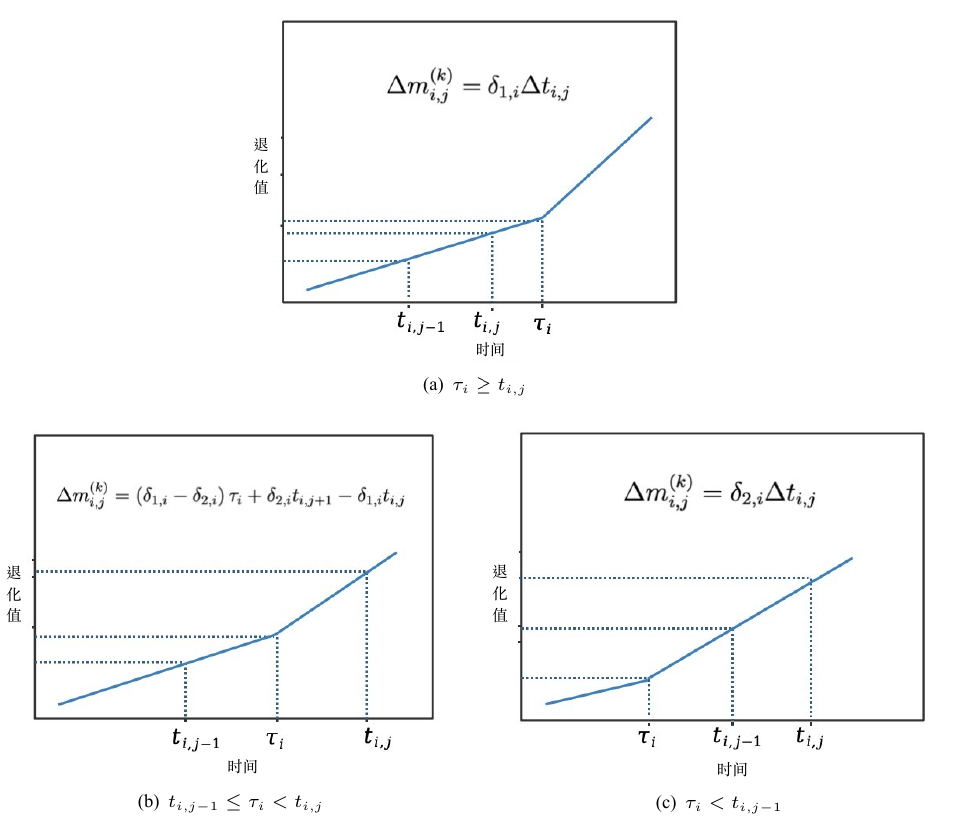

4 基于逆高斯过程的统计建模
4.1 逆高斯过程
尽管维纳过程和伽马过程在退化建模领域得到了广泛应用, 但在处理复杂退化数据时, 其拟合能力可能受到一定限制. 尤其是当退化路径存在显著异质性或动态变化特征时, 传统方法可能难以精准刻画系统的退化规律. 相比之下, 逆高斯(Inverse Gaussian, IG)过程凭借其灵活的分布形式和参数结构, 能够更有效地捕捉退化数据中的异质性和动态演化特征. 其在单调退化建模场景中的适用性已在多个研究中得到验证, 并展现出优越的拟合能力和预测性能 (Peng 等, 2014; Wang 等, 2010; Ye 等, 2014).
若随机过程 \(\{Y(t), t \ge 0\}\) 满足以下性质:
\(Y(0)=0\), 概率为1;
对于 \(t>s>u\), 增量\(Y(t)-Y(s)\) 与 \(Y(s)-Y(u)\) 相互独立;
对于 \(t>s \geq 0\), 增量 \(Y(t)-Y(s)\) 服从 IG 分布 \(\textrm{IG}\left(\alpha (t-s), \lambda(t-s)^2\right)\). 其PDF为 \[ f_{\textrm{IG}}(y; \alpha, \lambda)=\sqrt{\frac{\lambda t^2}{2\pi y^3}} \exp\left\{-\frac{\lambda}{2y} \left( \frac{y}{\alpha} - t \right)^2\right\}. \] 则称该过程为{过程, 记作 \(\{Y(t), t \ge 0\} \sim \textrm{\textrm{IG}}(\alpha t, \lambda t^2)\).
IG过程的均值和方差分别为\(\mathbb{E}[Y(t)]=\alpha t\)和\(\mathbb{Var}[Y(t)]=\alpha^3 t/\lambda\). 从其数学表达形式可以看出, IG过程在刻画产品性能退化规律时具有清晰的物理解释. 其中, 参数 \(\alpha\) 表示退化速率, 直接反映系统性能随时间推移的衰减速度, 而参数 \(\lambda\) 作为扩散系数, 衡量退化过程的波动程度, 表征退化路径的随机性和不确定性. 假设产品失效阈值为 \(\omega\), 则产品寿命定义为 \(T= \inf \{t \mid Y(t) \geq \omega\}\). 此时, 产品寿命 \(T\) 的CDF为 \[\begin{align} F(t) &=P(T \leq t)=P(Y(t)>\omega)\nonumber\\ %=1-F_{I G}\left(\omega ; \alpha t, \lambda t^2\right) \nonumber\\ &=\Phi\left[ \sqrt{\frac{\lambda}{\omega}}(t - \frac{\omega}{\alpha}) \right] - \exp\left({\frac{2 \lambda t}{\alpha}}\right) \Phi\left[-\sqrt{\frac{\lambda}{\omega}}(\frac{\omega}{\alpha} +t)\right], \end{align}\] 其中 \(\Phi(\cdot)\) 为标准正态分布的CDF.
在退化建模中, IG过程 \(\mathcal{IG}(\alpha t, \lambda t^2)\) 假设了线性的平均退化路径. 然而, 实际退化数据通常表现为非线性特征, 并且存在显著的异质性, 即不同产品或系统的退化行为存在差异. 为了克服这些局限性, 本章对经典 IG 模型进行了扩展: 首先, 引入了子群体异质性(详见第 4.2 节), 以便更精准地刻画不同群体之间的异质性, 从而提高模型在复杂数据中的适应性. 其次, 针对某些产品在退化过程中存在明显的阶段性变化, 提出一类新的两阶段重参数化IG过程(详见第 4.3 节), 并基于RUL分布给出了一种自适应替换策略; 最后, 针对非线性退化和带随机效应的IG过程, 介绍一种高效的在线算法, 实现动态更新参数估计并RUL分布的预测 (详见 4.4 节).
4.2 子总体异质性下的逆高斯过程
退化数据通常因不可观测的内生因素（如原材料的初始缺陷）和外部因素（如使用模式）表现出显著的群体内异质性 (Ye 等, 2013). 随机效应模型通过引入服从特定分布（如正态分布 (Si 等, 2012)、截断正态分布 (Ye 等, 2014)、伽马分布 (Peng 等, 2014, 2017)）的随机参数来表征单元间的差异. 然而, 这些模型通常仅适用于描述同一群体内的异质性, 难以处理多个子群体的情况. 在实际应用中, 多子群体共存的现象非常普遍. 例如, 制造过程中的高度变异可能导致微机电系统设备的失效时间呈现多峰分布 (Hartzell 等, 2011; Yuan 等, 2012), 或者在激光单元数据中, 假设多个子群体的模型优于同质群体模型 (Yuan 等, 2015). 类似情况也出现在口腔冲洗器 (Erişoğlu 等, 2011) 和汽车铅酸电池 (Kontar 等, 2017) 的研究中. 为处理这种子群体异质性, 研究者广泛采用混合分布随机效应模型 (Al-Hussaini 等, 1989; Erişoğlu 等, 2011; Li 等, 2017). 然而, 由于此类数据通常较为稀缺, 这些方法在高可靠性产品的失效数据建模中效果有限. 随着传感器技术的进步, 退化数据的可用性显著提高, 但如何建模来自异质群体且具有子群体结构的退化数据, 现有研究仍显不足. 例如, 基于混合高斯模型的广义路径模型 (Yuan 等, 2015) 虽然能够表征单元间的变异性, 但仅适用于环境随机性较小的情况; 而基于混合正态分布参数的维纳退化过程 (Zhang 等, 2017) 则无法有效建模单调退化过程. 因此, 针对子群体异质性退化数据的建模方法仍存在较大局限性, 需进一步研究和改进.
基于上述讨论, 本节提出了一种基于IG过程的新模型, 用于建模存在子群体异质性的退化数据. 该模型引入混合高斯分布作为随机效应分布, 能够近似任意形式的分布 (Komárek 等, 2008; Lesaffre 等, 1991), 同时利用IG过程来有效建模单调退化过程. 针对模型参数增多时对初始值敏感的问题(Lindstrom 等, 1988), 提出一种高效的EM算法, 通过边际化方法实现稳健的参数估计, 并结合偏差修正的百分位数自助法进行区间估计. 本节的结构如下: 第 4.2.1 节介绍带有混合高斯分布随机效应的IG过程; 第 4.2.2 节详细介绍了统计推断方法; 第 4.2.3 节通过模拟研究验证模型与算法的性能; 第 4.2.4 节通过两个案例研究展示模型与算法的实际效果.
4.2.1 模型构建
本小节首先将第 4.1 节中定义的IG过程扩展到非线性退化路径的情形. 令 \(\Lambda(t, \beta)\) 为时间尺度变换函数, 用于描述退化路径的非线性特征, 其中 \(\Lambda(0, \beta) = 0\). 与上一节中定义的IG过程不同, 本节中的增量 \(Y(t + \Delta t) - Y(t)\) 服从 \(IG(\alpha \Delta \Lambda(t, \beta), \lambda \Delta \Lambda(t, \beta)^2)\), 其中 \(\Delta \Lambda(t, \beta) = \Lambda(t + \Delta t, \beta) - \Lambda(t, \beta)\). 为了同时刻画单元与子总体的异质性, 定义 \(\nu = 1/\alpha\) 为随机效应, 并假设其服从混合高斯分布. 在这种设置下, \(\nu\) 同时影响退化过程的均值和方差, 从而刻画了单元间的变异性, 并灵活地将总体划分为多个子总体. 设第 \(k\) 个高斯分布的均值和方差分别为 \(\mu_k\) 和 \(\sigma_k^2 / \lambda\), 则具有子总体异质性的 IG 退化模型为 \[\begin{equation}\label{mnd} \begin{split} Y(t) \mid \nu &\sim \textrm{\textrm{IG}}(\Lambda(t,\beta)/\nu, \lambda\Lambda(t,\beta)^2),\\ \nu &\sim \sum\limits_{k=1}^Kp_k{N}(\mu_k,\sigma_k^2/\lambda), \end{split} \end{equation}\] 其中 \(p_k\) 为第 \(k\) 个子总体的比例, \({N}(\cdot)\) 表示高斯分布, \(K\) 为子群体总数.
注2: 模型\(\eqref{mnd}\)中子总体的方差设定为\(\sigma_k^2/\lambda\), 目的是为了 简化数学推导. 实际上, 从模型的角度来看, 这一设定等同于假设 \(\nu \sim \sum\limits_{k=1}^K p_k N(\mu_k, \delta_k^2)\). 通过参数变换 \(\delta_k^2 = \sigma_k^2 / \lambda\)可知两者是等价的. 然而, 模型 \(\eqref{mnd}\) 的设定在数学表达和后续统计推断中会更加简洁和方便.
基于模型\(\eqref{mnd}\), 定义产品寿命\(T= \inf \{t \mid Y(t) \geq \omega\}\). 则\(T\)的分布可由以下定理给出.
定理 4.1 在模型\(\eqref{mnd}\)下, 产品寿命\(T\)的CDF为
\[\begin{align}\label{cdf}
F_T(t)&=\int_{-\infty}^{\infty}[1-P(Y(t)\le \omega \mid \nu)]f(\nu)\text{d}\nu\nonumber\\
&=\sum\limits_{k=1}^Kp_k\Phi\left(\dfrac{\sqrt{\lambda}(\Lambda(t,\beta)-\omega\mu_k) }{\sqrt{\omega(1+\omega\sigma_k^2)}}\right)\nonumber\\
&\quad -\sum\limits_{k=1}^Kp_k\exp\left[2\lambda\Lambda(t,\beta)(\sigma_k^2\Lambda(t,\beta)+\mu_k)\right]\nonumber\\
&\quad\times\Phi\left( -\dfrac{\sqrt{\lambda}[(1+2\omega\sigma_k^2)\Lambda(t,\beta)+\omega\mu_k] }{\sqrt{\omega(1+\omega\sigma_k^2)}}\right).
\end{align}\]
根据定理 4.1 可知, 当 \(K = 1\) 时, 式 \(\eqref{cdf}\) 就简化为 Peng (2015) 的结果, 表示所有单元来自同一总体; 当 \(K > 1\) 时, 则刻画了包含 \(K\) 个子总体的一般情况.
4.2.2 统计推断
假设在退化试验中有 \(n\) 个样品. 设 \(y_{ij}\) 为第 \(i\) 个样品在测量时间 \(t_{ij}\) (\(j=1,\dots,m_i\), \(i=1,\dots,n\)) 时所观测到的退化值. 令 \(\Delta \bm{y_i}=(\Delta y_{i1},\dots,\Delta y_{im_i})^{'}\), 其中 \(\Delta y_{i1}=y_{i1}\), 且 \(\Delta y_{ij} = y_{ij}-y_{i(j-1)}\), \(i=1,\dots,n\), \(\bm y=(\Delta \bm y_{1},\dots, \Delta \bm y_{n})^{'}\). 设 \(h_{ij}(\beta)=\Lambda(t_{ij},\beta)-\Lambda(t_{i(j-1)},\beta)\), 并且 \(t_{i0}=0\), \(j=1,\dots,m_i\), \(i=1,\dots,n\). 假设样品性能的退化过程服从模型 \(\eqref{mnd}\), 则基于第 \(i\) 个样品的退化数据, 给定 \(\nu_i\), 对任意的 \(j\), 有\(\Delta y_{ij} \sim IG(h_{ij}(\beta)/\nu_i, \lambda h_{ij}(\beta)^2)\), 且 \(\nu_i \sim \sum_{k=1}^K p_k N(\mu_k, \sigma_k^2/\lambda)\). 令 \(\bm \Theta=(\lambda,\beta,p_k,\mu_k,\sigma_k^2,k=1,\dots,K)\). 对于第 \(i\) 个退化路径的完整数据 \((\Delta \bm y_{i},\nu_i)\), 其似然函数为 \[\begin{align} L_i(\Delta \bm y_{i},\nu_i \mid \bm \Theta)&=\prod\limits_{j=1}^{m_i} \sqrt{\dfrac{\lambda h_{ij}(\beta)^2}{2\pi \Delta y_{ij}^3}}\exp\left\{-\dfrac{\lambda}{2\Delta y_{ij}}\left(\nu_i\Delta y_{ij}-h_{ij}(\beta)\right)^2\right\}\nonumber\\ &\quad \times \sum\limits_{k=1}^K p_k\sqrt{\frac{\lambda}{2\pi\sigma_k^2}}\exp\left\{-\dfrac{\lambda(\nu_i-\mu_k)^2}{2\sigma_k^2}\right\}.\label{compdata} \end{align}\] 基于 \(\prod_{i=1}^n L_i(\Delta \bm y_{i},\nu_i \mid \bm \Theta)\) 求解参数 \(\bm \Theta\) 的估计通常有两种方法:
- EM算法: Wang 等 (2007) 提出了一类EM算法, 用于求非线性随机效应混合模型的参数估计. 然而, 该方法在数学推导上较为复杂, 难以求解, 并且需要处理两类潜在变量, 这显著降低了计算效率.
- 贝叶斯分析: 引入潜在变量简化 \(\eqref{compdata}\) 中的求和结构, 并为参数 \(\bm{\Theta}\) 指定先验分布, 结合 MCMC 算法生成后验样本, 从而估计 \(\bm \Theta\). 然而, 在实际实施过程中, 后验抽样可能面临一些挑战. 特别是参数 \(\sigma_k^2\) 的先验分布难以确定, 一些弱信息先验（如均匀分布或逆伽马分布）在特定情况下可能导致后验分布不存在, 相关问题已在文献中得到详细讨论 (Gelman, 2006; Polson 等, 2012).
基于以上分析, 本小节提出一种新的EM算法: 首先对\(\nu_i\)做边际化处理, 然后构造EM算法来实现参数估计.
4.2.2.1 EM 算法
由于 \(\nu_i\) 不可观测, 对 \(L_i(\Delta \bm y_{i},\nu_i \mid \bm \Theta)\) 中的 \(\nu_i\) 进行积分后, 基于第 \(i\) 个样品退化数据的似然函数为 \[\begin{align}\label{margi}
L_i(\Delta \bm y_{i} \mid \bm \Theta)&=\int_{-\infty}^\infty L_i(\Delta \bm y_{i},\nu_i \mid \bm \Theta)\text{d}\nu_i \nonumber\\
&=(2\pi\lambda)^{m_i/2-1}y_{im_i}^{-1/2}\prod\limits_{j=1}^{m_i}\dfrac{h_{ij}(\beta)}{\Delta y_{ij}^{3/2}}\nonumber\\
&\ \ \ \times\exp\left\{-\dfrac{\lambda}{2}\left[\sum\limits_{j=1}^{m_i}h_{ij}(\beta)^2/\Delta y_{ij}-\Lambda(t_{im_i},\beta)^2/y_{im_i} \right]\right\}\nonumber\\
&\quad\times\sum\limits_{k=1}^K \dfrac{p_k\sqrt{\lambda}}{\sqrt{2\pi(1/y_{im_i}+\sigma_k^2)}}
\exp\left\{-\dfrac{\lambda(\Lambda(t_{im_i},\beta)/y_{im_i}-\mu_k)^2}{2(1/y_{im_i}+\sigma_k^2)} \right\}\nonumber\\
&=G_i(\Delta \bm y_{i},\beta,\lambda)\sum\limits_{k=1}^K \dfrac{p_k\sqrt{\lambda}}{\sqrt{2\pi(1/y_{im_i}+\sigma_k^2)}}\nonumber\\
&\quad \times\exp\left\{-\dfrac{\lambda(\Lambda(t_{im_i},\beta)/y_{im_i}-\mu_k)^2}{2(1/y_{im_i}+\sigma_k^2)} \right\},
\end{align}\] 其中 \[\begin{equation*}
\begin{split}
G_i(\Delta \bm y_{i},&\beta,\lambda)=(2\pi\lambda)^{m_i/2-1}y_{im_i}^{-1/2}\\
&\times \prod\limits_{j=1}^{m_i}\dfrac{h_{ij}(\beta)}{\Delta y_{ij}^{3/2}}\exp\left\{-\dfrac{\lambda}{2}\left[\sum\limits_{j=1}^{m_i}h_{ij}(\beta)^2/\Delta y_{ij}-\Lambda(t_{im_i},\beta)^2/y_{im_i} \right]\right\}.
\end{split}
\end{equation*}\] 为简化式 \(\eqref{margi}\), 引入潜在变量 \(\bm Z_i=(Z_{i1},\dots,Z_{iK})^{'}\) 表示第 \(i\) 个样品对应的子总体标签. \(\bm Z_i\) 为多项分布变量, 当 \(Z_{ik}=1\) 且 \(Z_{ij}=0, \forall j \neq k\) 时, 第 \(i\) 个样品属于第 \(k\) 个子总体. 给定 \(Z_{ik}=1\) 时, 似然函数为
\[\begin{equation*}
\begin{split}
L_i(\Delta \bm y_{i} \mid &Z_{ik}=1,\bm \Theta)=G_i(\Delta \bm y_{i},\bm \beta,\lambda) \\
&\times \dfrac{\sqrt{\lambda}}{\sqrt{2\pi(1/y_{im_i}+\sigma_k^2)}}
\exp\left\{-\dfrac{\lambda(\Lambda(t_{im_i},\beta)/y_{im_i}-\mu_k)^2}{2(1/y_{im_i}+\sigma_k^2)} \right\}.
\end{split}
\end{equation*}\] 因此, 给定第 \(i\) 个样品的完整数据 \((\Delta \bm y_{i}, \bm Z_i)\), 似然函数可表示为
\[\begin{equation*}
\begin{split}
L_i(\Delta \bm y_{i},&\bm Z_i \mid \bm \Theta) = G_i(\Delta \bm y_{i},\beta,\lambda)\\
&\times \prod\limits_{k=1}^K \left[\dfrac{p_k\sqrt{\lambda}}{\sqrt{2\pi(1/y_{im_i}+\sigma_k^2)}} \exp\left\{-\dfrac{\lambda(\Lambda(t_{im_i},\beta)/y_{im_i}-\mu_k)^2}{2(1/y_{im_i}+\sigma_k^2)} \right\}\right]^{Z_{ik}}.
\end{split}
\end{equation*}\] 对于所有样品的完整数据 \((\Delta \bm y, \bm Z)\), 参数 \(\bm \Theta\) 的对数似然函数为 \[\begin{align}\label{lf}
l(\Delta \bm y, \bm Z \mid \bm \Theta)&=\sum\limits_{i=1}^n\log(L_i(\Delta \bm y_{i},\bm Z_i \mid \bm \Theta))\nonumber\\
&=C+\dfrac{1}{2}\sum\limits_{i=1}^nm_i\log(\lambda)+\sum\limits_{i=1}^n\sum\limits_{j=1}^{m_i}\log h_{ij}(\beta)\nonumber\\
&\quad -\dfrac{\lambda}{2}\left[\sum\limits_{i=1}^n\sum\limits_{j=1}^{m_i} h_{ij}(\beta)^2/\Delta y_{ij}-\sum\limits_{i=1}^n\Lambda(t_{im_i},\beta)^2/y_{im_i}\right]\nonumber\\
&\quad +\sum\limits_{i=1}^n\sum\limits_{k=1}^{K} Z_{ik}\Bigg[\log p_k-\dfrac{1}{2}\log(1/y_{im_i}+\sigma_k^2)\nonumber\\
&\quad -
\dfrac{\lambda(\Lambda(t_{im_i},\beta)/y_{im_i}-\mu_k)^2}{2(1/y_{im_i}+\sigma_k^2)} \Bigg],
\end{align}\] 其中 \[C = -\sum_{i=1}^n \left[ m_i \log(2\pi) + \log(y_{im_i}) + 3 \sum_{j=1}^{m_i} \log(\Delta y_{ij}) \right] / 2.
\] EM 算法是一个迭代算法, 包含E步和M步. E 步的计算是在观测数据 \(\Delta \bm y\) 和上次迭代参数值 \(\bm \Theta^{(s)}\) 条件下, 对 \(\bm Z\) 的对数似然函数的期望. 可知\(\bm Z_i\) 的条件分布为多项分布: \(\bm Z_i \mid \Delta \bm y_{i},\bm \Theta\sim \mathcal{MN}(1;w_{i1}(\bm \Theta),\dots,w_{iK}(\bm \Theta))\), 其中 \[\begin{equation*}
w_{ik}(\bm \Theta)=\dfrac{ p_k(1/y_{im_i}+\sigma_k^2)^{-1}
\exp\left\{-\dfrac{\lambda(\Lambda(t_{im_i},\beta)/y_{im_i}-\mu_k)^2}{2(1/y_{im_i}+\sigma_k^2)} \right\}}
{\sum\limits_{k=1}^K p_k(1/y_{im_i}+\sigma_k^2)^{-1}
\exp\left\{-\dfrac{\lambda(\Lambda(t_{im_i},\beta)/y_{im_i}-\mu_k)^2}{2(1/y_{im_i}+\sigma_k^2)} \right\}},
\end{equation*}\] 表示第 \(i\) 个样品属于第 \(k\) 个子总体的概率. 在 E 步中, 结合\(\bm Z_i\) 的条件分布, 对\(l(\Delta \bm y,\bm Z \mid \bm \Theta)\) 关于 \(\bm Z\)求期望可得 \[\begin{equation*}\label{fcdata}
\begin{split}
Q (\bm \Theta,\bm \Theta^{(s)})
%=\text{E}\left(l(\Delta \bm y, \bm Z \mid \bm \Theta) \mid \Delta\bm y, \bm \Theta^{(s)}\right)\\
=\ & C+\dfrac{1}{2}\sum\limits_{i=1}^nm_i\log(\lambda)+\sum\limits_{i=1}^n\sum\limits_{j=1}^{m_i}\log h_{ij}(\beta)\\
&-\dfrac{\lambda}{2}\left[\sum\limits_{i=1}^n\sum\limits_{j=1}^{m_i} h_{ij}(\beta)^2/\Delta y_{ij}-\sum\limits_{i=1}^n\Lambda(t_{im_i},\beta)^2/y_{im_i}\right]\\
&+\sum\limits_{i=1}^n\sum\limits_{k=1}^{K} w_{ik}^{(s)}\Bigg[\log p_k-\dfrac{1}{2}\log(1/y_{im_i}+\sigma_k^2)\nonumber\\
&\qquad -\dfrac{\lambda(\Lambda(t_{im_i},\beta)/y_{im_i}-\mu_k)^2}{2(1/y_{im_i}+\sigma_k^2)} \Bigg],
\end{split}
\end{equation*}\] 其中 \(w_{ik}^{(s)}=w_{ik}(\bm \Theta^{(s)})\). 在 M 步中通过最大化\(Q(\bm \Theta,\bm \Theta^{(s)})\)得到 \(\bm \Theta^{(s+1)}\). 具体更新公式见式 \(\eqref{wiener-RESS2021-arg}\), 详细推导见本节附录 4.2.5. EM 算法的实施过程与 2.2.2.1 节类似, 这里不再重复介绍.
注3: 混合模型存在识别问题, 即交换子总体标签不会影响似然函数 \(\prod_{i=1}^n L_i(\Delta \bm y_i \mid \bm \Theta)\) 的值 (Celeux 等, 2000). 为确保参数可识别性, 在计算过程中可对子总体均值 \(\mu_k\) 按递增顺序排列.
注4: 所提出的 EM 算法基于给定的子总体数 \(K\) 进行计算. \(K\) 的选择属于模型选择问题, 本节通过 AIC 来确定最优的 \(K\). AIC 定义为 \[{\rm AIC} = -2\sum_{i=1}^n \log L_i(\Delta \bm y_i \mid \bm{\hat{\Theta}}) + 2 \times (3K + 1).\] 最小的 AIC 值对应最优的\(K\). 在实际操作中, 可预设一个最大值 \(K\), 该值取决于样本大小 \(n\), 确保 \(n\) 大于模型参数个数, 以保证参数的可识别性.
注5: 本节中样品的标签信息不可观测. 基于参数估计值 \(\hat{\Theta}\), 可通过后验概率 \(w_{ik}(\hat{\Theta})\) 估计样品的标签. 若 \(w_{ij}(\hat{\Theta}) = \max\{w_{ik}(\hat{\Theta}), k=1,\dots,K\}\), 则样品 \(i\) 被归为第 \(j\) 个子总体. 因此, EM 算法的实施过程同时也是样品聚类的学习过程.
4.2.2.2 收敛速率
EM算法通过迭代不断优化参数估计. 根据 Wu (1983) 的定理1, 该算法能够使对数似然函数收敛到一个稳定点或局部极大值. 为实现该算法, 需要随机初始化参数值, 通过多次迭代寻找最优解. 最终, 选取使似然函数值达到最大的点作为参数估计.
对于混合高斯分布, Xu 等 (1996) 的定理1表明, EM算法本质上是一种梯度上升算法, 且收敛速度与对数似然函数的Hessian矩阵的条件数有关. 在本模型中, Hessian矩阵 \(H(\bm{\Theta})\) 可由对数似然函数 \(l(\bm{\Theta}) = \sum_{i=1}^n \log L_i(\Delta \bm{y}_i \mid \bm{\Theta})\) 求得, 具体为 \(H(\bm\Theta)=\dfrac{\partial^2 l(\bm\Theta)}{\partial\bm\Theta\partial\bm\Theta^{'}}.\) 在参数更新中, 使用牛顿法求解 \(\sigma_k^2\) 和 \(\beta\) (见式 \(\eqref{sigmas}\) 和 \(\eqref{betas}\)) . 因此, 所提的EM算法也可视为一种梯度上升算法.
定理 4.2 在EM算法的每次迭代中有 \[\begin{eqnarray*} P^{(s+1)}-P^{(s)}&=&G_P^{(s)}~\dfrac{\partial l(\bm\Theta)}{\partial P}\Big|_{\bm\Theta=\bm\Theta^{(s)}},\\ \mu_k^{(s+1)}-\mu_k^{(s)}&=&G_{\mu_k}^{(s)}~\dfrac{\partial l(\bm\Theta)}{\partial \mu_k}\Big|_{\bm\Theta=\bm\Theta^{(s)}},\\ \lambda^{(s+1)}-\lambda^{(s)}&=&G_{\lambda}^{(s)}~\dfrac{\partial l(\bm\Theta)}{\partial \lambda}\Big|_{\bm\Theta=\bm\Theta^{(s)}},\\ (\sigma_k^2)^{(s+1)}-(\sigma_k^2)^{(s)}&=&G_{\sigma_k}^{(s)}~\dfrac{\partial l(\bm\Theta)}{\partial \sigma_k^2}\Big|_{\bm\Theta=\bm\Theta^{(s)}},\\ \beta^{(s+1)}-\beta^{(s)}&=&G_{\beta}^{(s)}~\dfrac{\partial l(\bm\Theta)}{\partial \beta}\Big|_{\bm\Theta=\bm\Theta^{(s)}}, \end{eqnarray*}\] 其中 \(P=(p_1,\dots,p_K)^{'}\), \[\begin{align*} h_{ij}&=h_{ij}(\beta^{(s)}), h^{'}_{ij}=h^{'}_{ij}(\beta^{(s)}), h^{''}_{ij}=h^{''}_{ij}(\beta^{(s)}),\\ \Lambda_i&=\Lambda(t_{im_i},\beta^{(s)}), \Lambda_i^{'}=\Lambda^{'}(t_{im_i},\beta^{(s)}), \Lambda_i^{''}=\Lambda^{''}(t_{im_i},\beta^{(s)}),\\ G_P^{(s)}&=\dfrac{1}{n}\left[\textrm{diag}\{p_1^{(s)},\dots,p_K^{(s)}\}-P^{(s)}\left(P^{(s)}\right)^{'}\right],\\ G_{\mu_k}^{(s)}&=\left[\sum_{i=1}^{n}\lambda^{(s)}w_{ik}^{(s)}/\left(1/y_{im_i}+(\sigma_k^2)^{(s)}\right)\right]^{-1},\\ G_{\lambda}^{(s)}&=2\lambda^{(s)} \left\{\sum\limits_{i=1}^n\left[\sum\limits_{j=1}^{m_i} \dfrac{h_{ij}^2}{\Delta y_{ij}}-\dfrac{\Lambda_i^2}{y_{im_i}}+ \sum\limits_{k=1}^{K} w_{ik}^{(s)}\dfrac{(\Lambda_i/y_{im_i}-\mu_k^{(s)})^2}{2(1/y_{im_i}+(\sigma_k^2)^{(s)})}\right] \right\}^{-1},\\ G_{\sigma_k}^{(s)}&=-\left\{ \sum\limits_{i=1}^nw_{ik}^{(s)}\left[\dfrac{\lambda^{(s)}(\Lambda_i/y_{im_i}-\mu_k^{(s)})^2}{\left(1/y_{im_i}+(\sigma_k^2)^{(s)}\right)^3}-\dfrac{1}{2\left(1/y_{im_i}+(\sigma_k^2)^{(s)}\right)^2}\right] \right\}^{-1},\\ G_{\beta}^{(s)}&=-\Bigg\{\sum_{i=1}^{n}\Bigg[\sum_{j=1}^{m_i}\dfrac{h_{ij}^{''}h_{ij}-(h_{ij}^{'})^2}{h_{ij}^2}\\ &-\lambda^{(s)}\left(\sum_{j=1}^{m_i}\dfrac{h_{ij}^{''}h_{ij}+(h_{ij}^{'})^2}{\Delta y_{ij}}-\dfrac{\Lambda_{i}^{''}\Lambda_{i}-(\Lambda_{i}^{'})^2}{y_{im_i}}\right)\Bigg]\\ &-\sum_{i=1}^{n}\sum_{j=1}^{m_i}\dfrac{\lambda^{(s)}w_{ik}^{(s)}}{1+y_{im_i}(\sigma_k^2)^{(s)}}\left(\dfrac{\Lambda_{i}^{''}\Lambda_{i}^2+2(\Lambda_{i}^{'})^2\Lambda_i}{y_{im_i}} -\mu_k^{(s)}\left(\Lambda_{i}^{''}\Lambda_{i}+(\Lambda_{i}^{'})^2\right)\right) \Bigg\}^{-1}. \end{align*}\]
定理 4.2 的证明见本节附录 4.2.5. Xu 等 (1996) 表明, 在约束条件 \(\sum_{k=1}^{K} p_k^{(s)} = 1\) 且 \(p_k^{(s)} \ge 0\) (对所有 \(k\)) 的情况下, \(G_P^{(s)}\) 是正定矩阵, \(G_{\mu_k}^{(s)}\) 和 \(G_{\lambda}^{(s)}\) 是正值, 这一点易于验证. 在定理 4.2 的证明中, \(G_{\sigma_k}^{(s)}\) 和 \(G_{\beta}^{(s)}\) 分别为 \[G_{\sigma_k}^{(s)} = - \frac{\partial^2 l(\bm{\Theta})}{\partial \sigma_k^2 \partial \sigma_k^2} \Big|{\bm{\Theta}=\bm{\Theta}^{(s)}} \quad \text{和} \quad G_{\beta}^{(s)} = - \frac{\partial^2 l(\bm{\Theta})}{\partial \beta \partial \beta} \Big|_{\bm{\Theta}=\bm{\Theta}^{(s)}},\] 对于足够大的 \(n\), 这些值均为正. 定义 \[\mathcal{G}(\bm\Theta)=\textrm{diag}\{G_{\lambda},~G_{\beta},~G_P,~ G_{\mu_1},~\dots,~G_{\mu_K},~G_{\sigma_1},~\dots,~G_{\sigma_K} \},\] 这是一个正定矩阵. 根据定理 4.2 可写为 \[\begin{equation}
\bm\Theta^{(s+1)}=\bm\Theta^{(s)}+\mathcal{G}(\bm\Theta^{(s)})~\dfrac{\partial l(\bm\Theta)}{\partial \bm\Theta}\Big|_{\bm\Theta=\bm\Theta^{(s)}}.
\end{equation}\] 因此, 在每次EM算法迭代中, 搜索方向 \(\bm{\Theta}^{(s+1)} - \bm{\Theta}^{(s)}\) 在对数似然函数梯度上具有正投影. 令 \(\mathcal{E} = \{\mathcal{E}_1, \dots, \mathcal{E}_d\}\) 为一组独立的单位基向量, 覆盖 \(\bm{\Theta}\) 的参数空间. 令 \(\gamma_{s+1} = \frac{|\bm{\Theta}^{(s+1)} - \bm{\Theta}^{\ast}|}{|\bm{\Theta}^{(s)} - \bm{\Theta}^{\ast}|}\), 其中 \(\bm{\Theta}^{\ast}\) 是 \(\bm{\Theta}\) 的真实值. 根据 Xu 等 (1996) 的式(16), EM算法的收敛速度由以下不等式界定: \[\begin{equation}\label{crate}
\gamma_{s+1}\le\sqrt{1+\kappa_M^2\left[\mathcal{E}^{'}\mathcal{G}(\bm\Theta^\ast)H(\bm\Theta^\ast)\mathcal{E}\right]-2\kappa_m\left[\mathcal{E}^{'}\mathcal{G}(\bm\Theta^\ast)H(\bm\Theta^\ast)\mathcal{E}\right]},
\end{equation}\] 其中 \(\kappa_m[A]\) 和 \(\kappa_M[A]\) 分别表示矩阵 \(A\) 的最小和最大特征值. EM算法的收敛速度依赖于矩阵 \(\mathcal{E}' \mathcal{G}(\bm{\Theta}^{\ast}) H(\bm{\Theta}^{\ast}) \mathcal{E}\) 的条件数, 定义为
\[\begin{equation}\label{condnum}
\mathcal{C}=\kappa_M\left[\mathcal{E}^{'}\mathcal{G}(\bm\Theta^\ast)H(\bm\Theta^\ast)\mathcal{E}\right]/\kappa_m\left[\mathcal{E}^{'}\mathcal{G}(\bm\Theta^\ast)H(\bm\Theta^\ast)\mathcal{E}\right].
\end{equation}\] 较大的 \(\mathcal{C}\) 会导致较慢的收敛速度. 当 \(\mathcal{C}=1\) 且 \(\kappa_M[\mathcal{E}' \mathcal{G}(\bm{\Theta}^{\ast}) H(\bm{\Theta}^{\ast}) \mathcal{E}] = 1\) 时, 式\(\eqref{crate}\)中的上界收敛至 \(0\), 实现超线性收敛速度. 在算法实施中, 用每次迭代的估计值代替 \(\eqref{condnum}\) 中的 \(\bm{\Theta}^\ast\), 以监控条件数 \(\mathcal{C}\) 的变化, 从而评估不同算法的收敛速度.
4.2.2.3 自助法计算区间
Louis (1982) 提出了推导参数 Fisher 信息矩阵的方法. 但该模型获得其解析形式较为困难. 因此, 可采用偏差校正百分位自助法计算参数的区间估计 (Efron 等, 1993). 对于参数的任意函数 \(\eta = g(\bm{\Theta})\), 具体实施步骤如下:
4.2.3 模拟实验
本节将通过蒙特卡洛仿真来验证EM算法的有效性. 设定总体包含两个子群体 (\(K=2\)), 异质性参数为 \(p_1=0.4\)、\(p_2=0.6\)、\(\mu_1=2\)、\(\mu_2=4\)、\(\sigma_1^2=0.2\)、\(\sigma_2^2=0.5\). 模型的其他参数包括 \(\Lambda(t,\beta) = t^{1.5}\) 和 \(\lambda = 1\), 测量时间点设置为 \((t_1,t_2,\dots,t_m) = (2,4,\dots,2m)\). 样本大小和测量次数分别选取 \(n=50,100\) 和 \(m=10,20\). 为评估不同 \((n,m)\) 组合对估计结果的影响, 每个组合重复模拟2000次, EM算法的容忍误差设为 \(\epsilon = 10^{-5}\).
表 \(\ref{tbl-simu1}\) 列出了基于2000次模拟的模型参数估计结果. 可发现:
在固定 \(m\) 的情况下, 随着样本量 \(n\) 增加, 参数估计的偏差和RMSE显著降低.
在固定 \(n\) 的情况下, 随着测量次数 \(m\) 增加, 参数 \(\lambda\) 和 \(\beta\) 的RMSE明显减少, 而其他模型参数的 RMSE 几乎保持不变. 这是因为异质性的信息主要由样本量决定, 而参数 \(\lambda\) 和 \(\beta\) 的估计精度依赖于总测量次数\(n \times m\). 例如, 当 \((n,m) = (50,20)\) 和 \((100,10)\) 时, 两者总测量次数均为1000, 对应的 \(\lambda\) 和 \(\beta\) 的估计RMSE非常接近.
假设阈值为 \(\omega=10\), 根据式 \(\eqref{cdf}\) 绘制产品失效时间的分布函数. 图 4.1 展示了基于估计的分布函数, 其中实线为真实分布函数, 虚线为表 \(\ref{tbl-simu1}\) 中平均估计得到的分布函数, 灰色虚线为每个数据集的估计结果 (仅绘制前100条以便说明) . 从图中可以看出, 随着样本量增加, 分布函数的估计精度逐步提高. 对于固定样本量, 不同 \(m\) 的分布函数估计结果相似, 这与表 \(\ref{tbl-simu1}\) 的分析一致.
4.2.4 实例分析
本节应用所提模型分析两个实际数据集. 第 4.2.4.1 节展示模型可准确识别子总体数量, 并对每个样品实现分类. 第 4.2.4.2 节通过与其他两种考虑子总体的现有模型进行 AIC 比较, 验证模型有效性, 同时评估 EM 算法的计算效率.
4.2.4.1 集成电路器件退化数据
为验证模型的有效性, 选取了一个集成电路器件退化数据的实际案例进行分析 (详见图 1.6). 根据测试条件, 设备被分为三个子总体, 且每个设备的子总体归属已知. 图 4.2-(a) 显示了设备分类结果, 不同颜色代表不同子总体. 采用第 4.2.2.1 节的方法, 通过AIC确定子总体数量, 并在算法运行后估计设备标签. 由于真实数据已知, 可直接评估模型和算法的分类准确性.
数据采用线性退化路径 \(\Lambda(t,\beta) = t\) 进行拟合. 表 \(\ref{tbl-laserpar}\) 列出了不同子总体数量 \(K=1, 2, 3, 4\) 时的参数估计和AIC值. 结果显示, \(K=3\)对应最小的AIC值, 表明数据中存在三个子群体, 与实际情况相符. 图 4.2-(b) 展示了基于 \(K=3\) 的分类结果. 此外, 本方法与广义路径模型 (Yuan 等, 2015) (图 4.2-(c)) 和维纳过程模型 (Zhang 等, 2017) (图 4.2-(d)) 进行了比较. 在本方法中, 仅有一个 \(237^\circ C\) 组的样品被错误分类为 \(195^\circ C\) (用粗长虚线标出) , 分类准确率达到 \(97.06%\). 相比之下, 其他两种模型各有三个样品分类错误, 表明本方法分类效果更佳. 值得注意的是, Wang 等 (2007) 提出的EM算法不适用于此例, 其复杂的数学表达式使得推导困难. 同样, 基于MCMC的贝叶斯分析也不适用, 因为在没有先验信息的情况下指定九个参数的先验分布可能导致不适当的后验分布 (Gelman, 2006; Polson 等, 2012), 且MCMC算法计算负担重, 收敛时间长. 这些结果进一步证实了模型和算法在确定子总体数量和准确分类方面的有效性.
4.2.4.2 铝合金裂纹退化数据
本小节以铝合金裂纹退化数据为例 (详见图 1.7), 考虑非线性退化路径函数 \(\Lambda(t,\beta)=t^\beta\) 和 \(\Lambda(t,\beta)=\exp{(\beta t)}-1\), 并分别设置 \(K=1,2,3,4\). 各模型的点估计结果和 AIC 值列于表 \(\ref{tbl-crackesti}\). 结果显示, \(\Lambda(t,\beta)=\exp{(\beta t)}-1\) 的模型在 AIC 值上显著优于其他模型. 为方便表述, 本小节后续将直接以“模型”代指“使用 \(\Lambda(t,\beta)=\exp{(\beta t)}-1\) 的模型”. 在子总体数量的选择上, \(K=2\) 的模型 AIC 值最小, 其次是 \(K=3\) 的模型, 两者 AIC 值非常接近.
图 4.3 展示了不同 \(K\) 值下估计的失效时间分布, 其中黑点为拟合随机效应非线性模型的结果, 可视为“伪”失效时间点. 可以看出, \(K=3\) 的模型拟合效果更好. 然而, AIC 综合考虑了拟合优度与模型复杂度, 表明 \(K=2\) 的模型更合适. 这可能是因为 \(K=3\) 的模型存在过拟合现象. 表 \(\ref{tbl-crackci5}\) 列出了 \(K=2\) 和 \(K=3\) 模型参数的 95% 自助法置信区间, 图 4.3 同时展示了 \(K=2\) 模型的 95% 点估计自助法置信区间. 似然比检验结果显示: 原假设为\(K=1\)对备择假设\(K=2\) 的 检验P值为 0.021, 而原假设为 \(K=2\)对 备择假设\(K=3\) 的检验P值为 0.12. 这表明在显著性水平 0.05 下, 30 个样本中存在两个子总体. 对于 \(K=2\) 的情况, 广义路径模型 (Yuan 等, 2015) 和维纳过程模型 (Zhang 等, 2017) 的 AIC 值分别为 -105.69 和 -117.83, 而该模型的 AIC 值更低, 显示了更优的性能. 这可能是因为广义路径模型未能捕捉时间变化的退化波动, 而维纳过程更适合非单调退化路径. 需要注意的是, 混合高斯分布可能导致负值, 与单调递增退化路径的假设冲突, 但根据估计参数, \(\nu\) 为负的概率仅为 \(2.031 \times 10^{-6}\), 可忽略不计.
通过监测对数似然函数值评估所提 EM 算法的收敛性, 容差设定为 \(\epsilon=1 \times 10^{-5}\). 图 4.4 (a) 显示了每次迭代中对数似然函数的变化, 当 \(|\sum_{i=1}^n[\log L_i(\bm\Delta y_i|\bm\Theta^{(s+1)})-\log L_i(\bm\Delta y_i|\bm\Theta^{(s)})]|<\epsilon\) 时, 算法停止. 在本例中, 收敛在第 45 次迭代后实现.
图 4.4 (b) 对比了所提 EM 算法与简单梯度上升算法每次迭代的条件数, 其中简单梯度上升算法基于矩阵 \(H(\bm\Theta)\) 计算条件数. 从图中可以看出, 所提 EM 算法的条件数更小, 表明其收敛速度更快. 图 4.5 显示了每次迭代的模型参数估计值变化. 可以看到, 所提 EM 算法的参数估计值收敛非常迅速, 计算时间仅为 0.5 秒 (测试环境: Windows 7 系统, Intel Core 2 Duo 处理器, 2.4 GHz, 4 GB 内存). 相比之下, (Wang 等, 2007) 的 EM 算法也需 45 次迭代, 但计算时间为 1.63 秒; 而基于 MCMC 方法 (Marin 等 (2005) 的第 4.3 节) 的算法需要 20,000 次迭代, 计算时间达 23.15 秒. 三种方法的参数估计结果列于表 \(\ref{tbl-comptime}\). 图 4.6 展示了在假设存在两个子群体时, 30 个单元的聚类情况. 结果显示, 第 1 组样品的性能退化速度明显快于第 2 组.
4.2.5 附录
EM 算法技术细节
M 步可以通过求解以下方程实现. \[\begin{align*} \dfrac{\partial Q(\bm\Theta,\bm\Theta^{(s)})}{\partial p_k}&=\dfrac{\sum\limits_{i=1}^nw_{ik}^{(s)}}{p_k}=0, \\ \dfrac{\partial Q(\bm\Theta,\bm\Theta^{(s)})}{\partial \mu_k}&= \sum\limits_{i=1}^n w_{ik}^{(s)}\lambda(\Lambda(t_{im_i},\beta)/y_{im_i}-\mu_k)/(1/y_{im_i}+\sigma_k^2)=0,\\ \dfrac{\partial Q(\bm\Theta,\bm\Theta^{(s)})}{\partial \sigma_k^2}& =-\dfrac{1}{2} \sum\limits_{i=1}^n \left[\dfrac{w_{ik}^{(s)}}{1/y_{im_i}+\sigma_k^2} - \dfrac{w_{ik}^{(s)}\lambda(\Lambda(t_{im_i},\beta)/y_{im_i}-\mu_k)^2}{(1/y_{im_i}+\sigma_k^2)^2}\right]=0, \\ & \qquad k=1,\dots,K,\\ \dfrac{\partial Q(\bm\Theta,\bm\Theta^{(s)})}{\partial \lambda}&= \dfrac{1}{2}\sum\limits_{i=1}^n\left[ m_i/\lambda- \sum\limits_{j=1}^{m_i} h_{ij}(\beta)^2/\Delta y_{ij}+\Lambda(t_{im_i},\beta)^2/y_{im_i} \right. \\ &\quad \left. - \sum\limits_{k=1}^{K} w_{ik}^{(s)}\dfrac{(\Lambda(t_{im_i},\beta)/y_{im_i}-\mu_k)^2}{2(1/y_{im_i}+\sigma_k^2)} \right]=0,\\ \dfrac{\partial Q(\bm\Theta,\bm\Theta^{(s)})}{\partial \beta}&= \sum\limits_{i=1}^n \left[ \sum\limits_{j=1}^{m_i}\dfrac{h^{'}_{ij}(\beta)}{h_{ij}(\beta)}- \lambda\left(\sum\limits_{i=1}^{m_i}h^{'}_{ij}(\beta)h_{ij}(\beta)/\Delta y_{ij}-\Lambda^{'}(t_{im_i},\beta)\Lambda(t_{im_i},\beta)/y_{im_i}\right) \right]\\ &- \sum\limits_{i=1}^n\sum\limits_{k=1}^{K} w_{ik}^{(s)}\lambda\Lambda^{'}(t_{im_i},\beta)\Lambda(t_{im_i},\beta)(\Lambda(t_{im_i},\beta)/y_{im_i}-\mu_k)/(1+y_{im_i}\sigma_k^2)=0. \end{align*}\] 通过求解上述方程, 可求得第 \((s+1)\) 次迭代的参数估计值 \(\bm \Theta^{(s+1)}\), 如下所示 \[\begin{eqnarray} p_k^{(s+1)}&=&\dfrac{\sum\limits_{i=1}^nw_{ik}^{(s)}}{n},\nonumber\\ \mu_k^{(s+1)}&=&\dfrac{\sum\limits_{i=1}^nw_{ik}^{(s)}\Lambda(t_{im_i},\beta^{(s)})/(y_{im_i}/(\sigma_k^2)^{(s)}+1)} {\sum\limits_{i=1}^nw_{ik}^{(s)}/(1/y_{im_i}+(\sigma_k^2)^{(s)})},\nonumber\\ \lambda^{(s+1)}&=&\dfrac{\sum\limits_{i=1}^nm_i}{\sum\limits_{i=1}^n\left[\sum\limits_{j=1}^{m_i} h_{ij}(\beta^{(s)})^2/\Delta y_{ij}-\Lambda(t_{im_i},\beta^{(s)})^2/y_{im_i}+ \sum\limits_{k=1}^{K} w_{ik}^{(s)}\dfrac{(\Lambda(t_{im_i},\beta^{(s)})/y_{im_i}-\mu_k^{(s)})^2}{2(1/y_{im_i}+(\sigma_k^2)^{(s)})}\right] },\nonumber \end{eqnarray}\] \((\sigma_k^2)^{(s+1)}\) 可以通过求解以下方程得到. \[\begin{equation}\label{sigmas} \sum\limits_{i=1}^n \left[\dfrac{w_{ik}^{(s)}}{1/y_{im_i}+\sigma_k^2}- \dfrac{w_{ik}^{(s)}\lambda^{(s)}(\Lambda(t_{im_i},\beta^{(s)})/y_{im_i}-\mu_k^{(s)})^2}{(1/y_{im_i}+\sigma_k^2)^2}\right]=0, \end{equation}\] \(\beta^{(s+1)}\) 可以通过求解以下方程得到. \[\begin{align}\label{betas} &\sum\limits_{i=1}^n \left[\sum\limits_{j=1}^{m_i}\dfrac{h^{'}_{ij}(\beta)}{h_{ij}(\beta)}- \lambda^{(s)}\left(\sum\limits_{i=1}^{m_i}h^{'}_{ij}(\beta)h_{ij}(\beta)/\Delta y_{ij}-\Lambda^{'}(t_{im_i},\beta)\Lambda(t_{im_i},\beta)/y_{im_i}\right) \right]\nonumber\\ &- \sum\limits_{i=1}^n\sum\limits_{k=1}^{K} w_{ik}^{(s)}\lambda^{(s)}\Lambda^{'}(t_{im_i},\beta) \Lambda(t_{im_i},\beta)\dfrac{\Lambda(t_{im_i},\beta)/y_{im_i}-\mu_k^{(s)}}{1+y_{im_i}(\sigma_k^2)^{(s)}}=0. \end{align}\] 通过使用 R 软件中的 uniroot() 函数, 求解式 \(\eqref{sigmas}\) 和 \(\eqref{betas}\) 的零点.
定理 4.2 的证明
对数似然函数定义为 \(l(\bm\Theta)=\sum_{i=1}^n \log L_i(\Delta \bm y_{i} \mid \bm \Theta)\), 其中 \(L_i(\Delta \bm y_{i}|\bm \Theta)\) 的表达式如式 \(\eqref{margi}\) 所示. 定义 \[H_{ik}(\bm\Theta)=\dfrac{\sqrt{\lambda}}{\sqrt{2\pi(1/y_{im_i}+\sigma_k^2)}}
\exp\left\{-\dfrac{\lambda(\Lambda(t_{im_i},\beta)/y_{im_i}-\mu_k)^2}{2(1/y_{im_i}+\sigma_k^2)} \right\}.\] 则对 \(P\) 的一阶导数为 \[\dfrac{\partial l(\bm\Theta)}{\partial P}\Big|_{\bm\Theta=\bm\Theta^{(s)}}=
\sum_{i=1}^{n}\dfrac{(H_{i1}(\bm\Theta^{(s)}),\dots,H_{iK}(\bm\Theta^{(s)}))^{'}}
{\sum_{k=1}^{K}p_k^{(s)}H_{ik}(\bm\Theta^{(s)})}, \] 进一步计算得到:
\[\begin{equation*}
\begin{split}
G_P^{(s)}~\dfrac{\partial l(\bm\Theta)}{\partial P}\Big|_{\bm\Theta=\bm\Theta^{(s)}}&=
\dfrac{1}{n}\sum_{i=1}^{n}\dfrac{(p_1^{(s)}H_{i1}(\bm\Theta^{(s)}),\dots,p_K^{(s)}H_{iK}(\bm\Theta^{(s)}))^{'}}
{\sum_{k=1}^{K}p_k^{(s)}H_{ik}(\bm\Theta^{(s)})}-P^{(s)}\\
&=\dfrac{1}{n}\sum_{i=1}^{n}\left(w_{i1}^{(s)},\dots,w_{iK}^{(s)}\right)^{'}-P^{(s)}\\
&=P^{(s+1)}-P^{(s)}.
\end{split}
\end{equation*}\] 类似地, 对 \(\mu_k\) 的一阶导数为 \[\dfrac{\partial l(\bm\Theta)}{\partial \mu_k}\Big|_{\bm\Theta=\bm\Theta^{(s)}}=\sum_{i=1}^{n}\lambda^{(s)}w_{ik}^{(s)}\dfrac{\Lambda_{i}/y_{im_i}-\mu_k^{(s)}}{1/y_{im_i}+(\sigma_k^2)^{(s)}}
.\] 因此 \[\begin{equation*}
\begin{split}
G_{\mu_k}^{(s)}~\dfrac{\partial l(\bm\Theta)}{\partial \mu_k}\Big|_{\bm\Theta=\bm\Theta^{(s)}}=
{\mu_k}^{(s+1)}-{\mu_k}^{(s)}.
\end{split}
\end{equation*}\] 对 \(\lambda\) 进行一阶导数, 并将 \(\lambda=\lambda^{(s)}\) 代入, 得到 \[\dfrac{\partial l(\bm\Theta)}{\partial \lambda}\Big|_{\bm\Theta=\bm\Theta^{(s)}}=
\dfrac{\sum_{i=1}^{n}m_i}{2\lambda^{(s)}}-\dfrac{1}{2}
\sum\limits_{i=1}^n\left[\sum\limits_{j=1}^{m_i} \dfrac{h_{ij}^2}{\Delta y_{ij}}-\dfrac{\Lambda_i^2}{y_{im_i}}+
\sum\limits_{k=1}^{K} w_{ik}^{(s)}\dfrac{(\Lambda_i/y_{im_i}-\mu_k^{(s)})^2}{2(1/y_{im_i}+(\sigma_k^2)^{(s)})}\right].
\] 因此 \[G_{\lambda}^{(s)}~\dfrac{\partial l(\bm\Theta)}{\partial \lambda}\Big|_{\bm\Theta=\bm\Theta^{(s)}}
=\lambda^{(s+1)}-\lambda^{(s)}.\] 令 \[g_k(\sigma_k)=-\dfrac{1}{2}\sum\limits_{i=1}^n \left[\dfrac{w_{ik}^{(s)}}{1/y_{im_i}+\sigma_k^2}- \dfrac{w_{ik}^{(s)}\lambda^{(s)}(\Lambda(t_{im_i},\beta^{(s)})/y_{im_i}-\mu_k^{(s)})^2} {(1/y_{im_i}+\sigma_k^2)^2}\right],\] 则 \[\dfrac{\partial l(\bm\Theta)}{\partial \sigma_k^2}\Big|_{\bm\Theta=\bm\Theta^{(s)}}=
g_k(\sigma_k^{(s)}).\] \(\sigma_k^2\) 的 EM 更新通过牛顿法计算: \[ (\sigma_k^2)^{(s+1)}-(\sigma_k^2)^{(s)}=-\dfrac{g_k(\sigma_k^{(s)})}{g_k^{'}(\sigma_k^{(s)})},\] 其中 \[g_k^{'}(\sigma_k^{(s)})= \sum\limits_{i=1}^nw_{ik}^{(s)}\left[\dfrac{\lambda^{(s)}(\Lambda_i/y_{im_i}-\mu_k^{(s)})^2}{\left(1/y_{im_i}+(\sigma_k^2)^{(s)}\right)^3}-\dfrac{1}{2\left(1/y_{im_i}+(\sigma_k^2)^{(s)}\right)^2}\right].\] 设 \(G_{\sigma_k}^{(s)} = -1 / g_k'(\sigma_k^{(s)})\), 则结果成立. 对 \(\beta\) 的推导与 \(\sigma_k^2\) 类似, 这里省略.
4.3 二阶段逆高斯过程
4.3.1 研究背景
在 2.3 节中，介绍了两阶段维纳过程模型, 其用来描述产品性能呈现两个不同退化的规律. 由维纳过程的性质可知, 这类模型对非单调退化数据的拟合有显著效果. 然而, 对于单调退化数据, 例如钢铝合金金属的疲劳裂纹扩展 (Lawless 等, 2004)、碳膜电阻器的电阻变化 (Park 等, 2006) 以及LED的退化 (Zhai, Ye, 2018), 伽马过程和IG过程可能会更合适. 这两类随机过程能够有效刻画单调退化模式, 并为系统剩余寿命的准确估计提供有力支持. 对于伽马过程, Ling 等 (2019) 提出了一种两阶段伽马退化过程模型, 并使用ML方法和贝叶斯方法估计未知参数. 同样, Lin 等 (2021) 提出了一个固定变点的两阶段伽马退化过程模型, 用于分析恒定电流下电池老化的电压-放电曲线. 而对于IG过程, Duan 等 (2017) 研究了一类两阶段 IG 退化过程模型, 但其工作存在以下局限:
变点位置的约束: 在两阶段退化模型中 (如图 4.7 (a) 所示), \(Y(t)\)在时间\(\tau\)之前服从IG过程\(\mathcal{IG}(\alpha_1t, \lambda t^2)\), 在\(\tau\)之后则过渡到另一个IG过程\(\mathcal{IG}(\alpha_2t, \lambda t^2)\). 假设\(t_j < \tau < t_{j+1}\), 表示\(Y_j\)、\(Y_\tau\)和\(Y_{j+1}\)分别为时间\(t_j\)、\(\tau\)和\(t_{j+1}\)的退化值. 退化增量\(Y_{j+1} - Y_j\)可分解为\(Y_{j+1} - Y_\tau\)和\(Y_\tau - Y_j\)两个子增量, 且已知\(Y_{j+1} - Y_\tau \sim IG(a, b)\)和\(Y_\tau - Y_j \sim IG(c, d)\), 其中: \(a=\alpha_2(t_{j+1}-\tau)\), \(b=\lambda(t_{j+1}-\tau)^2\), \(c=\alpha_1(\tau-t_j)\), \(d=\lambda(\tau-t_j)^2\). 然而, 由于 IG 分布的可加性在此问题中不适用, 即便\(\alpha_1 = \alpha_2\), 推导\(Y_{j+1} - Y_j\)的分布仍具有挑战性. 为简化问题, Duan 等 (2017) 假设变点\(\tau\)与测量时间点重合, 即\(\tau = t_j\)或\(\tau = t_{j+1}\). 尽管这种假设在理论上可行, 但实际情况下变点通常是随机的, 这一约束可能导致参数估计偏差、RUL预测不准确, 进而影响维修决策.
寿命分布推导的局限: Duan 等 (2017) 假设变点对应的退化状态为固定值, 并在此基础上推导失效时间的分布. 然而, 变点位置的估计本质上依赖于样本信息, 其不确定性将直接影响退化状态的估计结果. 因此, 有必要进一步考虑变点的随机性, 并推导失效时间的边际分布. 此外, Duan 等 (2017) 仅聚焦于统计推断问题, 尚未充分探讨RUL估计及其对后续维修策略制定的潜在影响.
忽略估计中的不确定性: Duan 等 (2017) 采用ML法对模型参数进行点估计, 未考虑参数估计的不确定性. 在中小样本情形下, 参数估计方差可能较大, 而MTTF、可靠性及分位寿命等关键指标一般为参数的函数, 其估计方差也会较大, 从而影响对产品可靠性的准确评估. 因此, 引入区间估计方法以量化参数不确定性尤为关键. 这不仅有助于全面反映估计量的波动, 也为后续的维修决策提供更具参考价值的信息 (Wu 等, 2023).
为更好地解决这些问题, 本节首先介绍一类新的两阶段重参数化IG (reparameterized IG, rIG) 过程模型, 并在此基础上考虑变点的异质性以及基于RUL 的维修决策问题. 具体包括以下三个方面:
提出新的两阶段rIG退化模型. 为克服传统两阶段IG退化模型中涉及的非可加问题, 引入一种新的两阶段rIG退化模型. 如图 4.7 (b) 所示, 当变点位于时间间隔\((t_j, t_{j+1})\)内时, 通过两个子增量\(Y_{j+1} - Y_{\tau}\)和\(Y_{\tau} - Y_{j}\)的分布, 推导出退化增量\(Y_{j+1} - Y_{j}\)的分布. 具体而言, 若\(Y_{j+1} - Y_{\tau} \sim rIG(a, b)\)且\(Y_{\tau} - Y_{j} \sim rIG(c, b)\), 则\(Y_{j+1} - Y_{j} \sim rIG(a+c, b)\). 该模型允许变点发生在任意时刻, 而不局限于特定的测量时间, 从而显著提升模型的灵活性和准确性, 使其能够更全面地刻画复杂退化模式.
引入系统特定的变点和参数以刻画系统间的异质性. 通过为每个系统设定独立的变点和模型参数, 反映设备之间的差异性, 并充分考虑变点处退化状态的不确定性. 在此基础上, 推导每个系统的故障时间分布及 RUL 分布. 为实现精准推断, 提供两种统计推断方法: i) 基于ML方法的参数估计, 通过自助法获得区间估计. ii) 采用自适应拒绝抽样 (Adaptive Rejection Metropolis Sampling, ARMS) 结合Gibbs抽样生成后验样本, 构建可信区间. 这些区间量化了参数估计和RUL预测中的不确定性, 为工程应用提供全面的信息支持.
提出基于RUL分布的自适应替换策略. 针对两阶段或多阶段退化的维修策略, 尽管已有研究 (Yang 等, 2017; Zhang 等, 2016; Zhang 等, 2024) 基于固定变点考虑了成本最优化决策, 但对未知参数和变点的动态检测关注较少. 文献 (Fouladirad 等, 2008, 2011; Grall 等, 2008) 考虑了已知模型参数情况下的变点检测问题. 相较之下, 本节假设参数和变点位置未知, 通过连续获取的观测数据动态更新参数估计, 并以此制定自适应 替换策略. 这种自适应策略更贴近实际应用, 可以显著提升系统动态演化背景下的维修决策效果.
本节内容安排如下: 第 4.3.2 节介绍两阶段rIG退化模型, 推导出相应的失效时间和剩余寿命分布, 并提出基于RUL的自适应替换策略. 第 4.3.3 节描述用于估计模型未知参数的两种方法: EM方法和贝叶斯方法. 第 4.3.4 节通过模拟研究比较不同方法的统计推断性能. 第 4.3.5 节进行案例研究, 用于验证所提方法的适用性.
4.3.2 模型构建
4.3.2.1 rIG 过程
传统的 IG 过程广泛用于刻画产品性能的退化规律 (Fan 等, 2024; Hao 等, 2019; Pan 等, 2016). 然而, 当性能退化呈现多个阶段时, 传统 IG 过程对不同阶段退化的可加性质将不满足, 这限制了其应用. 为解决这一问题, 本节首先引入 rIG 分布 \(rIG(\delta, \gamma)\), 为相关的 rIG 过程提供数学基础. \(rIG(\delta, \gamma)\) 与传统的 IG 分布 \(IG(a, b)\) 之间的参数关系为 \(a=\delta/\gamma\) 和 \(b = \delta^2\) (Barndorff-Nielsen 等, 1998). \(rIG(\delta, \gamma)\) 的 PDF 表达式为: \[\begin{equation} f_{rIG}(y| \delta, \gamma)=\frac{\delta}{\sqrt{2 \pi}} e^{\delta \gamma} y^{-3 / 2} e^{-\left(\delta^2 y^{-1}+\gamma^2 y\right) / 2}, ~ y>0,\delta>0,\gamma>0. \end{equation}\] 对应的CDF 为: \[\begin{equation}\label{pdf} \begin{aligned} F_{rIG}(y | \delta, \gamma)&= \Phi\left[\sqrt{y}\gamma - \frac{\delta}{\sqrt{y}}\right]+e^{2 \delta \gamma} \Phi\left[-\sqrt{y}\gamma - \frac{\delta}{\sqrt{y}} \right], \end{aligned} \end{equation}\] 其中 \(\Phi(\cdot)\) 是标准正态分布的CDF. 若随机变量 \(Y\) 服从 rIG 分布 \(rIG(\delta,\gamma)\), 则其矩母函数 (moment-generating function, MGF) 为 \[\begin{equation}\label{mfg0} M_Y(t) = \mathbb{E}(e^{ty}) = e^{\delta \gamma \left( 1 - \sqrt{1-\frac{2t}{\gamma^2} } \right)}. \end{equation}\] 根据 \(\eqref{mfg0}\) 的表达式, 可知 rIG 分布具有可加性质, 即, 若两个独立随机变量 \(Y_1\sim rIG\left(\delta_1, \gamma\right)\) 和 \(Y_2\sim rIG\left(\delta_2, \gamma\right)\), 则有 \(Y_1+Y_2\sim rIG\left(\delta_1+\delta_2, \gamma\right).\)
由此, 可定义一类 rIG 过程. 若随机过程 \({Z(t), t\ge0}\) 满足以下条件, 则称其为 rIG 过程: i) \(Z(0)=0\), 概率为1; ii) 对于 \(t_2>t_1 \geq s_2>s_1 \geq 0\), \(Z\left(t_2\right)-Z\left(t_1\right)\) 与 \(Z\left(s_2\right)-Z\left(s_1\right)\) 相互独立; iii) 对于 \(t>s \geq 0\), 增量 \(Z(t)-Z(s)\) 服从 rIG 分布 \(rIG\left(\delta(\Lambda(t)-\Lambda(s)), \gamma\right)\), 其中 \(\Lambda(t)\) 是单调增函数, 满足 \(\Lambda(0)=0\). 称该 rIG 过程为 \(r\mathcal{IG}\left(\delta\Lambda(t), \gamma\right)\), 其中 \(\delta\) 是漂移参数, \(\gamma\) 是扩散参数. 基于上述定义, 可以推导出 \(Z(t)\) 的均值和方差分别为 \(\delta \Lambda(t) / \gamma\) 和 \(\delta \Lambda(t)/ \gamma^3\).
4.3.2.2 两阶段rIG退化模型
假设系统的退化过程由两个不同阶段组成, 并通过一个变点进行区分. 在这两个阶段中, 假定退化模式符合rIG过程, 每个阶段使用不同的漂移参数来描述变点前后的退化行为. 由于测试系统来自相同的总体, 可以推断这些系统的故障机制是一致的. 由于扩散参数\(\gamma\)反映系统的故障机制, 进一步假定它在不同系统中保持一致. 令\(\Lambda(t) = t\)来描述退化速率随时间线性增加的情形 (Kong 等, 2017; Wang, Tang, Bae, 等, 2018). 此外, 不同系统的变点可能不同. 为了刻画这种变异性, 将变点\(\tau\)设为随机变量, 并假定其服从正态分布, 记其PDF为\(g_\tau(\cdot|\mu_\tau, \sigma_\tau^2)\). 这种处理方式既能刻画系统间的异质性, 又便于数学推导 (可以得到估计\(\mu_\tau\)和\(\sigma_\tau^2\)的解析形式), 因此在退化建模领域被广泛采用 (Lu 等, 2020; Shen 等, 2018). 由此, 可考虑以下的两阶段rIG退化模型: \[\begin{equation}\label{tp-model} \begin{aligned} & Y(t)|\tau\sim r\mathcal{IG}\left(m(t;\delta_1 ,\delta_2 ,\tau),\gamma\right),~\tau\sim N\left(\mu_\tau, \sigma_\tau^2\right),\\ & m(t;\delta_1 ,\delta_2 ,\tau) = \begin{cases} \delta_1t, & t \leq \tau, \\ \delta_2 \left(t-\tau\right)+\delta_1\tau, & t>\tau,\end{cases} \end{aligned} \end{equation}\] 其中 \(\delta_1\) 和 \(\delta_2\) 分别是 \(t \leq \tau\) 和 \(t>\tau\) 时的漂移参数.
4.3.2.3 失效时间和 RUL分布
基于两阶段 rIG 退化模型 \(\ref{tp-model}\), 接下来对系统的失效时间和RUL分布进行推导, 这对于维修决策和优化资源分配具有重要意义 (Zhang 等, 2018). 失效时间 \(T\) 定义为系统的退化值 \(Y(t)\) 首次超过失效阈值 \(\mathcal{D}\) 的时间, 即 \(T=\inf \left\{t \mid Y(t) \geq \mathcal{D}\right\}\). \(T\) 的可靠度函数和MTTF计算公式见定理 4.3.
定理 4.3 系统失效时间 \(T\) 的可靠度函数为 \[\begin{equation} \begin{aligned} R\left(t \right) & =P\left(Y(t)<\mathcal{D}, \tau \geq t\right)+P\left(Y(t)<\mathcal{D}, 0<\tau<t\right) \\ & =\bar{F}_1\left(t \mid \tau \right) \bar{G}_{\tau}(t)+\int_0^t g_\tau(\tau| \mu_\tau, \sigma_\tau^2) \bar{F}_2\left(t \mid \tau\right) \mathrm{d} \tau, \\ \end{aligned} \end{equation}\] 其中 \(\bar{G}_{\tau}(t)\) 是随机变量 \(\tau\) 的生存函数, \(\bar{F}_{1}(t|\tau)=P(T>t \mid \tau \geq t)\), \(\bar{F}_{2}(t|\tau)=P(T>t \mid \tau < t)\). 给定可靠性函数, MTTF 为 \[\begin{equation}\label{tp-mttf} \text{MTTF} = \mathbb{E}(T) = \int_{0}^{\infty} R(t) \mathrm{d} t. \end{equation}\]
对于工程师来讲, 可能更关注系统在时刻 \(t\)未失效时, 还能继续正常工作多长时间. 令 \(y_t\) 为时刻 \(t\) 系统性能退化的观测值. 系统在 \(t\)时刻 的 RUL 定义为: \(S_{t}=\inf \left\{x; Y\left(t+x\right) \geq \mathcal{D} \mid Y_t < \mathcal{D}\right\}\).
定理 4.4 RUL 的可靠度函数为 \[\begin{equation} \begin{aligned} R_{S_t}(x) =& \bar{F}_{S_t,1}\left(x \mid \tau \right) \bar{G}_{\tau}(x+t) + \int_{t}^{x+t} g_\tau(\tau| \mu_\tau, \sigma_\tau^2) \bar{F}_{S_t,2}\left(x \mid \tau\right) \mathrm{d} \tau \\ &+ \int_{0}^{t} g_{\tau}(\tau) \bar{F}_{S_t,3}\left(x \mid \tau\right) \mathrm{d} \tau, \end{aligned} \end{equation}\] 其中, \(\bar{F}_{S_t,i}\) (\(i=1,2,3\)) 为 \(S_t\) 的条件可靠度函数, 由时间 \(t\)、\(t+x\) 和变点 \(\tau\) 的关系定义. RUL 的PDF为: \[\begin{equation}\label{tp-rul_pdf} f_{S_t}(x) = -\frac{\partial R_{S_t}(x)}{\partial x}. \end{equation}\] 在时刻 \(t\) 的平均剩余寿命 (Mean Residual Life, MRL) 为: \[\begin{equation} \text{MRL} = \mathbb{E}(S_t) = \int_{0}^{\infty} R_{S_t}(x) \mathrm{d} x. \end{equation}\]
4.3.2.4 自适应替换策略
本节将详细阐述自适应替换策略, 并建立了一个基于单周期准则的维修成本模型 (Lu 等, 2022; Sheu 等, 2019). 假设工程师在确定的检测时间点上对第 \(i\) 个系统的性能退化进行观测. 令\(0 = t_{i,0} < t_{i,1} < \dots < t_{i,j} < \dots < t_{i,n_i}\)表示检测时间点, 且 \(y_{i,j}\) 表示在时间点\(t_{i,j}\) 所观测到的退化值. 记\(y_{i,1:j} = \{y_{i,1}, y_{i,2}, \dots, y_{i,j}\}\). 为了充分利用每次新增的观测数据, 可采用动态更新的方式, 通过更新模型参数的估计值 (将在第 4.3.3 节中详细介绍) 给出RUL分布预测, 并记在\(t_{i,j}\)时刻系统的RUL分布为 \(f_{S_t}(x|y_{i,1:j})\). 在动态维修决策中, 需要在每个检测时间点重新评估候选维修操作, 并结合新收集的数据, 确定最优的预定备件方案和维修策略. 通过这种序贯更新过程, 企业可以实时获取系统状态信息, 动态优化维修决策, 从而实现主动预防系统失效.
假设系统的失效只能通过定期检测来发现, 每次检测的成本为 \(c_i\). 当系统发生失效并进行维修时, 工程师会将其更换为全新的同型号备件. 这种维修方式称为完美维修, 即系统在维修后被完全恢复至初始状态. 为了保障系统的可靠运行, 通常需提前准备备件. 在实际维修开始前, 还需完成一系列维修前的准备工作, 以避免操作失误或不必要的延误. 这些准备工作包括但不限于: 工具与设备的配置、技术人员的调配以及系统的关闭等. 将准备所需的时间记为 \(\varpi\).
在替换策略中, 决策者可选择纠正性替换或预防性替换两种策略. 设系统在\(t_{i,j}\)时刻正常运行, 当预测其即将发生故障时, 决策者可选择执行预防性替换, 以避免突发性故障带来的损失. 预防性替换的成本记为 \(c_p\), 且替换操作需在指定的准备时间 \(\varpi\) 后完成. 相反, 若在检测时发现系统已发生故障, 则必须执行纠正性替换, 对应的成本为 \(c_c\). 此外, 在系统失效后, 维修准备期间的停机将会产生额外成本, 记停机成本为 \(c_b\). 因此, 对于每个系统, 其在特定时刻 \(t_{i,j}\) 的最优替换时间 \(\mathcal{T}_{i,j}\) 可通过最小化期望成本来确定: \[\begin{equation}\label{tp-min} \begin{aligned} \mathcal{T}_{i,j} = \underset{T_{i,j}}{\inf} \left\lbrace \int_0^{T_{i,j}-t_{i,j}} \frac{c_c + c_i \lfloor x + t_{i,j} \rfloor + c_b}{x + t_{i,j} + \varpi} f_{S_{t}}(x|y_{i,1:j}) \mathrm{d} x \right. \\ + \left. \int_{T_{i,j}-t_{i,j}}^{+\infty} f_{S_{t}}(x|y_{i,1:j}) \frac{c_p + c_i \lfloor T_{i,j}-\varpi \rfloor}{T_{i,j}} \mathrm{d} x \right\rbrace, \end{aligned} \end{equation}\] 其中, \(\lfloor \psi \rfloor = \max \{h \in \mathbb{Z} \mid t_{i,h} \leq \psi \}\) 表示在时间 \(\psi\) 之前已完成的检测次数. 这种决策过程在预防性替换的即时成本与等待下一次检测所可能带来的风险及相关成本之间实现了权衡. 需要注意的是, \(\mathcal{T}_{i,j}\) 被视为候选的替换时间点. 这是因为在较长的时间跨度内, RUL的预测精度可能较低. 然而, 随着检测次数的增加和观测数据的累积, 基于RUL的自适应替换策略将随着时间推移不断提升预测准确性. 由此, 能够实施更为可靠的维修策略, 从而优化系统的整体运行效率和安全性.
具体而言, 随着 \(\mathcal{T}_{i,j}\) 的动态更新, 应在首次满足条件 \(\mathcal{T}_{i,j} - t_{i,j} \leq \varpi\)时, 确定最佳的准备时间点. 一旦该条件成立, 即可启动相应的准备工作, 并在准备工作完成后立即执行替换操作. 换言之, 最佳的准备时间和替换时间可通过以下公式来确定: \[\begin{equation}\label{tp-final} \mathcal{T}^\prime_i = \underset{t_{i,j}}{\inf} \{\mathcal{T}_{i,j} - t_{i,j} \leq \varpi\}, \quad \text{和} \quad \mathcal{T}^*_i = \mathcal{T}^\prime_i + \varpi. \end{equation}\] 替换完成后, 新安装的部件将投入运行, 并开启新的维修决策周期.
上述内容描述了所提自适应替换策略的基本原理, 接下来将重点评估该策略的实际性能. 设有 \(I\) 个系统, 每个系统只运行一个维修周期. 定义 \(\mathbb{X}_i = \min\{ \mathcal{T}^{*}_{i}, \mathcal{T}^{\text{f}}_{i} \}\), 其中 \(\mathcal{T}^{*}_{i}\) 表示预测的最优替换时间, \(\mathcal{T}^{\text{f}}_{i}\)表示系统的实际失效时间. 此时, 第 \(i\) 个系统的实际成本率可通过以下公式计算: \[\begin{equation}\label{cr} \textit{CR}_{i}=\left\{\begin{array}{l} \dfrac{c_{p} + c_i \lfloor \mathbb{X}_i -\varpi \rfloor}{\mathcal{T}^{*}_{i}}, ~\mathbb{X}_i = \mathcal{T}^{*}_{i}, \\ \dfrac{c_{c} + c_i \lfloor \mathbb{X}_i \rfloor + c_b}{ \mathcal{T}^{\text{f}}_{i} + \varpi}, ~\mathbb{X}_i = \mathcal{T}^{\text{f}}_{i}. % + c_i \mathbb{X}_i \end{array}\right. \end{equation}\] 因此, 可定义所有系统的平均成本率为: \[\begin{equation}\label{cr_everage} \overline{\textit{CR}}= \frac{\sum_{i = 1}^{I}\textit{CR}_{i}}{I}. \end{equation}\] 算法 \(\ref{tp-alg4}\) 给出了所提出的动态自适应替换决策过程. 在实际应用中可采用贝叶斯方法进行统计推断分析. 第 4.3.4 节的仿真结果表明, 相较于ML方法, 贝叶斯方法在预测准确性与不确定性量化方面表现更优. 为进一步验证基于RUL的自适应替换策略的有效性, 本节将其与以下两种基准维修策略进行了对比: i). 经典替换策略 ( Classical Replacement Policy, CRP): 基于历史可靠性数据确定预防性维修时间，通常以系统的MTTF为准. 在该策略下, 第 \(i\) 个系统的成本率形式与式 \(\eqref{cr}\) 类似，但将 \(\mathcal{T}^{*}_{i}\) 替换为 \(\bar{\mathcal{T}}^{F}\)，且不计入检测成本. ii). 理想替换策略 (Ideal Replacement Policy, IRP): 假设可准确预测失效时间\(\mathcal{T}^{P}_{i}\). 在这种策略下, 第 \(i\) 个系统的成本率为 \(c_p / \mathcal{T}^{P}_{i}\). 最终, 基于式 \(\eqref{cr_everage}\), 计算三种策略下所有系统的平均成本率, 以评估所提方法的相对优势.
4.3.3 统计推断

假设在退化试验中共有 \(I\) 个系统. 每个系统的性能退化过程在某个特定时刻 \(\tau_i\) 发生明显变化, 即, \(\tau_i\)为第 \(i\) 个系统的性能退化变点. 假设系统的性能退化规律服从两阶段 rIG 退化模型 \(\ref{tp-model}\). 记 \(Y_{i, j}\) 表示在测量时间 \(t_{i, j}\) 处观测到的退化值, 其中 \(i=1, \dots, I\) 且 \(j=1, \dots, n_i\), 满足 \(0 < t_{i, 1} < \ldots < t_{i, n_i}\). 定义退化增量 \(\Delta y_{i, j}=Y_{i, j}-Y_{i, j-1}\), 其中 \(Y_{i, 0}=0\). 进一步定义 \(\boldsymbol{\Delta} \boldsymbol{Y}_i=\left(\Delta y_{i, 1}, \ldots, \Delta y_{i, n_i}\right)^{\top}\), \(\boldsymbol{\Delta} \boldsymbol{Y}=\left(\boldsymbol{\Delta} \boldsymbol{Y}_1^{\top}, \cdots, \boldsymbol{\Delta} \boldsymbol{Y}_I^{\top}\right)^{\top}\). 变点 \(\tau_i\) 决定了各时刻下退化增量 \(\Delta y_{i, j}\) 的分布形式. 如图 4.8 所示, 变点 \(\tau_i\) 与测量时间点存在三种潜在关系: \(k=1\), 对应于 \(\tau_i \geq t_{i, j}\); \(k=2\), 对应于 \(t_{i, j-1} \leq \tau_i < t_{i, j}\); \(k=3\), 对应于 \(\tau_i < t_{i, j-1}\). 因此, 对于每个观测点, 退化增量\(\Delta y_{i, j}\) 的分布可统一表示为 \(rIG\left(\Delta m_{i, j}^{(k)}\left(\delta_{1,i}, \delta_{2,i}, \tau_i\right),\gamma\right)\), 其中 \[\begin{equation*} \Delta m_{i, j}^{(k)}\left(\delta_{1,i}, \delta_{2,i}, \tau_i\right)= \begin{cases}\delta_{1,i} \Delta t_{i, j} & k=1, \\ \left(\delta_{1,i}-\delta_{2,i}\right) \tau_i+\delta_{2,i} t_{i, j} -\delta_{1,i} t_{i, j-1}, & k=2, \\ \delta_{2,i} \Delta t_{i, j}, & k=3,\end{cases} \end{equation*}\] \(\Delta t_{i, j}=t_{i, j} - t_{i, j-1}\) 且 \(t_{i,0}=0\), \(i=1\dots, I,~j=1, \dots, n_i\). 为简化表达, 令\(\lambda_{i, j}^{(1)}=\mathcal{I}\left(\tau_i \geq t_{i, j}\right), \lambda_{i, j}^{(2)}=\mathcal{I}\left(t_{i, j-1} \leq \tau_i<t_{i, j}\right)\), 和 \(\lambda_{i, j}^{(3)}=\mathcal{I}\left(\tau_i<t_{i, j-1}\right)\), 其中 \(\mathcal{I}(\cdot)\) 为示性函数, 进一步可得: \[\begin{equation*} \begin{aligned} \Delta m_{i, j}\left(\delta_{1,i}, \delta_{2,i}, \tau_i\right) = & \Delta m_{i, j}^{(1)}\left(\delta_{1,i}, \delta_{2,i}, \tau_i\right)^{\lambda_{i, j}^{(1)}} \times \Delta m_{i, j}^{(2)}\left(\delta_{1,i}, \delta_{2,i}, \tau_i\right) ^{\lambda_{i, j}^{(2)}} \\ & \times\Delta m_{i, j}^{(3)}\left(\delta_{1,i}, \delta_{2,i}, \tau_i\right)^{\lambda_{i, j}^{(3)}}. \end{aligned} \end{equation*}\] 因此, 给定变点 \(\tau_i\), \(\Delta y_{i, j}\) 的条件PDF为: \[\begin{equation}\label{tp-pdf_1} \begin{aligned} \begin{aligned} f_{i,j} \left(\Delta y_{i, j} \mid \delta_{1,i}, \delta_{2,i}, \tau_i, \gamma\right) &= \frac{\Delta m_{i, j}\left(\delta_{1,i}, \delta_{2,i}, \tau_i\right)}{\sqrt{2 \pi}} \exp\left\lbrace{ \gamma \Delta m_{i, j}\left(\delta_{1,i}, \delta_{2,i}, \tau_i\right) }\right\rbrace \Delta y_{i, j}^{-3 / 2} \\ &~~~ \times \exp\left\lbrace {-\frac{\left[\Delta m_{i, j}\left(\delta_{1,i}, \delta_{2,i}, \tau_i\right)\right]^2 \Delta y_{i, j}^{-1}+\gamma^2 \Delta y_{i, j}}{2}}\right\rbrace. \end{aligned} \end{aligned} \end{equation}\] 记 \(\boldsymbol{\delta}_1=\left(\delta_{1,1}, \ldots, \delta_{1,I}\right)^{\top}\), \(\boldsymbol{\delta}_2=\left(\delta_{2,1}, \ldots, \delta_{2,I}\right)^{\top}\) 和 \(\boldsymbol{\tau}=\left(\tau_1, \ldots, \tau_I\right)^{\top}\). 定义 \(\boldsymbol{\eta}=\) \(\left(\boldsymbol{\delta}_1^{\top}, \boldsymbol{\delta}_2^{\top}, \gamma\right)^{\top}\), \(\boldsymbol{\theta}_\tau=\left(\mu_\tau, \sigma_\tau^2\right)^{\top}\) 和 \(\boldsymbol{\vartheta}=\left(\boldsymbol{\theta}_\tau^{\top}, \boldsymbol{\eta}^{\top}\right)^{\top}\). 给定观测数据 \(\boldsymbol{\Delta} \boldsymbol{Y}\), 模型参数 \(\boldsymbol{\vartheta}\) 的似然函数可表示为: \[\begin{equation}\label{tp-likelihood} \begin{aligned} L_{o b s}(\boldsymbol{\Delta} \boldsymbol{Y}|\boldsymbol{\vartheta}) & = \prod_{i=1}^I \int_{-\infty}^{\infty} \prod_{j=1}^{n_i} f_{i,j}\left(\Delta y_{i, j} \mid \delta_{1,i}, \delta_{2,i}, \tau_i, \gamma \right)g_\tau(\tau_i| \boldsymbol{\theta}_\tau) \mathrm{d} \tau_i. \end{aligned} \end{equation}\] 显然，该似然函数涉及对变点 \(\tau_i\) 的积分，难以获得参数 \(\boldsymbol{\vartheta}\) 的MLE的解析形式. 为此，将引入一种基于EM算法的迭代优化方法来估计参数。EM算法是一种处理含有潜在变量问题的经典方法，广泛应用于可靠性建模与统计推断中 (Xiao 等, 2023). 该算法通过在每次迭代中交替执行期望步 (E步) 和最大化步 (M步), 最终获得模型参数的估计值.
4.3.3.1 EM 算法与自助法
在 E 步中, 构建一个 Q 函数, 用于表示在当前参数估计值下, 完全数据 \((\boldsymbol{\Delta Y}, \boldsymbol{\tau})\) 的对数似然函数的条件期望. 该期望值基于当前参数向量 \(\boldsymbol{\vartheta}\) 和 \(\boldsymbol{\tau}\) 的条件分布进行计算. 随后, 在M 步中, 通过最大化该 Q 函数以更新模型参数 \(\boldsymbol{\vartheta}\) 的估计值. 上述 E 步与 M 步的迭代过程将持续进行, 直至参数更新的幅度小于设定的收敛阈值, 从而获得稳定的参数估计. 在该框架下, 完全数据的对数似然函数可表示为: \[\begin{equation}\label{tp-com-log} l_c(\boldsymbol{\Delta Y}, \boldsymbol{\tau}|\boldsymbol{\vartheta})=\sum_{i=1}^I l_i\left(\boldsymbol{\theta}_\tau\right)+\sum_{i=1}^I \sum_{j=1}^{n_i} l_{i, j}(\boldsymbol{\eta}, \boldsymbol{\tau}), \end{equation}\] 其中, \[\begin{equation*} \begin{aligned} l_i\left(\boldsymbol{\theta}_\tau\right)&= \log g_\tau\left(\tau_i \mid \boldsymbol{\theta}_\tau\right) = -\log \sqrt{2\pi} \sigma_{\tau} - \frac{{(\tau_i - \mu_\tau)}^2}{2 \sigma_\tau^2},\\ l_{i, j}(\boldsymbol{\eta}, \boldsymbol{\tau}) &=\log f_{i, j}\left(\Delta y_{i, j} \mid \boldsymbol{\eta}, \boldsymbol{\tau} \right) \\ & = - \log \sqrt{2\pi} + \log \Delta m_{i,j} + \gamma \Delta m_{i,j} - \frac{3}{2} \log \Delta y_{i,j} - \frac{\Delta m_{i,j}^{2}}{2 \Delta y_{i,j}} - \frac{\gamma^2 \Delta y_{i,j}}{2}, \end{aligned} \end{equation*}\] \(\Delta m_{i,j}= \Delta m_{i, j}\left(\delta_{1,i}, \delta_{2,i}, \tau_i\right)\). 假设在第 \(s\) 次迭代中, M 步得到了参数估计的最优解 \(\boldsymbol{\vartheta}_{(s)}\), 则在第 \(s+1\) 次迭代的 E 步中, 需计算如下形式的 Q 函数: \[\begin{equation}\label{tp-e-step} \begin{aligned} \boldsymbol{Q}_{(s)}(\boldsymbol{\vartheta})&= \mathbb{E}_{\boldsymbol{\vartheta}_{(s)}}\left[l_c(\boldsymbol{\Delta Y}, \boldsymbol{\tau}|\boldsymbol{\vartheta})\right]\\ &=\sum_{i=1}^I \mathbb{E}_{\boldsymbol{\vartheta}_{(s)}}\left[l_i\left(\boldsymbol{\theta}_\tau\right) \mid \boldsymbol{\Delta} \boldsymbol{Y}\right] +\sum_{i=1}^I \sum_{j=1}^{n_i} \mathbb{E}_{\boldsymbol{\vartheta}_{(s)}}\left[ l_{i, j}(\boldsymbol{\eta}, \boldsymbol{\tau}) \mid \boldsymbol{\Delta} \boldsymbol{Y}\right], \end{aligned} \end{equation}\] 其中, 公式右侧的两项分别为 \(\mathbb{E}_{\boldsymbol{\vartheta}{(s)}}\left[l_i\left(\boldsymbol{\theta}_\tau\right) \mid \boldsymbol{\Delta} \boldsymbol{Y}\right]\) 和 \(\mathbb{E}_{\boldsymbol{\vartheta}{(s)}}\left[l_{i, j}(\boldsymbol{\eta}, \boldsymbol{\tau}) \mid \boldsymbol{\Delta} \boldsymbol{Y}\right]\), 其详细推导见本节附录B. 一旦得到 Q 函数, 通过以下 M 步更新参数估计: \[\begin{equation}\label{tp-arg} \boldsymbol{\vartheta}_{(s + 1)} = \arg \max \boldsymbol{Q}_{(s)} (\boldsymbol{\vartheta}). \end{equation}\] 可利用数值优化算法 (如牛顿或拟牛顿算法) 获得\(\boldsymbol{\vartheta}_{(s + 1)}\) (Jamshidian 等, 1997). 在此基础上, 模型参数 \(\boldsymbol{\vartheta}\) 的MLE可通过迭代计算直至收敛, 变点 \(\tau_i\) 可通过计算 \(E_{\boldsymbol{\hat{\vartheta}}}\left\{\tau_i \mid \boldsymbol{\Delta} \boldsymbol{y}_i\right\}\), \(i=1, \ldots, I\) 获得. EM 算法的详细技术细节可见本节附录B.
除了点估计 \(\boldsymbol{\vartheta}\), 还需要为参数函数 \(h(\boldsymbol{\vartheta})\) 构造置信区间. 通常的区间估计基于渐近理论. 然而, 考虑到所提出模型 Fisher 信息矩阵的复杂性, 采用参数化自助法 (Efron, 2012; Zhai 等, 2023) 作为替代方法以量化参数的不确定性. 自助法的实施步骤可见算法 \(\ref{tp-alg1}\). 在获得自助法估计 \(\left\lbrace \hat{\boldsymbol{\vartheta}}_1^{\ast}, \ldots, \hat{\boldsymbol{\vartheta}}_{\mathcal{B}}^{\ast} \right\rbrace\) 后, 可为参数函数\(h(\boldsymbol{\vartheta})\)构造近似 \(100 (1-\zeta)\%\) 的自助置信区间, 形式如下: \[\left[h\left(\hat{\boldsymbol{\vartheta}}^\ast\right)_{(\zeta \mathcal{B} / 2)}, h\left(\hat{\boldsymbol{\vartheta}}^\ast\right)_{((1-\zeta / 2) \mathcal{B})}\right],\] 其中 \(h\left(\hat{\boldsymbol{\vartheta}}^\ast\right)_{(b)}\) 表示 \(\left\lbrace h\left(\hat{\boldsymbol{\vartheta}}^\ast\right)_1, \ldots, h\left(\hat{\boldsymbol{\vartheta}}^\ast\right)_{\mathcal{B}}\right\rbrace\) 中的第 \(b\) 个统计量.
4.3.3.2 贝叶斯分析
贝叶斯分析在PHM领域中具有重要地位, 因其能够有效融合先验知识并量化模型参数的不确定性, 受到广泛关注 (Taylor 等, 2024; Zhou 等, 2023; Zhu 等, 2022). 其显著优势之一在于通过先验分布整合已有信息, 这些先验分布体现了对参数的先验认知. 在结合观测数据后, 贝叶斯分析可提供更为稳健的参数估计与不确定性评估. 本节将采用贝叶斯方法对两阶段退化模型中的参数进行估计, 所考虑的模型框架如下: \[\begin{align} &Y_i(t|\tau_i) \sim r\mathcal{IG}\left(m(t;\delta_{1,i} ,\delta_{2,i} ,\tau_i),\gamma\right),~\tau_i\sim N\left(\mu_\tau, \sigma_\tau^2\right), ~i=1, \ldots, I, \label{tp-mod1} \\ &m(t;\delta_{1,i} ,\delta_{2,i} ,\tau_i) = \begin{cases} \delta_{1,i}t, & t \leq \tau_i, \\ \delta_{2,i} \left(t-\tau_i\right)+\delta_{1,i}\tau_i, & t>\tau_i,\end{cases} \label{tp-mod2}\\ &\left(\mu_\tau, \sigma_\tau^2\right) \sim NIGa\left(\beta_\tau, \eta_\tau, v_\tau, \xi_\tau\right), \gamma \sim N(\omega, \kappa^2), \label{tp-fiprior} \\ &\delta_{1,i} \sim N\left(\mu_1, \sigma_1^2\right), \delta_{2,i} \sim N\left(\mu_2, \sigma_2^2\right), \label{tp-fiprior1} \\ &\left(\mu_1, \sigma_1^2\right)\sim NIGa\left(\beta_1, \eta_1, v_1, \xi_1\right), \left(\mu_2, \sigma_2^2\right) \sim NIGa\left(\beta_2, \eta_2, v_2, \xi_2\right), \label{tp-sedprior} \end{align}\] 其中, \(NIGa(\cdot)\)表示正态逆伽马分布. 式 \(\eqref{tp-mod1}\) 和式 \(\eqref{tp-mod2}\) 是与第 4.3.3.1 节的模型设定一致. 在式 \(\eqref{tp-fiprior}\) 中, 模型的共享参数 (如 \(\tau_i\)) 设定先验分布, 以整合样本间信息并提高 \(\tau_i\) 的估计精度. 接下来, 为漂移参数设定先验分布. 由于不同系统的退化路径可能存在差异, 其漂移参数可能不同. 然而, 这些系统来自同一总体, 存在一定的共同特性. 因此, 引入分层先验方法, 在漂移参数中同时考虑总体层面的共同影响和个体层面的异质性. 这种分层建模方法首先通过式 \(\eqref{tp-fiprior1}\) 描述漂移参数的个体特性, 然后在式 \(\eqref{tp-sedprior}\) 中进一步引入整体先验, 以捕捉系统间的整体相关性. 这种方法能够更全面地描述系统退化模式的复杂性.
注1: 在贝叶斯框架中, 本文为参数 \(\gamma\)、\(\delta_{1,i}\) 和 \(\delta_{2,i}\) 指定正态先验分布. 虽然这些参数可能出现负值, 但需要注意的是, 当先验分布的标准差与均值之比足够小时, 这种情况的发生概率会变得极低 (Chen 等, 2013; Wang, Tang, Joo Bae, 等, 2018). 这一假设符合贝叶斯建模的标准做法, 即在精心构造的先验分布下, 罕见的极端值通常被赋予较低权重, 从而对后验推断的影响较小. 此外, 选择正态先验不仅具有数学上的便利性, 还适合为超参数构建分层结构. 正如 (Bernardo 等, 2009) 所述, 正态逆伽马分布是正态分布的均值和方差参数的共轭先验, 这一特性极大地简化了推断过程, 使分析更高效且易于处理.
定义\(\boldsymbol{\theta}=\left(\boldsymbol{\vartheta}, \mu_1, \sigma_1^2, \mu_2, \sigma_2^2\right)^{\top}\) 为两阶段贝叶斯模型的参数向量. 根据贝叶斯定理, 参数 \(\boldsymbol{\theta}\) 的联合后验分布可表示为: \[\begin{equation}\label{tp-posterior} \begin{aligned} \pi(\boldsymbol{\theta} \mid \boldsymbol{\Delta Y}) &\propto \pi\left(\mu_\tau, \sigma_\tau^2\right) \pi\left(\mu_1, \sigma_1^2\right) \pi\left(\mu_2, \sigma_2^2\right) \pi\left(\gamma \mid \omega, \kappa\right) \pi\left(\tau \mid \mu_\tau, \sigma_\tau^2\right) \\ & \quad \times \pi\left(\boldsymbol{\delta}_1 \mid \mu_1, \sigma_1^2\right) \pi\left(\boldsymbol{\delta}_2 \mid \mu_1, \sigma_1^2\right) f_{\Delta Y}\left(\boldsymbol{\Delta Y} \mid \boldsymbol{\delta}_1, \boldsymbol{\delta}_2, \boldsymbol{\tau}, \gamma\right).\\ \end{aligned} \end{equation}\] 由于 \(\pi(\boldsymbol{\theta} \mid \boldsymbol{\Delta Y})\) 形式复杂, 难以直接解析求解其贝叶斯估计. 为此, 采用MCMC算法 (见算法 \(\ref{tp-alg}\)) 生成后验样本. 这里, \(\boldsymbol{\theta}_{\backslash \eta}\) 表示从 \(\boldsymbol{\theta}\) 中去除 \(\boldsymbol{\eta}\) 后的剩余参数, 满条件后验分布的推导细节可以在本节附录C中找到. 需要注意的是, \(\boldsymbol{\theta}\) 中除 \(\tau_i\)、\(\delta_{1,i}\) 和 \(\delta_{2,i}\) 外的参数, 其完整条件后验分布是已知的, 因此这些参数的后验样本可直接通过统计软件生成. 而对于 \(\tau_i\)、\(\delta_{1,i}\) 和 \(\delta_{2,i}\) (\(i=1, \ldots, I\)), 需要采用ARMS算法 (Gilks 等, 2022).
4.3.4 模拟实验
本节通过模拟研究对所提出的模型与参数推断方法的性能进行评估. 为此, 考虑三种不同的系统数量 \(I\) 和观测点数量 \(n_i\): 情形 (I): \(I = 5\), \(n_i = 20\); 情形 (II): \(I = 5\), \(n_i = 40\); 情形 (III): \(I = 8\), \(n_i = 20\). 扩散参数\(\gamma\)设定为2. 为体现系统间的异质性, 漂移参数和变点按照如下方式随机生成: 从\(N(4, 1)\) 分布中生成 \(\delta_{1,1}, \dots, \delta_{1,I}\); 从 \(N(15, 1)\) 分布中生成 \(\delta_{2,1}, \dots, \delta_{2,I}\); 从 \(N(10, 1)\) 分布中生成变点 \(\tau_1, \dots, \tau_I\). 在给定变点 \(\tau_i\) 的条件下, 每个系统的退化增量根据式 \(\eqref{tp-pdf_1}\) 所定义的 rIG 分布模拟生成. 为降低随机抽样对结果的影响, 每种情形均重复模拟 500 组样本, 用于后续的统计分析与性能评估
4.3.4.1 参数估计的性能评估
首先, 使用所提出的模型和方法对模拟数据进行拟合. 对于贝叶斯方法, 先验分布设定为无信息先验, 具体如下: \((\mu_\tau,\sigma_\tau^2) \sim NIGa(8,100,0.01,0.01)\), \((\mu_1,\sigma_1^2) \sim NIGa(1,100,0.01,0.01)\), \((\mu_2,\sigma_2^2) \sim NIGa(2,100,0.01,0.01)\), \(\gamma \sim N(5,100)\). 后验样本的生成采用第 4.3.3.2 节中介绍的 ARMS-Gibbs 算法. 设定烧蚀期样本长度为\(\mathcal{L} = 5000\), 进行 \(\mathcal{S} - \mathcal{L} = 5000\) 次迭代以获得后验样本. 所有参数的贝叶斯点估计均取对应后验样本的均值. 对于 ML 方法, 使用上述贝叶斯估计结果作为 EM 算法的初始值. 参数的点估计通过第 4.3.3.1 节中描述的 EM 算法获得, 参数的区间估计则通过参数化自助法实现, 自助样本数量设为 \(\mathcal{B} = 500\). EM 算法的收敛标准为: \(\left | \boldsymbol{\vartheta}_{(s+1)}-\boldsymbol{\vartheta}_{(s)}\right | < 10^{-3}\), 其中 \(|\cdot|\) 表示 \(L_1\) 距离.
表 \(\ref{tp-com}\) 展示了两种推断方法的评估结果, 包括RB、RMSE 和95%区间估计的CP. 从点估计的角度来看, 贝叶斯方法与ML方法均表现出较小的相对偏差和合理的 RMSE, 表明两种方法在参数点估计方面均具备较好的性能. 需要指出的是, 在情形 I 与情形 II 中, 随着单个系统观测次数 \(n_i\) 的增加, 两种方法的 RMSE 均显著降低, 说明增加观测频率有助于提升参数估计的准确性. 而在情形 III 中，由于试验中包含更多的系统数量, RMSE 有一定程度的下降, 进一步表明系统间信息的融合对估计精度具有积极影响. 然而， 在区间估计方面， 贝叶斯方法在所有情形下均表现出更优性能, 其覆盖概率更接近 0.95 的名义水平, 显示出较强的区间置信性. 相比之下, ML 方法在所有情形中的 CP 均明显低于 0.95, 表明其在不确定性量化方面存在一定不足. 综上所述, 建议在两阶段退化模型的参数估计中优先采用贝叶斯方法, 以获得更为准确的点估计和更具可靠性的区间估计.
4.3.4.2 可靠性估计的性能评估
本小节进一步开展模拟研究, 以评估所提模型在可靠性估计中的优势. 选择情形 I 和情形 III, 假设系统故障均发生于第二阶段, 且失效阈值设定为 75. 为进行对比分析, 引入三种不考虑变点结构的基准模型, 包括: 1) 线性 rIG 模型, 退化路径设为\(\Lambda(t) = t\); 2) 幂律模型: \(\Lambda(t; \varsigma) = t^\varsigma\); 3) 指数模型: \(\Lambda(t; \varsigma) = \exp(\varsigma t) - 1\). 对于所有基准模型, 均采用贝叶斯方法进行推断, 并设参数 \(\varsigma\)的先验为正态分布 \(N(5,100)\), 其中较大的方差表示参数 \(\varsigma\)的先验信息较弱. 其余模型参数的先验分布与第 4.3.4.1 节的设定一致. 图 4.9 给出了各模型对系统 MTTF估计上的RMSE对比结果. 从图中可以看出, 所提模型在贝叶斯方法下所得的RMSE显著低于其他基准模型. 这一结果表明, 所提模型在预测系统MTTF方面具有更高的精度, 从而验证了其在可靠性估计中的显著优势.
4.3.4.3 变点估计的性能评估
为进一步突出所提模型在实时环境下对变点检测的优势, 本研究基于情形 II (\(n_i = 40\)) 进行模拟实验. 设退化数据为动态获取, 在每个阶段使用当前观测数据 \(y_{i,1:j}\) 对模型参数进行更新估计, 并据此判断变点位置. 图 4.10 展示了在 \(j=20, 30, 40\)三个时间点下, 变点估计的平均RMSE. 结果表明, 随着可用观测数据量的增加, 变点估计的 RMSE 持续下降, 且两种方法在各阶段均保持较小的RMSE, 说明所提模型能够有效识别变点位置. 值得注意的是, 贝叶斯方法在变点检测方面表现出更高的精度, 其在所有阶段下的平均 RMSE 均显著低于ML方法. 该结果进一步验证了贝叶斯方法在动态监测退化过程中的鲁棒性与优越性
4.3.5 实例分析
本小节采用锂离子电池退化数据集对所提方法的实际应用性能进行验证（见图 \(\ref{fig-tp-battery-data}\)）. 锂离子电池广泛应用于手机、电动汽车等各类商业产品中, 其性能退化或故障可能导致设备效能下降, 甚至完全失效. 因此, 准确预测电池的RUL分布，并据此制定科学的维修与更换策略，对于提升设备运行的可靠性和降低维护成本具有重要意义 (Peng 等, 2018; Zhang 等, 2023).
4.3.5.1 模型拟合与可靠性分析
首先, 采用所提的两阶段 rIG 模型对退化数据进行拟合, 并分别通过贝叶斯方法和ML方法进行参数估计. 两种方法的设置与模拟实验中的保持一致. 为验证 EM 算法和 ARMS-Gibbs 采样算法的收敛性, 本节附录D展示了参数估计的迭代过程、后验样本的轨迹图以及遍历均值图. 结果表明, 两种算法均具有良好的收敛性, 表现出快速且稳定的收敛趋势. 表 \(\ref{tp-real-data-para}\) 给出了模型参数和变点的估计结果. 以扩散参数 \(\gamma\) 为例, 贝叶斯方法和 ML 方法的点估计分别为 2.930 和 3.001, 对应的 95% 可信区间（贝叶斯方法）与置信区间（ML 方法）分别为 (2.615, 3.556) 和 (2.804, 3.165). 这些结果表明，两种方法均能够提供稳定且可靠的参数估计
此外, 为评估所提模型的预测能力, 选取前 30 个数据点用于模型拟合, 并预测后续19 个充放电循环后的电池容量变化. 作为对比, 本文引入 Duan 等 (2017) 提出的两阶段 IG 模型（以下简称 “Duan” 模型）, 该模型假设变点仅发生在观测时间点上. 模型中的未知参数通过ML方法估计，并借助 Schwarz 信息准则在拟合精度与模型复杂度之间进行权衡以确定变点位置. 需注意的是，“Duan” 模型的变点位置仅限定于离散的观测点上, 而所提模型则可在连续时间域中直接估计变点位置, 并允许其具备一定的不确定性.
表 \(\ref{tp-pre}\) 汇总了五种模型在训练阶段、预测阶段及整体性能方面的RB与RMSE, 其中 “Proposed” 表示采用贝叶斯方法进行参数估计的所提模型. 从表中可以看出, 三种不考虑变点的基准模型在预测精度方面表现较差, RMSE 与 RB 值均显著偏高. 例如, 图 4.11 展示了各模型对电池 #2 的拟合与预测路径. 可以观察到, 不包含变点机制的模型拟合能力不足, 导致其在未来退化路径的预测中存在较大误差. 相较之下, 两阶段模型能够有效识别退化过程中的变点, 从而生成与实际观测更为一致的预测结果. 与 “Duan” 模型相比, 所提模型在预测性能上表现更优, 体现为更低的 RMSE 与 RB 值. 这一优势主要得益于其对变点位置的更精准估计. 以电池 #2 为例, 图 4.11 进一步对比了两种模型在变点检测方面的差异. 可以明显看出, 变点估计结果的差异直接影响了第二阶段退化速率的判断, 进而对RUL预测的准确性产生显著影响.
基于所提模型的估计结果, 可推导每个电池的失效时间和RUL分布, 方法如第 4.3.2.3 节所述. 以贝叶斯估计为例, 使用前30个循环数据, 图 4.12 展示了每个电池失效时间的可靠度函数和PDF, 阈值为 \(\mathcal{D} = 20\%\). 根据式 \(\eqref{tp-mttf}\), 各电池的MTTF分别为 41.984、43.208、43.658、44.588、43.320 和 42.257. 图 4.13 展示了第30个循环时RUL的可靠度函数和PDF, 各电池的MRL分别为 9.352、13.375、14.354、15.111、13.180 和 11.925.
4.3.5.2 自适应替换策略
基于RUL预测结果, 可利用所提自适应替换策略确定每个电池的最佳替换时间. 为展示模型在实时场景中的适用性, 选取前30的数据点作为历史数据, 并随着时间推移逐步获取新数据. 在此过程中, 每当获取新的观测数据时, 模型参数和RUL分布的估计均会动态更新. 依据期望成本率式 \(\eqref{tp-min}\), 可以确定持续数据收集期间每个电池的候选替换时间. 为说明效果, 表 \(\ref{tp-optimal-PR}\) 展示了电池 #2 和 #3 的候选替换时间, 其中各项成本设定为 \(c_i = 2, c_c = 600, c_p = 200, c_b = 100\), 维修准备时间\(\varpi = 1\). 此外, 表中还包括真实的RUL和预测的MRL. 从表中可以看出, 候选替换时间根据RUL预测结果进行动态调整. 电池 #2 和 #3 的最佳准备时间分别为42和43. 一旦准备完成, 最佳替换时间分别为43和44, 均与电池实际失效时间高度一致, 表明应在失效发生前进行预防性维修. 这一结果进一步验证了所提自适应替换策略在动态环境下的有效性与实用性.
为突出模型准确性对自适应维修策略的影响, 将所提两阶段模型的结果与其他模型进行比较. 需要注意, “Duan” 模型假设变点已知, 且未推导出 RUL 分布, 因此仅将所提模型与其他三个不考虑变点的模型 (线性、幂律和指数) 进行比较. 表 \(\ref{tp-6_battery}\) 展示了不同模型下 6 个电池的最佳替换时间, 其中“FC” 表示电池的真实失效时间, “P” 和 “C” 分别对应预防性维修和纠正性维修. 从表中可见, 在自适应替换策略下, 除幂律模型对五个电池执行纠正性维修外, 其他模型中所有电池的最终确定的最佳替换时间均小于 FC, 即成功执行预防性维修.
图 4.14 展示了每种策略的平均成本率, 其中 ARP 代表所提策略. 在 ARP 下, 使用两阶段 rIG 模型的策略称为 ARP-TP. 从图中可以看出, 除 ARP-Power 策略外, 其他基于 RUL 的 ARP 策略均明显优于 CRP. 此外, 值得注意的是, 与其他策略相比, ARP-TP 的表现最接近 IRP. 结合表 \(\ref{tp-6_battery}\), ARP-TP 提供了接近系统实际故障时间的准确 \(\mathcal{T}_i^*\) 值, 而不会超过其实际寿命. ARP-TP 的平均成本率相对较低, 归因于所提两阶段模型的有效性, 该模型能够准确捕捉变更点的位置并拟合退化路径, 显著提升了预测和决策的精度.
4.3.6 附录
4.3.6.1 附录A: 定理 4.3 和 4.4 证明
首先证明定理 4.3 的结果. 设\(Y_1(t)\)和\(Y_2(t)\)分别是变点\(\tau\)之前和之后的退化过程. 那么有 \[\begin{equation*}
Y(t)=\left\{
\begin{array}{ll}
Y_1(t), & t\le\tau, \\
Y_1(\tau)+Y_2(t-\tau), & t>\tau.
\end{array}
\right.
\end{equation*}\]
当\(0 \leq t \leq \tau\)时, 在给定\(\tau\)的条件下, \(T\)的可靠度函数, 记作\(\bar{F}_{1}(t|\tau)\), 可以写为 \[\begin{equation}\label{r1}
\begin{aligned}
\bar{F}_{1}(t \mid \tau)& = P(T>t \mid \tau \geq t) = P(Y_1(t) < \mathcal{D} \mid \tau \geq t) = F_{rIG}(\mathcal{D}| \delta_1 t, \gamma).
\end{aligned}
\end{equation}\] 当 \(t >\tau\) 时, 给定\(\tau\)的\(T\)的可靠度函数可以表示为 \[\begin{equation}\label{r2}
\begin{aligned}
\bar{F}_{2} (t \mid \tau)=&P\left(Y(t)<\mathcal{D} \mid \tau < t \right)
=P\left(Y_{1}(\tau)+Y_{2}(t-\tau)<\mathcal{D} \mid \tau < t \right) \\
=&\int_0^{\mathcal{D}} P\left(Y_{2}(t-\tau)< \mathcal{D} - y_{\tau} \mid \tau< t\right) f_1(y_{\tau}\mid\tau)\mathrm{d} y_{\tau} \\
=& \int_0^{\mathcal{D}} F_{rIG}(\mathcal{D} - y_{\tau}| \delta_2 (t - \tau), \gamma) f_1(y_{\tau}\mid\tau) \mathrm{d} y_{\tau},
\end{aligned}
\end{equation}\] 其中\(y_{\tau}\)表示变点时间\(\tau\)处的退化值, \(f_1(y\_{\tau}\mid\tau)\)是\(y_{\tau}\)的PDF. 根据 rIG 过程的性质可知, \(f_1(y_{\tau}\mid\tau) = f_{rIG}(y_\tau \mid \delta_1 \tau, \gamma)\). 由式 \(\eqref{r1}\) 和式 \(\eqref{r2}\) 得到\(T\)的无条件可靠度函数为 \[\begin{equation}
\begin{aligned}
R\left(t \right) & =P\left(Y(t)<\mathcal{D}, \tau \geq t\right)+P\left(Y(t)<\mathcal{D}, 0<\tau<t\right) \\
& =\bar{F}_1\left(t \mid \tau \right) \bar{G}_{\tau}(t)+\int_0^t g_\tau(\tau| \mu_\tau, \sigma_\tau^2) \bar{F}_2\left(t \mid \tau\right) \mathrm{d} \tau, \\
\end{aligned}
\end{equation}\] 其中\(\bar{G}_{\tau}(t)\)是随机变量\(\tau\)的生存函数.
接下来, 证明定理 4.4 的结果. 设\(y_t\)是时间\(t\)处观测到的退化值. 在时间\(t\)处系统\(S_{t}\)的RUL定义为\(S_{t}=\inf \left\{x; Y\left(t+x\right) \geq \mathcal{D} \mid y_t < \mathcal{D}\right\}\), 表示在条件\(y_t < \mathcal{D}\)下系统继续正常运行的最短时间. 为了计算系统在时间\(t+x\)处正常运行的概率, 需计算系统剩余使用寿命的可靠性. 考虑到时间\(t\)、\(t+x\)和\(\tau\)之间的不同关系, 首先根据\(\tau\)的条件得到了三种不同的可靠度.
- 当 \(x+t \leq \tau\) 时, \(S_t\)的条件可靠度函数为 \[\begin{equation}\label{rul1} \begin{aligned} \bar{F}_{S_{t},1}(x \mid \tau)&= P(Y(t + x) < \mathcal{D} \mid y_t < \mathcal{D}, x+t \leq \tau) \\ & = P(Y(t + x) - y_t < \mathcal{D} - y_t \mid y_t < \mathcal{D}, x+t \leq \tau) \\ & = F_{r\mathcal{IG}}(\mathcal{D} - y_t| \delta_1 x, \gamma). \end{aligned} \end{equation}\]
- 当 \(t < \tau<x+t\) 时, \(S_t\)的条件可靠度函数为 \[\begin{equation}\label{rul2} \begin{aligned} \bar{F}&_{S_{t},2}(x \mid \tau)= P(Y(t + x) < \mathcal{D} \mid y_t < \mathcal{D}, t < \tau<x+t) \\ & = P(Y_{2}(t + x- \tau ) + Y_{1}(\tau) < \mathcal{D} \mid y_t < \mathcal{D}, t < \tau<x+t) \\ & = \int_0^{\mathcal{D}} F_{r\mathcal{IG}}(\mathcal{D} - y_\tau| \delta_2 (t+x-\tau), \gamma) f_1(y_\tau\mid\tau) {\rm d} y_{\tau}. \end{aligned} \end{equation}\]
- 当 \(\tau \leq t\) 时, \(S_t\)的条件可靠度函数为 \[\begin{equation}\label{rul3} \bar{F}_{S_{t},3}(x \mid \tau)= F_{r\mathcal{IG}}(\mathcal{D} - y_t | \delta_2 x, \gamma). \end{equation}\]
基于式 \(\eqref{rul1}\) - 式 \(\eqref{rul3}\), RUL的无条件可靠度函数是 \[\begin{equation} \begin{aligned} R_{S_t}(x) =& P(Y(t + x) < \mathcal{D}, t < x+t \leq \tau) \\ &+ P(Y(t + x) < \mathcal{D}, t \leq \tau < x+t) + P(Y(t + x) < \mathcal{D}, t > \tau) \\ =& \bar{F}_{S_t,1}\left(x \mid \tau \right) \bar{G}_{\tau}(x+t) + \int_{t}^{x+t} g_\tau(\tau| \mu_\tau, \sigma_\tau^2) \bar{F}_{S_t,2}\left(x \mid \tau\right) {\rm d} \tau \\ & + \int_{0}^{t} g_{\tau}(\tau) \bar{F}_{S_t,3}\left(x \mid \tau\right) {\rm d}\tau.\\ \end{aligned} \end{equation}\]
4.3.6.2 附录B: EM算法技术细节
为了进一步解释EM算法的技术细节, 首先定义一组符号. 对数似然函数 \(\eqref{tp-com-log}\) 可以根据 \(\tau_i\) 分为两部分, 即 \[l_i(\boldsymbol{\theta_\tau})=\boldsymbol{v}_i^{\top}(\tau_i) \boldsymbol{w}_i\left(\boldsymbol{\theta}_\tau\right) \quad \text{和} \quad l_{i, j}(\boldsymbol{\eta},\tau_i) = \sum_{k=1}^{3}\lambda^{(k)}_{i,j} \boldsymbol{v}_{i, j}^{(k) \top}(\tau_i) \boldsymbol{w}_{i, j}^{(k)}(\boldsymbol{\eta}),\] 其中 \[ \begin{aligned} \boldsymbol{v}_i\left(\tau_i\right)=&\left(1, \tau_i, \tau_i^2\right)^{\top}, v_{i, j}^{(1)}\left(\tau_i\right)=1,\\ \boldsymbol{v}_{i, j}^{(2)}\left(\tau_i\right) =&\left(1, \log(\Delta A_{i,j} + \Delta B_i \tau_i), \tau_i, \tau_i^2\right)^{\top}, \\ v_{i, j}^{(3)}\left(\tau_i\right)=&1, \\ \boldsymbol{w}_i\left(\boldsymbol{\theta}_\tau\right)=&\left(-\log \sqrt{2 \pi} \sigma_\tau-\frac{\mu_\tau^2}{2 \sigma_\tau^2}, \frac{\mu_\tau}{\sigma_\tau^2}, -\frac{1}{2 \sigma_\tau^2}\right)^{\top}, \\ \end{aligned} \] \[\begin{aligned} w_{i, j}^{(1)}(\boldsymbol{\eta})=&-\log \sqrt{2 \pi} + \log \delta_{1,i} \Delta t_{i,j} + \gamma \delta_{1,i} \Delta t_{i,j} - \frac{3}{2} \log \Delta y_{i,j} \\ &- \frac{{\left( \delta_{1,i} \Delta t_{i,j}\right) }^2}{2 \Delta y_{i,j}} - \frac{\gamma^2 \Delta y_{i,j}}{2},\\ \boldsymbol{w}_{i, j}^{(2)}(\boldsymbol{\eta}) =& \left( -\log \sqrt{2 \pi} -\frac{3}{2} \log \Delta y_{i,j} - \frac{\gamma^2 \Delta y_{i,j}}{2} \right. \nonumber \\ &\left. + \gamma \Delta A_{i,j} - \frac{\Delta A_{i,j}^2}{2 \Delta y_{i,j}}, 1, \Delta B_i \gamma - \frac{\Delta A_{i,j} \Delta B_i}{\Delta y_{i,j}}, - \frac{\Delta B_i^2}{2 \Delta y_{i,j}} \right)^{\top},\\ w_{i, j}^{(3)}(\boldsymbol{\eta})=&-\log \sqrt{2 \pi} + \log \delta_{2,i} \Delta t_{i,j} + \gamma \delta_{2,i} \Delta t_{i,j} - \frac{3}{2} \log \Delta y_{i,j} \\ & - \frac{{\left[ \delta_{2,i} \Delta t_{i,j}\right] }^2}{2 \Delta y_{i,j}} - \frac{\gamma^2 \Delta y_{i,j}}{2}, \end{aligned} \] \(\Delta A_{i,j} = \delta_{2,i} t_{i,j} - \delta_{1,i} t_{i,j-1}\) 和 \(\Delta B_i = \delta_{1,i} - \delta_{2,i}\).
4.3.6.2.1 附录B-1: E步中条件期望的推导
在E步中, 需要计算关于 \(p(\tau_i \mid \boldsymbol{\Delta} \boldsymbol{y}_i)\) 的期望. 为简化说明, 省略对参数\(\boldsymbol{\vartheta}\)的依赖. 根据退化增量的独立性, \(\boldsymbol{\Delta} \boldsymbol{Y}_i\) 和 \(\tau_i\) 的联合PDF为 \[\begin{equation}\label{joint} \begin{aligned} f_{\boldsymbol{\Delta} \boldsymbol{Y}_i, \tau_i }\left(\boldsymbol{\Delta y}_i, \tau_i \right) & = \prod_{j=1}^{n_i} f_{i, j}\left(\Delta y_{i, j} \mid \delta_{1,i}, \delta_{2,i}, \gamma, \tau_i\right) g_\tau\left(\tau_i \mid \boldsymbol{\theta}_\tau\right). \\ \end{aligned} \end{equation}\] 从式 \(\eqref{joint}\) 中积分掉 \(\tau_i\) 后, \(\boldsymbol{\Delta} \boldsymbol{Y}_i\) 的边际PDF为 \[\begin{equation}\label{e_y1} \begin{aligned} f_{\boldsymbol{\Delta} \boldsymbol{Y}_i }\left(\boldsymbol{\Delta y}_i \right)= & \int_{-\infty}^{+\infty} \prod_{j=1}^{n_i} f_{i, j}\left(\Delta y_{i, j} \mid \delta_{1,i}, \delta_{2,i}, \gamma, \tau_i \right) g_\tau\left(\tau_i \mid \boldsymbol{\theta}_\tau\right) {\rm d} \tau_i. \\ % = & \int_{-\infty}^{t_{i, 0}} L_i\left(\boldsymbol{\Delta} \boldsymbol{y}_i \mid \boldsymbol{\eta}, s_i\right) g_{\tau}\left(s_i \mid \boldsymbol{\theta}_\tau\right) d s_i \\ % & +\sum_{j=1}^{n_i} \int_{t_{i, j-1}}^{t_{i, j}} M_{i, j}\left(\boldsymbol{\Delta} \boldsymbol{y}_i \mid \boldsymbol{\eta}, s_i\right) g_\tau\left(s_i \mid \boldsymbol{\theta}_\tau\right) d s_i \\ % & +\int_{t_{i, n_i}}^{+\infty} R_i\left(\boldsymbol{\Delta y}_i \mid \boldsymbol{\eta}, s_i\right) g_\tau\left(s_i \mid \boldsymbol{\theta}_\tau\right) d s_i, \end{aligned} \end{equation}\] 在计算条件PDF时, 需考虑变点 \(\tau_i\)、时间点 \(t_{i,j}\) 以及 \(t_{i,j-1}\) 之间的三种关系, 因为会得到不同形式的\(\Delta m_{i, j}\left(\delta_{1,i}, \delta_{2,i}, \tau_i\right)\). 为简化表示, 根据三种情形分别引入了不同的条件PDF. 具体来说, 当 \(\tau_i < t_{i, 0}\) 时, \(\Delta y_{i,j}\) 的条件PDF为: \[\begin{equation} \begin{aligned} f_{i, j}\left(\Delta y_{i, j} \mid \delta_{1,i}, \delta_{2,i}, \gamma, \tau_i \right) & = \frac{\Delta m^{(3)}_{i, j}\left(\delta_{1,i}, \delta_{2,i}, \tau_i\right)}{\sqrt{2 \pi}} \exp\left\lbrace{ \gamma \Delta m^{(3)}_{i, j}\left(\delta_{1,i}, \delta_{2,i}, \tau_i\right) }\right\rbrace \Delta y_{i, j}^{-3 / 2} \\ & \times \exp\left\lbrace {-\frac{\left[\Delta m^{(3)}_{i, j}\left(\delta_{1,i}, \delta_{2,i}, \tau_i\right)\right]^2 \Delta y_{i, j}^{-1}+\gamma^2 \Delta y_{i, j}}{2}}\right\rbrace, \end{aligned} \end{equation}\] 将 \(\Delta y_{i,j}\) 的条件PDF记为 \(f_{i, j \mid(3)}\left(\Delta y_{i, j} \mid \delta_{2,i} ,\gamma, \tau_i\right)\), 其中 \(\Delta m_{i, j}\left(\delta_{1,i}, \delta_{2,i}, \tau_i\right) = \Delta m_{i, j}^{(3)}\left(\delta_{1,i}, \delta_{2,i}, \tau_i\right)\). 类似地, 对于 \(t_{i, j-1} \leqslant \tau_i<t_{i, j}\) 和 \(\tau_i \geqslant t_{i, n_i}\) 的情况, \(\Delta y_{i,j}\) 的条件PDF分别记为 \(f_{i, j \mid(2)}\left(\Delta y_{i, j} \mid \delta_{2,i} ,\gamma, \tau_i\right)\) 和 \(f_{i, j \mid(1)}\left(\Delta y_{i, j} \mid \delta_{2,i} ,\gamma, \tau_i\right)\), 其中 \[\Delta m_{i, j}\left(\delta_{1,i}, \delta_{2,i}, \tau_i\right) = \Delta m_{i, j}^{(2)}\left(\delta_{1,i}, \delta_{2,i}, \tau_i\right), \text{以及} \Delta m_{i, j}\left(\delta_{1,i}, \delta_{2,i}, \tau_i\right) = \Delta m_{i, j}^{(1)}\left(\delta_{1,i}, \delta_{2,i}, \tau_i\right).\]
接下来, 将式 \(\eqref{e_y1}\) 中的 \(\prod_{j=1}^{n_i} f_{i, j}\left(\Delta y_{i, j} \mid \delta_{1,i}, \delta_{2,i}, \gamma, \tau_i \right)\) 分解为以下三种情况:
- 当 \(\tau_i<t_{i, 0}\), \[\begin{equation} \begin{aligned} \prod_{j=1}^{n_i} f_{i, j}\left(\Delta y_{i, j} \mid \delta_{1,i}, \delta_{2,i}, \gamma, \tau_i \right) &=\prod_{j=1}^{n_i} f_{i, j \mid(3)}\left(\Delta y_{i, j} \mid \delta_{2,i} ,\gamma, \tau_i\right), \\ & \triangleq L_i\left(\boldsymbol{\Delta} \boldsymbol{y}_i \mid \boldsymbol{\eta}, \tau_i \right). % \prod_{j=1}^{n_i} f_{i, j \mid(3)} \left(\Delta y_{i, j} \mid \delta_{2,i} ,\gamma, \tau_i\right) \end{aligned} \end{equation}\]
- 当 \(t_{i, j-1} \leqslant \tau_i<t_{i, j}, ~j = 1, \dots, n_i\), \[\begin{equation} \begin{aligned} \prod_{j=1}^{n_i} f_{i, j}\left(\Delta y_{i, j} \mid \delta_{1,i}, \delta_{2,i}, \gamma, \tau_i \right) &=\left\{\prod_{j^{\prime}=1}^{j-1} f_{i, j^{\prime} \mid(1)}\left(\Delta y_{i, j^{\prime}} \mid \delta_{1,i},\gamma, \tau_i\right)\right\} \\ & ~~~\times f_{i, j\mid(2)}\left(\Delta y_{i, j} \mid \delta_{1,i}, \delta_{2,i} ,\gamma, \tau_i\right), \\ &~~~ \times\left\{\prod_{j^{\prime}=j+1}^{n_i} f_{i, j^{\prime} \mid(3)}\left(\Delta y_{i, j^{\prime}} \mid \delta_{2,i} ,\gamma, \tau_i\right)\right\} \\ & \triangleq M_{ij}\left(\boldsymbol{\Delta} \boldsymbol{y}_i \mid \boldsymbol{\eta}, \tau_i \right). % \prod_{j=1}^{n_i} f_{i, j \mid(3)} \left(\Delta y_{i, j} \mid \delta_{2,i} ,\gamma, \tau_i\right) \end{aligned} \end{equation}\]
- 当 \(\tau_i \geqslant t_{i, n_i}\), \[\begin{equation} \begin{aligned} \prod_{j=1}^{n_i} f_{i, j}\left(\Delta y_{i, j} \mid \delta_{1,i}, \delta_{2,i}, \gamma, \tau_i \right) & =\prod_{j=1}^{n_i} f_{i, j \mid(1)}\left(\Delta y_{i, j} \mid \delta_{2,i} ,\gamma, \tau_i\right), \\ & \triangleq R_i\left(\boldsymbol{\Delta} \boldsymbol{y}_i \mid \boldsymbol{\eta}, \tau_i \right). \end{aligned} \end{equation}\]
因此, 式 \(\eqref{e_y1}\) 中的 \(\boldsymbol{\Delta} \boldsymbol{Y}_i\) 的边际PDF可以重写为: \[\begin{equation}\label{e_y2} \begin{aligned} f_{\boldsymbol{\Delta} \boldsymbol{Y}_i } &\left(\boldsymbol{\Delta y}_i \right)= \int_{-\infty}^{+\infty} \prod_{j=1}^{n_i} f_{i, j}\left(\Delta y_{i, j} \mid \delta_{1,i}, \delta_{2,i}, \gamma, \tau_i \right) g_\tau\left(\tau_i \mid \boldsymbol{\theta}_\tau\right) {\rm d} \tau_i \\ = & \int_{-\infty}^{t_{i, 0}} L_i\left(\boldsymbol{\Delta} \boldsymbol{y}_i \mid \boldsymbol{\eta}, \tau_i\right) g_{\tau}\left(\tau_i \mid \boldsymbol{\theta}_\tau\right) {\rm d} \tau_i +\sum_{j=1}^{n_i} \int_{t_{i, j-1}}^{t_{i, j}} M_{i, j}\left(\boldsymbol{\Delta} \boldsymbol{y}_i \mid \boldsymbol{\eta}, \tau_i\right) g_\tau\left(\tau_i \mid \boldsymbol{\theta}_\tau\right) {\rm d} \tau_i \\ & +\int_{t_{i, n_i}}^{+\infty} R_i\left(\boldsymbol{\Delta y}_i \mid \boldsymbol{\eta}, \tau_i\right) g_\tau\left(\tau_i \mid \boldsymbol{\theta}_\tau\right) {\rm d} \tau_i, \end{aligned} \end{equation}\] 根据贝叶斯定理, 可以计算条件PDF \(p(\tau_i \mid \boldsymbol{\Delta} \boldsymbol{y}_i)\) 为: \[\begin{equation}\label{con-1} \begin{aligned} p(\tau_i \mid \boldsymbol{\Delta} \boldsymbol{y}_i) &= \frac{f_{\boldsymbol{\Delta} \boldsymbol{Y}_i, \tau_i }\left(\boldsymbol{\Delta} \boldsymbol{y}_i, \tau_i \right)}{f_{\boldsymbol{\Delta} \boldsymbol{Y}_i }\left(\boldsymbol{\Delta} \boldsymbol{y}_i \right)}. \end{aligned} \end{equation}\] 然后, 可以推导出条件期望 \(\mathbb{E}_{\boldsymbol{\vartheta}{(s)}}\left[\boldsymbol{v}_i \mid \boldsymbol{\Delta} \boldsymbol{y}_i\right]\) 和 \(\mathbb{E}_{\boldsymbol{\vartheta}{(s)}}\left[\lambda_{i, j}^{(k)} v_{i, j}^{(k)} \mid \boldsymbol{\Delta} \boldsymbol{y}_i\right]\). 对于 \(\boldsymbol{v}_i\) 的条件期望, \(i=1, \ldots, I\), 可表示为: \[\begin{equation}\label{e_v} \begin{aligned} \mathbb{E}_{\boldsymbol{\vartheta}_{(s)}} &\left\{\boldsymbol{v}_i \mid \boldsymbol{\Delta} \boldsymbol{y}_i\right\}= \frac{1}{f_{\boldsymbol{\Delta} \boldsymbol{Y}_i}\left(\boldsymbol{\Delta} \boldsymbol{y}_i \right)}\left(\int_{-\infty}^{t_{i, 0}} \boldsymbol{v}_i(\tau_i) L_i\left(\boldsymbol{\Delta} \boldsymbol{y}_i \mid \boldsymbol{\eta}_{(s)}, \tau_i\right) g_\tau\left(\tau_i \mid \boldsymbol{\theta}_{\tau(s)} \right) {\rm d} \tau_i\right. \\ & +\sum_{j=1}^{n_i} \int_{t_{i, j-1}}^{t_{i, j}} \boldsymbol{v}_i(\tau_i) M_{i, j}\left(\boldsymbol{\Delta} \boldsymbol{y}_i \mid \boldsymbol{\eta}_{(s)}, \tau_i\right) g_\tau\left(\tau_i \mid \boldsymbol{\theta}_{\tau(s)}\right) {\rm d} \tau_i \\ & \left.+\int_{t_{i, n_i}}^{\infty} \boldsymbol{v}_i(\tau_i) R_i\left(\boldsymbol{\Delta} \boldsymbol{y}_i \mid \boldsymbol{\eta}_{(s)}, \tau_i\right) g_\tau\left(\tau_i \mid \boldsymbol{\theta}_{\tau(s)} \right) {\rm d} \tau_i\right) . \end{aligned} \end{equation}\] \(\lambda_{i, j}^{(k)} v_{i, j}^{(k)}\) 的条件期望, 其中 \(i=1, \ldots, I\), \(j=1, \ldots, n_i\), \(k=1,2,3\), 如下所示: 当 \(k=1\)时: \[\begin{equation}\label{e_k1} \begin{aligned} & \mathbb{E}_{\boldsymbol{\vartheta}_{(s)}}\left\{\lambda_{i, j}^{(1)} v_{i, j}^{(1)} \mid \boldsymbol{\Delta} \boldsymbol{y}_i\right\} \\ & = \frac{1}{f_{\boldsymbol{\Delta} \boldsymbol{Y}_i }\left(\boldsymbol{\Delta} \boldsymbol{y}_i \right)} \left(\sum_{j^{\prime}=j+1}^{n_i} \int_{t_{i, j^{\prime}-1}}^{t_{i, j^{\prime}}} v_{i, j^{\prime}}^{(1)}(\tau_i) M_{i, j^{\prime}}\left(\boldsymbol{\Delta} \boldsymbol{y}_i \mid \boldsymbol{\eta}_{(s)}, \tau_i\right) g_\tau\left(\tau_i \mid \boldsymbol{\theta}_{\tau(s)} \right) {\rm d} \tau_i\right. \\ & \left.\quad+\int_{t_{i, n_i}}^{\infty} v_{i, j}^{(1)}(\tau_i) R_i\left(\boldsymbol{\Delta} \boldsymbol{y}_i \mid \boldsymbol{\eta}_{(s)}, \tau_i\right) g_\tau\left(\tau_i \mid \boldsymbol{\theta}_{\tau(s)} \right) {\rm d} \tau_i\right), \end{aligned} \end{equation}\] 当 \(k=2\)时: \[\begin{equation}\label{e_k2} \begin{aligned} &\boldsymbol{ \mathbb{E}}_{\boldsymbol{\vartheta}_{(s)}}\left\{\lambda_{i, j}^{(2)} \boldsymbol{v}_{i, j}^{(2)} \mid \boldsymbol{\Delta} \boldsymbol{y}_i\right\}\\ &=\frac{1}{f_{\boldsymbol{\Delta} \boldsymbol{Y}_i }\left(\boldsymbol{\Delta} \boldsymbol{y}_i \right)} \left(\int_{t_{i, j-1}}^{t_{i, j}} \boldsymbol{v}_{i, j}^{(2)}(\tau_i) M_{i, j}\left(\boldsymbol{\Delta} \boldsymbol{y}_i \mid \boldsymbol{\eta}_{(s)}, \tau_i\right) g_\tau\left(\tau_i \mid \boldsymbol{\theta}_{\tau(s)}\right) {\rm d} \tau_i\right), \end{aligned} \end{equation}\] 当 \(k=3\)时: \[\begin{equation}\label{e_k3} \begin{aligned} & \mathbb{E}_{\boldsymbol{\vartheta}_{(s)}}\left\{\lambda_{i, j}^{(3)} v_{i, j}^{(3)} \mid \boldsymbol{\Delta} \boldsymbol{y}_i\right\}\\ &=\frac{1}{f_{\boldsymbol{\Delta} \boldsymbol{Y}_i}\left(\boldsymbol{\Delta} \boldsymbol{y}_i \right)}\left(\int_{-\infty}^{t_{i, 0}} v_{i, j}^{(3)}(\tau_i) L_i\left(\boldsymbol{\Delta} \boldsymbol{y}_i \mid \boldsymbol{\eta}_{(s)}, \tau_i\right) g_\tau\left(\tau_i \mid \boldsymbol{\theta}_{\tau(s)}\right) {\rm d} \tau_i\right. \\ & \left.\quad+\sum_{j^{\prime}=1}^{j-1} \int_{t_{i, j^{\prime}-1}}^{t_{i, j^{\prime}}} v_{i, j^{\prime}}^{(3)}(\tau_i) M_{i, j^{\prime}}\left(\boldsymbol{\Delta} \boldsymbol{y}_i \mid \boldsymbol{\eta}_{(s)},\tau_i\right) g_\tau\left(\tau_i\mid \boldsymbol{\theta}_{\tau(s)} \right) {\rm d} \tau_i\right). \end{aligned} \end{equation}\] 因此, E 步中的 Q 函数为: \[\begin{equation}\label{e-step2} \begin{aligned} \boldsymbol{Q}_{(s)}(\boldsymbol{\vartheta}) =& \sum_{i=1}^I \mathbb{E}_{\boldsymbol{\vartheta}_{(s)}}\left\{\boldsymbol{v}_i \mid \boldsymbol{\Delta} y\right\}^{\top} \boldsymbol{w}_i\left(\boldsymbol{\theta}_\tau\right)\\ & + \sum_{i=1}^I \sum_{j=1}^{n_i} \sum_{k=1}^3 \mathbb{E}_{\boldsymbol{\vartheta}_{(s)}}\left\{\lambda_{i, j}^{(k)} v_{i, j}^{(k)} \mid \boldsymbol{\Delta} \boldsymbol{y}\right\}^{\top} \boldsymbol{w}_{i, j}^{(k)}(\boldsymbol{\eta}). \end{aligned} \end{equation}\]
4.3.6.2.2 附录B-2: M步中关于\(\boldsymbol{\vartheta}\)的一阶偏导数
对式 \(\eqref{e-step2}\) 中的 Q 函数关于 \(\boldsymbol{\vartheta}\) 求一阶偏导数, 并将导数设为零, 从而得到 \(\boldsymbol{\vartheta}_{(s+1)}\) 的估计. \[\begin{equation}\label{derivation} \begin{aligned} \frac{\partial \boldsymbol{Q}_{(s)}(\boldsymbol{\vartheta})}{\partial \boldsymbol{\theta}_\tau}= & \sum_{i=1}^I \left[\frac{\partial \boldsymbol{w}_i\left(\boldsymbol{\theta}_\tau\right)}{\partial \boldsymbol{\theta}_\tau}\right]^{\top} \mathbb{E}_{\boldsymbol{\vartheta}_{(s)}}\left\{\boldsymbol{v}_i \mid \boldsymbol{\Delta} y\right\} = \boldsymbol{0},\\ \frac{\partial \boldsymbol{Q}_{(s)}(\boldsymbol{\vartheta})}{\partial {\left( \delta_{1,i}, \delta_{2,i} \right)}^\top }= & \sum_{j=1}^{n_i} \sum_{k=1}^3 \left[\frac{\partial \boldsymbol{w}_{i, j}^{(k)}(\boldsymbol{\eta})}{\partial {\left( \delta_{1,i}, \delta_{2,i} \right)}^\top }\right]^{\top} \mathbb{E}_{\boldsymbol{\vartheta}_{(s)}}\left\{\lambda_{i, j}^{(k)} v_{i, j}^{(k)} \mid \boldsymbol{\Delta} \boldsymbol{y}\right\} = \boldsymbol{0}, ~ i = 1,\dots,I, \\ \frac{\partial \boldsymbol{Q}_{(s)}(\boldsymbol{\vartheta})}{\partial \gamma}= & \sum_{i=1}^{I} \sum_{j=1}^{n_i} \sum_{k=1}^3 \left[ \frac{\partial \boldsymbol{w}_{i, j}^{(k)}(\boldsymbol{\eta})}{\partial \gamma }\right]^{\top} \mathbb{E}_{\boldsymbol{\vartheta}_{(s)}}\left\{\lambda_{i, j}^{(k)} v_{i, j}^{(k)} \mid \boldsymbol{\Delta} \boldsymbol{y}\right\} = 0, \end{aligned} \end{equation}\] 其中 \[\begin{equation*} \begin{aligned} \frac{\partial \boldsymbol{w}_i\left(\boldsymbol{\theta}_\tau\right)}{\partial \boldsymbol{\theta}_\tau} & = \left(\begin{array}{ccc}-\frac{\mu_\tau}{\sigma_\tau^2}, & -\frac{1}{2 \sigma_\tau^2}+\frac{\mu_\tau^2}{2 \sigma_\tau^4}\\ \frac{1}{\sigma_\tau^2}, & \frac{-\mu_\tau}{\sigma^4_\tau}\\ 0, & \frac{1}{2 \sigma_\tau^4} \end{array}\right),\\ \frac{\partial {w}_{i, j}^{(1)}(\boldsymbol{\eta})}{\partial {\left( \delta_{1,i}, \delta_{2,i}\right)}^\top } & = \left(\begin{array}{ccc} \left( \frac{1}{\delta_{1,i}}+ \gamma\right) \Delta t_{i,j}-\frac{\delta_{1,i} \Delta t_{i,j}^2}{\Delta y_{i,j}},& 0\end{array}\right),\\ \frac{\partial \boldsymbol{w}_i\left(\boldsymbol{\theta}_\tau\right)}{\partial \boldsymbol{\theta}_\tau} & = \left(\begin{array}{ccc}-\frac{\mu_\tau}{\sigma_\tau^2}, & -\frac{1}{2 \sigma_\tau^2}+\frac{\mu_\tau^2}{2 \sigma_\tau^4}\\ \frac{1}{\sigma_\tau^2}, & \frac{-\mu_\tau}{\sigma^4_\tau}\\ 0, & \frac{1}{2 \sigma_\tau^4} \end{array}\right),\\ \frac{\partial {w}_{i, j}^{(1)}(\boldsymbol{\eta})}{\partial {\left( \delta_{1,i}, \delta_{2,i}\right)}^\top } & = \left(\begin{array}{ccc} \left( \frac{1}{\delta_{1,i}}+ \gamma\right) \Delta t_{i,j}-\frac{\delta_{1,i} \Delta t_{i,j}^2}{\Delta y_{i,j}},& 0\end{array}\right),\\ \end{aligned} \end{equation*}\] \[\begin{equation*} \begin{aligned} \frac{\partial \boldsymbol{w}_{i,j}^{(2)}(\boldsymbol{\eta})}{\partial {\left( \delta_{1,i}, \delta_{2,i} \right)}^\top } & = \left( \begin{array}{ccc} -\gamma t_{i,j-1} + \frac{\Delta A_{i,j} t_{i,j-1}}{\Delta y_{i,j}},& \gamma t_{i,j} -\frac{\Delta A_{i,j} t_{i,j}}{\Delta y_{i,j}}\\ 0, &0\\ \gamma+\frac{\Delta B_i t_{i,j-1} - \Delta A_{i,j}}{\Delta y_{i,j}}, & - \gamma+\frac{\Delta A_{i,j}- \Delta B_i t_{i,j}}{\Delta y_{i,j}}\\ \frac{\delta_{2,i} -\delta_{1,i} }{\Delta y_{i,j}}, & \frac{\delta_{1,i} -\delta_{2,i} }{\Delta y_{i,j}} \end{array}\right),\\ \frac{\partial {w}_{i, j}^{(3)}(\boldsymbol{\eta})}{\partial {\left( \delta_{1,i}, \delta_{2,i}\right) }^\top } & = \left(\begin{array}{ccc} 0, & \left( \frac{1}{\delta_{2,i} }+ \gamma\right) \Delta t_{i,j}-\frac{\delta_{2,i} \Delta t_{i,j}^2}{\Delta y_{i,j}} \end{array}\right), \\ \frac{\partial {w}_{i, j}^{(1)}(\boldsymbol{\eta})}{\partial \gamma} & = \delta_{1,i} \Delta t_{i,j}-\gamma \Delta y_{i,j},\\ \end{aligned} \end{equation*}\]
\[\begin{equation*} \begin{aligned} \frac{\partial \boldsymbol{w}_{i,j}^{(2)}(\boldsymbol{\eta})}{\partial \gamma } & = {\left( \begin{array}{ccc} -\gamma \Delta y_{i,j}+\Delta A_{i,j},~0,~\Delta B_i,~0\\ \end{array}\right)}^\top,\\ \frac{\partial {w}_{i, j}^{(3)}(\boldsymbol{\eta})}{\partial \gamma } &= \delta_{2,i} \Delta t_{i,j} - \gamma \Delta y_{i,j}. \end{aligned} \end{equation*}\]4.3.6.2.3 附录B-3: EM 算法的步骤
EM 算法可以通过以下步骤实现:
步骤 1. 设定参数 \(\boldsymbol{\vartheta}\)的初始值 \(\boldsymbol{\vartheta}_{(\mathbf{0})}\), 并设置容差误差 \(\epsilon\).
步骤 2. 基于第 \(s\) 次迭代的解 \(\boldsymbol{\vartheta}_{(s)}\), 计算 \(\mathbb{E}_{\boldsymbol{\vartheta}_{(s)}}\left[l_i\left(\boldsymbol{\theta}_\tau\right) \mid \boldsymbol{\Delta} \boldsymbol{y}\right]\) 和 \(\mathbb{E}_{\boldsymbol{\vartheta}_{(s)}}\left[ l_{i, j}(\boldsymbol{\eta}, \boldsymbol{\tau}) \mid \boldsymbol{\Delta} \boldsymbol{y}\right]\).
步骤 3. 根据式 \(\eqref{tp-arg}\) 计算第 \((s+1)\) 次迭代的解 \(\boldsymbol{\vartheta}_{(s+1)}\).
步骤 4. 重复步骤 2 和步骤 3, 直到 \(\left | \boldsymbol{\vartheta}_{(s+1)}-\boldsymbol{\vartheta}_{(s)}\right | <\epsilon\), 其中 \(|\cdot|\) 是 \(L_1\) 距离.
步骤 5. 参数 \(\boldsymbol{\vartheta}\) 的MLE可以通过 \(\hat{\boldsymbol{\vartheta}}=\boldsymbol{\vartheta}_{(s+1)}\) 获得.
4.3.6.3 附录C: 贝叶斯分析技术细节
每个参数的满条件后验分布计算如下
给定 \(\boldsymbol{\theta}_{\backslash\left(\mu_\tau, \sigma_\tau^2\right)}\) 和 \(\boldsymbol{\Delta Y}\), \(\left(\mu_\tau, \sigma_\tau^2\right)\) 的满条件后验分布是 \[ \begin{aligned} & \left(\mu_\tau, \sigma_\tau^2\right) \mid \boldsymbol{\theta}_{\backslash\left(\mu_\tau, \sigma_\tau^2\right)}, \boldsymbol{\Delta Y} \sim NIG a\left(\beta_\tau^{\prime}, \eta_\tau^{\prime}, v_\tau^{\prime}, \xi_\tau^{\prime}\right), \end{aligned} \] 其中 \(\beta_\tau^{\prime}=\beta_\tau+I, \eta_\tau^{\prime}=\left(\beta_\tau \eta_\tau+\sum_{i=1}^I \tau_i\right) /\left(\beta_\tau+I\right), v_\tau^{\prime}=I / 2+v_\tau\), 和 \(\xi_\tau^{\prime}=\xi_\tau+\beta_\tau \eta_\tau^2 / 2+\sum_{i=1}^I \tau_i^2 / 2-\left(\beta_\tau \eta_\tau+\sum_{i=1}^I \tau_i\right)^2 /\left(2\left(\beta_\tau+I\right)\right).\)
给定 \(\boldsymbol{\theta}_{\backslash\left(\mu_1, \sigma_1^2\right)}\) 和 \(\boldsymbol{\Delta Y}\), \(\left(\mu_1, \sigma_1^2\right)\) 的满条件后验分布是 \[ \begin{aligned} & \left(\mu_1, \sigma_1^2\right) \mid \boldsymbol{\theta}_{\backslash\left(\mu_1, \sigma_1^2\right)}, \boldsymbol{\Delta Y} \sim NIGa\left(\beta_1^{\prime}, \eta_1^{\prime}, v_1^{\prime}, \xi_1^{\prime}\right), \end{aligned} \] 其中\(\beta_1^{\prime}=\beta_1+I, \quad \eta_1^{\prime}=\left(\beta_1 \eta_1+\sum_{i=1}^I \delta_i^1\right) /\left(\beta_1+I\right)\), \(v_1^{\prime}=I / 2+v_1\) 和 \(\xi_1^{\prime}=\xi_1+\beta_1 \eta_1^2 / 2+\sum_{i=1}^I \delta_{1,i}^{2} / 2- \left(\beta_1 \eta_1+\sum_{i=1}^I \delta_i^1\right)^2 /\left(2\left(\beta_1+I\right)\right)\).
给定 \(\boldsymbol{\theta}_{\backslash\left(\mu_2, \sigma_2^2\right)}\) 和 \(\boldsymbol{\Delta Y}\), \(\left(\mu_2, \sigma_2^2\right)\) 的满条件后验分布是 \[\begin{aligned} & \left(\mu_2, \sigma_2^2\right) \mid \boldsymbol{\theta}_{\backslash\left(\mu_2, \sigma_2^2\right)}, \boldsymbol{\Delta Y} \sim NIGa\left(\beta_2^{\prime}, \eta_2^{\prime}, v_2^{\prime}, \xi_2^{\prime}\right), \end{aligned}\] 其中 \(\beta_2^{\prime}=\beta_2+I\), \(\eta_2^{\prime}=\left(\beta_2 \eta_2+\sum_{i=1}^I \delta_{2,i} \right) /\left(\beta_2+I\right)\), \(v_2^{\prime}=I / 2+v_2\) 和 \(\xi_2^{\prime}=\xi_2+\beta_2 \eta_2^2 / 2+\sum_{i=1}^I \delta_{2,i}^{2} / 2- \left(\beta_2 \eta_2+\sum_{i=1}^I \delta_{2,i} \right)^2 /\left(2\left(\beta_2+I\right)\right)\).
给定 \(\boldsymbol{\theta}_{\backslash\gamma}\) 和 \(\boldsymbol{\Delta Y}\), \(\gamma\) 的满条件后验分布是 \[\gamma \mid \boldsymbol{\theta}_{\backslash \gamma}, \boldsymbol{\Delta Y} \sim N\left(\omega^\prime, \kappa^\prime \right).\] 其中 \(\omega^\prime = \left( \omega + \kappa N \right) / \left(1 + \kappa N\right), \kappa^\prime = \kappa^2 / \left( 1 + \kappa^2 N\right)\)和 \(N = \sum_{i=1}^{I}\sum_{j=1}^{n_i} \Delta y_{i,j}\).
\(\delta_{1,i}, i=1, \ldots, I\)的满条件后验分布为: \[\begin{aligned} \pi &\left( \delta_{1,i} \mid \boldsymbol{\theta}_{\backslash \delta_{1,i}}, \boldsymbol{\Delta Y} \right) \propto \\ & \exp \left\lbrace \frac{ 2 \mu_1 \delta_{1,i} - \delta_{1,i}^2}{ 2 \sigma_1^2 } + \gamma \sum_{j=1}^{n_i} \Delta \mathcal{M}_{1,i,j} - \sum_{i=1}^{I}\sum_{j=1}^{n_i} \frac{ \Delta\mathcal{M}_{1,i,j}^2 }{2 \Delta y_{i,j}} \right\rbrace \prod_{j=1}^{n_i} \Delta \mathcal{M}_{1,i,j}, \end{aligned}\] 其中\(\Delta \mathcal{M}_{1,i,j} = \delta_{1,i} t_{i,j}\lambda^{(1)}_{i,j} + \left[\left( \delta_{1,i} - \delta_{2,i} \right) \tau_i + \delta_{2,i} t_{i,j+1} - \delta_{1,i} t_{i,j} \right] \lambda^{(2)}_{i,j}\).
\(\delta_{2,i}, i=1, \ldots, I\) 的满条件后验分布为: \[\begin{aligned} \pi &\left(\delta_{2,i} \mid \boldsymbol{\theta}_{\backslash \delta_{2,i} }, \boldsymbol{\Delta Y} \right) \propto \\ & \exp \left\lbrace \frac{2 \mu_2 \delta_{2,i} - \delta^2_{2,i} }{ 2 \sigma_2^2 } + \gamma \sum_{j=1}^{n_i} \Delta \mathcal{M}_{2,i,j} - \sum_{i=1}^{I} \sum_{j=1}^{n_i} \frac{ {\Delta \mathcal{M}^2_{2,i,j}} }{2 \Delta y_{i,j}} \right\rbrace \prod_{j=1}^{n_i} \Delta \mathcal{M}_{2,i,j}, \end{aligned}\] 其中 \(\Delta \mathcal{M}_{2,i,j} =\left[\left(\delta_{1,i} - \delta_{2,i} \right) \tau_i +\delta_{2,i} t_{i,j+1} -\delta_{1,i} t_{i,j} \right] \lambda^{(2)}_{i,j} + \delta_{2,i} t_{i,j}\lambda^{(3)}_{i,j}\).
对于 \(\tau_i, i=1, \ldots, I\), 满条件后验分布如下: \[ \begin{aligned} \pi & \left( \tau_i \mid \boldsymbol{\theta}_{\backslash \tau_i}, \boldsymbol{\Delta Y} \right) \propto \\ & \exp \left\lbrace \frac{ 2 \mu_\tau \tau_i - \tau_i^2}{ 2 \sigma_\tau^2 } + \gamma \sum_{j=1}^{n_i} \Delta \mathcal{M}_{3,i,j} - \sum_{i=1}^{I}\sum_{j=1}^{n_i} \frac{ \Delta \mathcal{M}_{3,i,j}^2 }{2 \Delta y_{i,j}} \right\rbrace \prod_{j=1}^{n_i} \Delta \mathcal{M}_{3,i,j}, \end{aligned}\] 其中\(\Delta \mathcal{M}_{3,i,j} = \left[\left(\delta_{1,i} - \delta_{2,i} \right) \tau_i +\delta_{2,i} t_{i,j+1} -\delta_{1,i} t_{i,j} \right] \lambda^{(2)}_{i,j}\).
4.3.6.4 附录D: 案例研究附加结果
对于贝叶斯方法, 通过轨迹图和遍历均值图来监控ARMS-Gibbs算法的收敛性, 见图 4.15 和图 4.16 . 通过这些图可以确认马尔科夫链已经收敛. 图 4.17 则展示了基于EM算法的模型参数估计迭代过程. 从图中可以看出, 经过100次迭代后, 参数估计值已经收敛到一个相对稳定的状态.
4.4 在线估计与RUL预测
现有大多关于IG过程的研究主要集中于离线退化数据分析, 侧重于评估分位寿命、 平均寿命和可靠度等总体特征(Chen 等, 2018; Peng, 2015; Wang 等, 2010; Ye 等, 2014). 然而, 随着实际应用中实时获取的退化数据日益增多, 对RUL预测的动态更新需求日益迫切. 在此背景下, Pan 等 (2016) 基于 IG 过程探讨了 RUL 预测问题. 然而, 其模型假设和估计方法存在以下局限性:
平稳性假设: 在大多数应用中, 性能退化通常呈现非线性趋势, 平稳性假设可能导致RUL预测结果产生较大偏差.
单一系统数据: 当前方法仅基于单个系统的退化数据进行 RUL 预测, 而实际中往往需同时监测多个系统, 其他系统的退化数据同样蕴含对目标系统 RUL 有价值的信息. 合理利用这些信息有助于提升预测精度.
计算负担: 在估计 RUL 分布函数中未知参数时, 当前方法要求将所有历史退化数据作为 EM 算法的输入. 这种非递归估计方法在处理海量数据时会显著增加计算负担, 从而难以满足决策过程中对快速 RUL 预测的需求.
为克服上述局限性, 实现对实时退化数据的动态处理和 RUL 的快速预测, 本节介绍一种适用于非平稳IG过程的在线RUL预测方法. 本节结构如下: 第 4.4.1 节介绍模型设定及相关问题; 第 4.4.2 节提出参数估计与RUL预测的在线算法; 第 4.4.3 节将方法扩展至随机效应模型; 第 4.4.4 节通过模拟验证方法性能; 第 4.4.5 节展示实际应用.
4.4.1 模型设定
假设系统的性能退化指标\(Y(t) \sim \textrm{\textrm{IG}}(\Lambda_\beta(t)/\nu , \lambda \Lambda^2_\beta(t))\), 其中\(\Lambda_\beta(t)\)是时间\(t\)的单调递增函数, 且满足\(\Lambda_\beta(0) = 0\), \(\beta\)为待估未知参数. 则退化增量\(\Delta Y_{ts} = Y(t) - Y(s)\)服从逆高斯分布\(IG(\Delta \Lambda_{ts}/\nu, \lambda \Delta \Lambda_{ts}^2)\), 其中\(\Delta \Lambda_{ts} = \Lambda_\beta(t) - \Lambda_\beta(s)\). 假设当前有 \(n\) 个系统, 在时间点 \(0 = t_0 < t_1 < t_2 < \cdots < t_m < \cdots\), 对所有系统的性能退化值进行测量. 令 \(y_{i,j}\) 表示第 \(i\) 个系统在时间 \(t_j\) 的退化值, \(\bm Y^{(i)}_{0:m} = (y_{i,0}, \dots, y_{i,m})\) 表示第 \(i\) 个系统在 \(t_m\) 之前收集的退化观测数据. 所有系统的观测数据集合表示为 \(\bm Y_{0:m} = (\bm Y^{(1)}_{0:m}, \dots, \bm Y^{(n)}_{0:m})\). 不失一般性, 假设所有系统在相同的时间点进行检测, 本节方法同样适用于系统检测时间点不同的情形. 假设当前时间点为\(t_m\), 在线RUL预测需要解决以下两个问题:
离线训练: 基于历史数据\(\bm Y_{0:m}\), 估计未知参数\(\bm\theta = (\nu, \lambda, \beta)\). 假设某个特定系统的历史退化观测值为\((y_1, \dots, y_m)\), 且失效阈值为\(\omega\). 在\(t_m\)时刻该系统的RUL定义为\(\mathcal{X}_m = \inf\{x: Y(x+t_m) \geq \omega \mid y_{m} < \omega\}\), 其分布可以利用当前参数估计值\(\hat{\boldsymbol{\theta}}^{(m)} = (\hat{\nu}^{(m)}, \hat{\lambda}^{(m)}, \hat{\beta}^{(m)})\)进行估计.
在线更新: 记\((y_{1,m+1}, \dots, y_{n,m+1})\)为下一个时间点\(t_{m+1}\)所收集到的系统退化值. 基于新数据以及之前的估计值\(\hat{\boldsymbol{\theta}}^{(m)}\), 如何高效更新参数估计\(\hat{\boldsymbol{\theta}}^{(m+1)}\). 该在线算法应通过递归方式更新参数, 避免直接使用完整历史数据\(\bm Y_{0:m}\)进行重新计算, 以降低计算复杂度.
由于RUL分布是参数\(\bm\theta\)的函数, 在每次参数更新后, 可根据新的参数估计值实时预测RUL. 这种方法不仅适用于单一系统, 还能高效整合多系统间的信息, 提升预测的精度与时效性.
4.4.2 在线估计
4.4.2.1 当 \(\beta\) 已知时, 递归更新 \(\hat \nu\) 和 \(\hat \lambda\)
高效的在线RUL估计需要快速的递归算法来更新参数\(\bm\theta=(\nu, \lambda, \beta)\)的估计值. 为此, 可先基于历史数据 \(\bm Y_{0:m}=(\bm Y^{(1)}_{0:m},\dots,\bm Y^{(n)}_{0:m})\)考察参数估计量. 设\(\Delta\Lambda_j=\Lambda_\beta(t_j)-\Lambda_\beta(t_{j-1})\) 和 \(\Delta y_{i,j}=y_{i,j}-y_{i,j-1}\), 其中 \(i=1,\dots,n\) \(j=1,\dots,m\). 根据IG过程的性质, 给定\(\bm Y_{0:m}\)时, \(\bm\theta\)的似然函数为 \[\begin{align}
L(\bm\theta \mid \bm Y_{0:m}) &=\prod_{i=1}^{n}\prod_{j=1}^{m} \sqrt{\frac{\lambda \Delta\Lambda_{j}^{2}}{2 \pi \Delta y_{i,j}^{3}}} \exp \left\{-\frac{\lambda}{2 \Delta y_{i,j}}\left(\nu \Delta y_{i,j}-\Delta\Lambda_{j}\right)^{2}\right\} \nonumber\\
&=C_0\lambda^{nm/2}\prod_{j=1}^{m}\Delta\Lambda^n_{j} \exp \left\{-\lambda \sum_{i=1}^{n}\sum_{j=1}^{m} \frac{1}{2 \Delta y_{i,j}}\left(\nu \Delta y_{i,j}-\Delta\Lambda_j\right)^{2}\right\}, \label{iglike}
\end{align}\] 其中常数\(C_0=\prod_{i=1}^{n}\prod_{j=1}^{m}\sqrt{\frac{1}{2 \pi \Delta y_{i,j}^{3}}}\). 假设\(\beta\)已知, 则\(\nu\)和\(\lambda\)的MLE为 (推导见本节附录 4.4.6) \[\begin{equation}\label{eq:mle}
\hat{\nu}^{(m)}=\dfrac{n\Lambda_\beta(t_m)}{\sum_{i=1}^{n}y_{i,m}},\quad \hat{\lambda}^{(m)}=\dfrac{nm}{ \sum_{i=1}^{n}\sum_{j=1}^{m} \frac{\Delta\Lambda_j^2}{\Delta y_{i,j}}-\frac{n^2\Lambda^2_\beta(t_m)}{\sum_{i=1}^{n}y_{i,m}}}.
\end{equation}\] 上述公式表明 \(\nu\) 和 \(\lambda\) 的估计可通过递归公式更新. 当收集到新的退化测量值\(\mathcal{y}_{m+1} = (y{1,m+1}, \dots, y_{n,m+1})\)时:
\[\begin{equation}\label{eq:aupdate}
\hat{\nu}^{(m+1)}=\dfrac{n\Lambda_\beta(t_{m+1})}{\sum_{i=1}^{n}y_{i,m+1}}.
\end{equation}\] 这不需要使用\(\bm Y_{0:m}\)中的任何信息. 对于\(\hat{\lambda}^{(m+1)}\), 其分母包含两部分: \(\sum_{i=1}^{n}\sum_{j=1}^{m+1} \frac{\Delta\Lambda_j^2}{\Delta y_{i,j}}\)和\(\frac{n^2\Lambda^2_\beta(t_{m+1})}{\sum_{i=1}^{n}y_{i,m+1}}\). 前者可分解为\(\sum_{i=1}^{n}\sum_{j=1}^{m} \frac{\Delta\Lambda_j^2}{\Delta y_{i,j}}+\sum_{i=1}^{n}\frac{\Delta\Lambda_{m+1}^2}{\Delta y_{i,m+1}}\), 后者等于\(\left[\hat{\nu}^{(m+1)}\right]^2\sum_{i=1}^{n}y_{i,m+1}\). 基于此, \(\hat{\lambda}^{(m+1)}\)的递归公式为
\[\begin{align}
\label{eq:bupdate}
\hat{\lambda}^{(m+1)}&=n(m+1)\Bigg[\frac{nm}{\hat \lambda^{(m)}}+\left[\hat{\nu}^{(m)}\right]^2\sum_{i=1}^{n}y_{i,m}\nonumber\\
&\quad -\left[\hat{\nu}^{(m+1)}\right]^2\sum_{i=1}^{n}y_{i,m+1}+ \sum_{i=1}^{n}\frac{\Delta\Lambda_{m+1}^2}{\Delta y_{i,m+1}}\Bigg]^{-1}.
\end{align}\] 因此, 只需存储历史数据 \(\bm Y_{0:m}\) 中的最后一次退化观测量\(\mathcal{y}_m =(y_{1,m}, \dots, y_{n,m})\), 以及\(\hat\nu^{(m)}\)和\(\hat\lambda^{(m)}\), 即可实现参数估计的更新.
注6: Pan 等 (2016) 考虑的单个系统情形, 即\(n=1\) (单个系统). 根据\(\eqref{eq:aupdate}\), 可知 \[\hat{\nu}^{(m+1)}=\dfrac{\Lambda_\beta(t_{m+1})}{y_{1,m+1}}.\] 令 \[\psi_m= \sum_{j=1}^{m} \frac{\Delta\Lambda_j^2}{\Delta y_{1,j}}-\frac{\Lambda^2_\beta(t_m)} {y_{1,m}},\] 则有 \[ \psi_{m+1}=\psi_{m}+\dfrac{\Delta y_{1,m+1}y_{1,m+1}}{y_{1,m}} \left[\hat{\nu}^{(m+1)}-\dfrac{\Delta \Lambda_{m+1}}{\Delta y_{1,m+1}}\right]^2.\] 根据和\(\eqref{eq:bupdate}\), 则可得 \(\hat{\lambda}^{(m+1)}\) 的更新公式 \[ \begin{aligned} \hat{\lambda}^{(m+1)}&=\dfrac{m+1}{\psi_{m+1}} =\hat{\lambda}^{(m)}\dfrac{m+1}{m}\dfrac{\psi_{m}}{\psi_{m+1}}\\ &=\hat{\lambda}^{(m)}\dfrac{m+1}{m} \left[1+\dfrac{\Delta y_{1,m+1}y_{1,m+1}}{\psi_{m}y_{1,m}} \left[\hat{\nu}^{(m+1)}-\dfrac{\Delta \Lambda_{m+1}}{\Delta y_{1,m+1}}\right]^2\right]^{-1}. \end{aligned} \]
4.4.2.2 基于一步近似的 \(\hat{\beta}\) 递归更新
在上一小节中, 给定参数 \(\beta\)时, 得到参数估计\(\hat{\nu}\) 和 \(\hat{\lambda}\) 的递归公式. 当 \(\beta\) 未知时, 可通过历史数据 \(\bm Y_{0:m}\) 推导 \(\beta\) 的轮廓似然函数(Profile likelihood function), 并利用 \(\hat{\beta}^{(m)}\) 的MLE更新 \(\hat{\nu}^{(m+1)}\) 和 \(\hat{\lambda}^{(m+1)}\). 另一方面, \(\hat{\beta}^{(m+1)}\) 也可通过更新后的 \(\hat{\nu}^{(m+1)}\) 和 \(\hat{\lambda}^{(m+1)}\) 进一步优化. 然而, 由于 \(\hat{\beta}\) 的 MLE 缺乏解析表达式, 直接更新算法较为复杂. 因此, 本小节介绍了一种基于一步近似(one-step approximation)的高效递归算法来更新 \(\hat{\beta}\). 其基本思想是借用一步估计(one-step estimator)的方法: 给定一个初始估计\(\tilde{\theta}\), 一步估计量 \(\hat{\theta}\) 表示为 \[\begin{equation}\label{eq:onestep} \hat \theta = \tilde \theta + [I(\tilde \theta)]^{-1} \dot{L}(\tilde \theta), \end{equation}\] 其中\(I(\cdot)\)是Fisher信息矩阵, \(\dot{L}(\cdot)\)是得分函数, 定义为\(\dot{L}(\theta) = \frac{\partial \log L(\theta)}{\partial \theta}\), \(L(\cdot)\)为似然函数. 如果\(\tilde{\theta}\)是\(\sqrt{n}\)一致的, 并且\(\theta\mapsto \dot{L}(\theta)\)满足一定的可微性条件, 则一步估计量\(\hat{\theta}\)也是\(\sqrt{n}\)一致的, 且其渐近方差可达到Cramér-Rao下界 (Van der Vaart, 1998).
这里假设\(\nu\) 和 \(\lambda\)已知来说明更新\(\hat{\beta}\)的方法, 具体实施时可通过循环迭代依次更新 (\(\hat{\nu}, \hat{\lambda}\)) 和 \(\hat{\beta}\). 设\(\hat{\beta}^{(m)}\)为基于观测数据\(\bm Y_{0:m}\)得到的参数\(\beta\)的一致估计. 若初始估计为MLE估计, 则该估计的一致性可以得到保障. 将\(\hat{\beta}^{(m)}\)作为式 \(\eqref{eq:onestep}\) 中的初始估计, 可以得到一步估计量\(\hat{\beta}^{(m+1)}\)的表达式为 \[\begin{align}\label{eq:os1}
\hat{\beta}^{(m+1)} = \hat{\beta}^{(m)} + V_{m+1} (\hat{\beta}^{(m)}) \frac{1}{n} \dot{L}(\nu, \lambda, \hat{\beta}^{(m)} \mid \bm Y_{0:m+1}),
\end{align}\] 其中\(V_{m+1}(\beta)\)是由\(\bm Y_{0:m+1}\)贡献的Fisher信息矩阵的逆, \(L(\cdot)\)为式 \(\eqref{iglike}\) 中的似然函数. 给定时刻\(t_j\)测量的增量\(\Delta \bm{y}_j=(\Delta y_{1,j}, \dots, \Delta y_{n,j})\), \(1\le j\le m\), \(\beta\) 的对数似然函数为 \[\begin{equation*}
\begin{split}
l_j(\beta \mid \Delta \bm{y}_j,\nu,\lambda)=&\frac{n}{2}\log\left(\frac{\lambda}{2\pi}\right)+n\log( \Delta\Lambda_{j})-\frac{3}{2}\sum_{i=1}^{n}\log(\Delta y_{i,j})\\
&-\sum_{i=1}^{n}\frac{\lambda}{2 \Delta y_{i,j}}\left(\nu \Delta y_{i,j}-\Delta\Lambda_{j}\right)^{2}.
\end{split}
\end{equation*}\] 由第\(j\)个增量贡献的\(\beta\)的Fisher信息为 \[\begin{align}\label{fij}
I_j(\beta \mid \nu,\lambda)&=-\mathbb{E}\left[\dfrac{\partial^2 l_j(\beta \mid \Delta \bm{y}_j,\nu,\lambda) }{\partial \beta^2}\right]\nonumber\\
& =n\left[\dfrac{\nu\lambda(\Delta\Lambda_{j}^{'})^2}{\Delta\Lambda_{j}}+2\left(\dfrac{\Delta\Lambda_{j}^{'}}{ \Delta\Lambda_{j}}\right)^2\right],
\end{align}\] 其中\(\Delta\Lambda_{j}^{'}\)是 \(\Delta\Lambda_{j}\) 关于 \(\beta\) 的导数（详见本节附录 4.2.5）. 根据IG过程的性质, 增量\(\Delta y_{i,j}\), \(i=1, \dots, n\), \(j=1, \dots, m\), 是独立的但非同分布. 历史数据\(\bm Y_{0:m}\)对\(\beta\)的Fisher信息贡献为\(\sum_{j=1}^{m} I_j(\beta \mid \nu,\lambda)\), 因此式 \(\eqref{eq:os1}\) 中的\(V_{m+1} (\hat{\beta}^{(m)})\)可以表示为\(\left[\sum_{j=1}^{m+1} I_j(\hat{\beta}^{(m)} \mid \nu,\lambda)\right]^{-1}\). 由于\(I_j\)需要针对不同时刻下的\(\beta\)估计值进行重新计算, \(V_{m+1} (\hat{\beta}^{(m)})\)无法通过\(V_{m} (\hat{\beta}^{(m-1)})\)迭代更新. 为解决这一问题, 需考虑一个高效递归公式来近似\(V_{m+1}(\hat{\beta}^{(m)})\): 结合每个时间点上\(\nu\)和\(\lambda\)的估计, 可用\(\tilde V_{m+1} = \left[ \sum_{j=1}^{m+1} I_j(\beta^{(j-1)} \mid \nu^{(j-1)},\lambda^{(j-1)}) \right]^{-1}\)近似\(V_{m+1}(\hat{\beta}^{(m)})\).
可发现这种处理方式会有以下的迭代关系 \[\begin{equation}
\label{eq:vupdate}
\widetilde{V}_{m+1}^{-1}=\widetilde{V}_{m}^{-1}+I_{m+1}(\hat{\beta}^{(m)} \mid \hat{\nu}^{(m)},\hat{\lambda}^{(m)}).
\end{equation}\] 基于式 \(\eqref{eq:vupdate}\), \(\beta\)估计的递归公式\(\eqref{eq:os1}\)可近似为
\[\begin{equation}
\begin{aligned}
\hat{\beta}^{(m+1)} = \hat{\beta}^{(m)} + \frac{1}{n}\widetilde V_{m+1} \dot{L}(\nu, \lambda, \hat{\beta}_n^{(m)} \mid \bm Y_{0:m+1}),
\end{aligned} \label{eq:os2}
\end{equation}\] 另一方面, 基于\(Y_{0:m}\)所得的\(\hat{\beta}^{(m)}\)具有\(\sqrt{n}\)一致性, 则有
\[\dot{L}(\nu, \lambda, \hat{\beta}_n^{(m)} \mid \bm Y_{0:m}) = o_P(n^{-1/2}),\] 这表明可以忽略与历史数据相关的部分, 仅需考虑新增观测 \(\Delta \bm{y}_{m+1}\) 对似然函数的贡献. 因此, 式 \(\eqref{eq:os2}\) 可进一步简化为
\[\begin{equation}
\begin{aligned}
\hat{\beta}^{(m+1)} = \hat{\beta}^{(m)} + \frac{1}{n}\widetilde V_{m+1}S_{m+1}(\Delta \bm y_{m+1},\hat{\beta}^{(m)}),
\end{aligned} \label{eq:lambdaupdate}
\end{equation}\] 其中 \(S_j(\bm y,\beta)=\dfrac{\partial l_j(\beta \mid \bm y,\nu,\lambda) }{\partial\beta}\). 显然, \(S_{m+1}(\Delta \bm y_{m+1},\hat{\beta}^{(m)})\) 仅依赖于新增观测 \(\Delta \bm y_{m+1}\).
注7: 对于非线性和非高斯模型, 粒子滤波器常用来处理在线估计问题(Ma 等, 2019). 然而, 随着粒子数量的增加, 其计算复杂度显著提高, 这对实时应用构成挑战. 此外, 粒子退化可能导致估计偏差, 而重采样过程中的噪声可能进一步降低性能 (Peng 等, 2024). 相比之下, 上述提出的一步更新方法具有更高的计算效率, 通过递归计算, 仅利用新增观测和上一步的估计即可实现估计的更新, 显著减少了存储需求和计算负担.
4.4.2.3 在线算法和RUL估计
本小节介绍估计参数 \(\boldsymbol{\theta}=(\nu,\lambda,\beta)\)的整体在线算法. 首先需要初始化参数值. 正如本节附录 4.4.6 所示, 当系统的性能退化仅被测量一次 (即 \(m=1\)) 时, 参数 \(\beta\) 是不可识别的. 同时数值实验也表明, 基于前三个检测时间点的观测数据进行离线训练比 \(m=2\) 的情况更稳健. 因此将基于前三次观测数据得到的MLE \(\hat{\boldsymbol{\theta}}^{(3)} = (\hat{\nu}^{(3)}, \hat{\lambda}^{(3)},\hat{\beta}^{(3)})\)作为算法的初始值, 其具体计算步骤详见本节附录 4.4.6. 之后, 当新的退化测量数据到来时, 可通过式 \(\eqref{eq:aupdate}\), \(\eqref{eq:bupdate}\) 和 \(\eqref{eq:lambdaupdate}\) 依次更新 \(\hat{\nu}\)、\(\hat{\lambda}\) 和 \(\hat{\beta}\). 以下给出了整体在线估计算法的流程:
定理 4.5 给出了估计量\(\hat{\bm\theta}^{(m)}\)的一致性和渐近正态性结论, 为提出的迭代过程提供了理论支撑. 相比经典估计理论 (如 M 估计和一步估计) , 该算法由于增加近似和迭代特性使得证明渐近性质时有一定区别, 基本思路是通过将MLE\(\hat{\bm\theta}^{(3)}\)作为算法初始值, 逐步建立\((\hat{\nu}^{(m)}, \hat{\lambda}^{(m)})\) 和 \(\hat{\beta}^{(m)}\) 的收敛性; 进一步, 基于 Donsker 类性质 (见本节附录 4.4.6), 证明了估计量的渐近正态性.
定理 4.5 对于每个\(m \geq 3\), 当\(n \to \infty\)时, \((\hat{\nu}^{(m)}, \hat{\lambda}^{(m)}, \hat{\beta}^{(m)})\)依概率收敛于\((\nu_0, \lambda_0, \beta_0)\). 此外, 估计量序列\(\sqrt{n}\{(\hat{\nu}^{(m)}, \hat{\lambda}^{(m)}, \hat{\beta}^{(m)}) - (\nu_0, \lambda_0, \beta_0)\}\)依分布收敛于均值为零且协方差矩阵为\(\Sigma_m\)的三维正态随机向量, 其中矩阵\(\Sigma_m\)可用递归公式更新, 其具体形式见本节附录 4.4.6.
在确定不同检测时间点的估计量后, 可对RUL进行实时更新. 定义系统在时间 \(t_m\) 的 RUL 为\(\mathcal{X}_m=\inf\{x: Y(x+t_m)\ge \omega \mid y_{m}<\omega\}\), 其中 \(\omega\) 为失效阈值. 若\(t_m\)时刻的退化值 \(y_m\) 已达到 \(\omega\), 则 RUL 为零. 由于IG过程是单调递增的, 事件 \(\{\mathcal{X}_m < x\}\) 等价于 \(\{Y(x+t_m)\ge \omega\}\), 因此 RUL 的CDF 可表示为 \[\begin{align}\label{cdfrul} F_{\mathcal{X}_m}\left(x \mid y_m \right) &=P\{Y(x+t_m)\ge \omega\} =P\{Y(x+t_m)-y_{m}\ge \omega-y_{m}\}\nonumber\\ &=\Phi\left({\frac{\sqrt{\lambda}\left[\Delta\Lambda_x-\nu(\omega-y_m)\right]}{\sqrt{\omega-y_m}}}\right) \nonumber\\ &\quad -\exp\left(2\nu\lambda \Delta \Lambda_x\right) \Phi\left(-{\frac{\sqrt{\lambda}\left[\Delta\Lambda_x+\nu(\omega-y_m)\right]}{\sqrt{\omega-y_m}}}\right), \end{align}\] 其中\(\Delta \Lambda_x=\Lambda_\beta(x+t_m)-\Lambda_\beta(t_m)\), \(\Phi(\cdot)\)是标准正态分布的CDF. 使用估计量\((\hat{\nu}^{(m)}, \hat{\lambda}^{(m)}, \hat{\beta}^{(m)})\)可对\(F_{\mathcal{X}_m}(\cdot)\)进行 实时更新. 此外, 还可推导系统的其他可靠性特征. 例如, RUL 的均值可表示为 \[\mathbb{E}(\mathcal{X}_m \mid y_m) = \int_0^\infty \left[1-F_{\mathcal{X}_m}\left(x \mid y_m \right)\right]\diff x.\] 然而, 由于\(\mathbb{E}(\mathcal{X}_m \mid y_m)\)涉及到非线性时间尺度变换\(\Lambda_{\beta}(\cdot)\), 其解析表达式难以获得, 需要借助数值方法计算 (Huynh, 2021).
4.4.3 考虑随机效应的在线估计
本小节研究带随机效应IG过程的在线RUL估计. 由于原材料差异、生产过程波动和运行环境变化等因素, 不同系统之间可能存在异质性. 随机效应模型常被用来刻画这类异质特征 (Fang 等, 2022; Wang 等, 2021; Wu 等, 2020; Zhai, Chen, 等, 2018). 在 IG 过程中, 可将漂移参数 \(\nu\) 设为正态分布随机变量 \(\nu \sim N(\mu, \sigma^2)\), 并假定 \(\mu \gg \sigma\), 以忽略 \(\nu\) 取负值的概率 (Pan 等, 2016; Ye 等, 2014).
4.4.3.1 估计量
在带随机效应IG过程的模型中, 参数为 \(\boldsymbol{\theta} = (\lambda, \beta, \mu, \sigma)\). 基于退化数据\(Y_{0:m}\), 似然函数的形式较为复杂, 无法得到参数\(\boldsymbol{\theta}\)的估计量的解析表达式.
本小节将介绍一个两阶段的离线估计方法, 并为模型参数提供结合偏差校正的解析形式估计量.
由于\(\beta\)可通过上一节中的一步估计方法获得, 这里先假设其已知. 两阶段估计方法的基本策略是 先估计缺失参数\(\nu_1,\dots,\nu_n\), 然后利用基于这些估计量获取\(\mu\)和\(\sigma\)的估计. 第一步中, 在给定\(\beta\)和观测退化增量\(\Delta \bm y_{1}\), \(\dots\), \(\Delta \bm y_{m}\)的条件下, \(\lambda\)和\(\nu_i\)的MLE分别为 \[\begin{equation}
\label{eq:remle}
\hat{\lambda}^{(m)}=\dfrac{nm}{\sum_{i=1}^{n}\phi_{i,m}}, ~
\hat{\nu}_i^{(m)}=
\dfrac{\Lambda_\beta(t_{m})}{y_{i,m}},~i=1,\dots,n,
\end{equation}\] 其中\(\phi_{i,m}= \sum_{j=1}^{m} \frac{\Delta\Lambda_j^2}{\Delta y_{i,j}}-\frac{\Lambda^2_\beta(t_m)} {y_{i,m}}\). 鉴于参数数量较多而单个系统的样本量有限, 当 \(m\) 较小时, 这些估计量可能存在较大偏差. 因此, 引入以下方法 来减少估计的偏差. 首先, 对\(\hat{\lambda}^{(m)}\)进行校正. 注意到 \[\Delta y_{i,j}\sim \textrm{\textrm{IG}}(\Delta \Lambda_{j}/\nu_i,\lambda\Delta \Lambda_{j}^2), \quad \quad y_{i,m}\sim \textrm{\textrm{IG}}(\Lambda_{\beta}(t_m)/\nu_i,\lambda\Lambda_{\beta}^2(t_m)).\] 同时有 \[\mathbb{E}\left[\frac{1}{\Delta y_{i,j}}\right]=\frac{\nu_i}{\Delta \Lambda_{j}}+ \frac{1}{\lambda\Delta \Lambda_{j}^2}, \quad \quad \mathbb{E}\left[y_{i,m}\right]=\frac{\nu_i}{\Lambda_{\beta}(t_m)}+ \frac{1}{\lambda\Lambda_{\beta}^2(t_m)}.
\] 由此可得 \[
\begin{aligned}
\mathbb{E}\left[\phi_{i,m}\right]&=\sum_{j=1}^{m} \mathbb{E}\left[\frac{\Delta\Lambda_j^2}{\Delta y_{i,j}}\right]-\mathbb{E}\left[\frac{\Lambda^2_\beta(t_m)}
{y_{i,m}}\right]\\
&=\sum_{j=1}^{m}\left(\nu_i\Delta \Lambda_{j}+\frac{1}{\lambda}\right)-
\left(\nu_i\Lambda_{\beta}(t_m)+\frac{1}{\lambda}\right)=\frac{m-1}{\lambda}.
\end{aligned}
\] \(\sum_{i=1}^{n}\phi_{i,m}\)的期望为 \[\mathbb{E}\left[\sum_{i=1}^{n}\phi_{i,m}\right]=\frac{n(m-1)}{\lambda},\] 从而可得 \(1/\lambda\)的无偏估计量: \(T_m = \sum_{i=1}^{n}\phi_{im}/[n(m-1)]\). 对于任何可微函数\(h(\cdot)\), \(h(T_m)\)都可以作为\(h(1/\lambda)\)的估计量, 但通常会有偏差. 通过泰勒展开近似可得 \[\begin{equation*}
\begin{aligned}
\mathbb{E}\left[h(T_m)\right]&\approx
\mathbb{E}\left[h(1/\lambda)+h^{'}(1/\lambda)(T_m-1/\lambda)
+h^{''}(1/\lambda)(T_m-1/\lambda)^2/2\right]\\
&=h(1/\lambda)+\mathbb{Var}(T_m)h^{''}(1/\lambda)/2.
\end{aligned}
\end{equation*}\] 当\(h(x) = 1/x\)时, \(1/T_m\)的期望可近似为 \[\begin{equation}\label{bias1}
\mathbb{E}\left[1/T_m\right]\approx
\lambda+\mathbb{Var}(T_m)\lambda^3.
\end{equation}\] 为了找到\(\lambda\)的渐近无偏估计量, 需要找到\(\mathbb{Var}(T_m)\)的近似. 由于\(\phi_{im}, i=1, \dots, n\)独立同分布, 因此\(\mathbb{Var}(T_m) = \dfrac{\mathbb{Var}(\phi_{im})}{n(m-1)^2}\). 给定\(\beta\), \(\mathbb{Var}(\phi_{im})\)可以通过\(\frac{1}{n-1}\sum_{i=1}^{n}(\phi_{im} - \bar{\phi}_{m})^2\)进行估计, 其中\(\bar{\phi}_{m} = \frac{1}{n}\sum_{i=1}^{n}\phi_{im}\). 因此, 方差的渐近估计量为 \[\begin{equation}\label{varest}
\widehat{\mathbb{Var}(T_m)}=\dfrac{\frac{1}{n-1}\sum_{i=1}^{n}(\phi_{im}-\bar{\phi}_{m})^2}{n(m-1)^2}.
\end{equation}\] 结合式 \(\eqref{eq:remle}\)和 \(\eqref{bias1}\), 可得带偏差校正的\(\lambda\)的解析形式估计量为
\[\begin{equation}
\label{eq:betaest}
\tilde{\lambda}^{(m)}=\dfrac{n(m-1)}{\sum_{i=1}^{n}\phi_{im}}-\dfrac{\sum_{i=1}^{n}(\phi_{im}-\bar{\phi}_{m})^2}{n(n-1)(m-1)^2}
\left(\dfrac{nm}{\sum_{i=1}^{n}\phi_{i,m}}\right)^3.
\end{equation}\] 对于\(\hat{\nu}_i^{(m)}\)的偏差校正, 有 \[\begin{equation}\label{bias2}
\begin{aligned}
\mathbb{E}\left[\hat{\nu}_i^{(m)}\right]&=
\mathbb{E}\left[\mathbb{E}\left[\hat{\nu}_i^{(m)} \mid \nu_i\right]\right]
=\mathbb{E}\left[\nu_i+\frac{1}{\lambda\Lambda_\beta(t_{m})}\right]
=\mu+\frac{1}{\lambda\Lambda_\beta(t_{m})},
\end{aligned}
\end{equation}\] 这意味着偏差为\({1}/{(\lambda\Lambda_\beta(t_{m}))}\). 因此, 带有偏差校正的\(\nu\)的解析形式估计量为 \[\begin{equation}
\label{alphaest}
\tilde{\nu}_i^{(m)} =\hat{\nu}_i^{(m)} -
\frac{1}{\tilde{\lambda}^{(m)}\Lambda_\beta(t_{m})} =\dfrac{\Lambda_\beta(t_{m})}{y_{i,m}}-
\frac{1}{\tilde{\lambda}^{(m)}\Lambda_\beta(t_{m})},~i=1,\dots,n.
\end{equation}\]
在第二阶段, 通过估计量 \(\boldsymbol{\tilde{\nu}}^{(m)} = \left(\tilde{\nu}_1^{(m)}, \dots, \tilde{\nu}_n^{(m)} \right)\) 来估计随机效应参数 \(\mu\) 和 \(\sigma\), 这些参数可被视为 来自 \(N(\mu, \sigma^2)\) 的伪样本. \(\mu\)的估计量可以直接通过 \(\boldsymbol{\tilde{\nu}}^{(m)}\) 的均值计算, 具体为 \[\begin{equation}\label{muest} \tilde{\mu}^{(m)}=\frac{1}{n}\sum_{i=1}^{n}\tilde{\nu}_i^{(m)}. \end{equation}\] 同时, \(\tilde{\nu}_i^{(m)}\)的方差近似为 \[\begin{align} \label{eq:alphavar} \mathbb{Var}\left[\tilde{\nu}_i^{(m)}\right] & \approx \mathbb{Var}\left[\hat{\nu}_i^{(m)}\right] = \mathbb{Var}\left[\mathbb{E}\left[\hat{\nu}_i^{(m)} \mid \nu_i\right]\right]+ \mathbb{E}\left[\mathbb{Var}\left[\hat{\nu}_i^{(m)} \mid \nu_i\right]\right]\nonumber\\ &=\mathbb{Var}\left[\nu_i+\frac{1}{\lambda\Lambda_\beta(t_{m})}\right]+\mathbb{E}\left[\dfrac{2}{\lambda^2\Lambda^4_\beta(t_{m})}+ \dfrac{\nu_i}{\lambda\Lambda^3_\beta(t_{m})}\right]\nonumber\\ &=\sigma^2+\dfrac{2}{\lambda^2\left[\Lambda_\beta(t_{m})\right]^4}+ \dfrac{\mu}{\lambda\left[\Lambda_\beta(t_{m})\right]^3}. \end{align}\] 基于此, \(\sigma\)可用以下估计量来估计 \[\begin{align} \label{sigest} \tilde{\sigma}^{(m)}& = \Bigg\{ \dfrac{1}{n-1}\sum_{i=1}^{n}\left(\tilde{\nu}_i^{(m)}-\tilde{\mu}^{(m)}\right)^2 \nonumber\\ &\quad -\frac{2}{[\tilde{\lambda}^{(m)}]^2\left[\Lambda_\beta(t_{m})\right]^4}- \frac{\tilde{\mu}^{(m)}}{\tilde{\lambda}^{(m)}\left[\Lambda_\beta(t_{m})\right]^3}\Bigg\}^{-1/2}. \end{align}\]
4.4.3.2 递归更新
上节推导的解析形式估计量的一大优势在于: 它们能够利用历史退化数据的汇总(summary)统计量进行高效更新. 为说明这一点, 本小节首先给出了 \(\phi_{i,m}\) 的递归表达式. 对于 \(i = 1, \dots, n\), 有 \[\begin{align}\label{eq:phiupdate}
\phi_{i,m+1} &= \sum_{j=1}^{m+1} \frac{\Delta\Lambda_j^2}{\Delta y_{i,j}}-\frac{\Lambda^2_\beta(t_{m+1})}
{y_{i,m+1}}\nonumber\\
&=\phi_{i,m}+\dfrac{y_{i,m+1} \Delta y_{i,m+1}}{y_{i,m}}
\left[\frac{\Lambda_{\beta}(t_{m+1})}
{y_{i,m+1}}-\frac{\Delta \Lambda_{m+1}}{\Delta y_{i,m+1}}\right]^2,
\end{align}\] 其中 \(y_{i,m+1}\)和\(\Delta y_{i,m+1}\)分别为第\(i\)个系统的新退化测量值和退化增量. 基于递归公式, \(\tilde{\lambda}^{(m+1)}\) 可以直接通过式 \(\eqref{eq:betaest}\) 更新, 而只需存储 \(n\) 个系统的汇总统计量 \(\phi_{i,m}\) 和最后一次退化测量值 \(y_{i,m}\), 这些统计量可由历史退化数据 \(Y_{0:m}\) 计算.
更新后的 \(\tilde{\lambda}^{(m+1)}\) 可用于递归更新 \(\boldsymbol{\tilde{\nu}}^{(m+1)}\) (参见式 \(\eqref{alphaest}\)) . 随后, 利用式 \(\eqref{muest}\) 和 \(\eqref{sigest}\) 可分别得到 \(\tilde{\mu}^{(m+1)}\) 和 \(\tilde{\sigma}^{(m+1)}\). 上述的递归过程需要输入 \(\beta\). 为了进一步优化, 采用一步估计法得到 \(\beta\) 的递推公式, 从而实现 \((\tilde{\lambda}, \tilde{\mu}, \tilde{\sigma}, \tilde{\beta})\) 的高效迭代更新. 类似于在不考虑随机效应时的递推公式 \(\eqref{eq:lambdaupdate}\), 在存在随机效应时可用以下递推公式. \[\begin{equation}
\label{eq:relambdaupdate}
\tilde{\beta}^{(m+1)}=\tilde{\beta}^{(m)}+
\frac{1}{n}\widetilde{RV}_{m+1} RS_{m+1}(\Delta \bm y_{m+1},\tilde{\beta}^{(m)}),
\end{equation}\] 其中 \(\widetilde{RV}_{m+1}=\left[\sum_{j=1}^{m+1} RI_j(\tilde{\beta}^{(j-1)} \mid \boldsymbol{\tilde{\nu}}^{(j-1)}, \tilde{\lambda}^{(j-1)})\right]^{-1}\) 是Fisher信息逆矩阵的近似, 且 \[RI_j(\tilde{\beta}^{(j)} \mid \boldsymbol{\tilde{\nu}}^{(j)},\tilde{\lambda}^{(j)})=\sum_{i=1}^{n}\left[2\left(\dfrac{ \Delta\tilde{\Lambda}_{j}^{'}}{ \Delta\tilde{\Lambda}_{j}}\right)^2+\dfrac{ \tilde{\nu}_i^{(j)}\tilde{\lambda}^{(j)} (\Delta\tilde{\Lambda}_{j}^{'})^2}{\Delta\tilde{\Lambda}_{j}}\right],\] 其中\(\Delta\tilde{\Lambda}_{j}\)和\(\Delta\tilde{\Lambda}_{j}^{'}\)分别是\(\Delta{\Lambda}_{j}\)和\(\Delta{\Lambda}_{j}^{'}\), 只需将\(\beta\)替换为\(\tilde{\beta}^{(j)}\). 另一方面, \(RS_{j}(\Delta \bm y_{j}, \beta)\)表示第 \(j\) 个退化增量的对数似然函数关于 \(\beta\) 的导数, 其表达式为 \[RS_{j}(\Delta \bm y_{j},\tilde{\beta}^{(j-1)})=\dfrac{ n\Delta\tilde{\Lambda}_{j}^{'}}{ \Delta\tilde{\Lambda}_{j}}
+\sum_{i=1}^{n}\left[\tilde{\nu}_i^{(j)}\tilde{\lambda}^{(j)}\Delta\tilde{\Lambda}_{j}^{'}-\dfrac{\tilde{\lambda}^{(j)}
\Delta\tilde{\Lambda}_{j}^{'}\Delta\tilde{\Lambda}_{j}}{y_{ij}}\right]. \] 容易验证, Fisher 信息逆矩阵的近似 \(\widetilde{RV}_m\) 可通过以下公式递归更新. \[\begin{equation}
\label{eq:rvupdate}
\widetilde{RV}_{m+1}^{-1}= \widetilde{RV}_{m}^{-1}+RI_{m+1}(\tilde{\beta}^{(m)} \mid \boldsymbol{\tilde{\nu}}^{(m)},
\tilde{\lambda}^{(m)})
\end{equation}\] 并且\(RS_{m+1}(\Delta \bm y_{m+1}, \tilde{\beta}^{(m)})\)仅依赖于新退化增量\(\Delta \bm y_{m+1}\). 因此, 式 \(\eqref{eq:relambdaupdate}\) 中的\(\tilde{\beta}\)具有递归结构, 可实现高效更新.
4.4.3.3 在线算法和RUL估计
基于上述递推公式的推导, 可构建一个全面的在线算法. 类似于不考虑随机效应的情形, 建议采用至少 \(m=3\) 次退化测量来获取参数的初始估计. 算法的具体步骤如下:
在推导\(t_m\)时刻的RUL分布 \(\mathcal{X}_m=\inf\{x: Y(x+t_m)\ge \omega \mid y_{m}<\omega\}\) 时, 需要在式 \(\eqref{cdfrul}\) 中对未知的\(\nu\)进行积分, 这增加了计算的复杂性. 具体来说, 给定\(\nu\)和\(y_m\)的情况下, \(\mathcal{X}_m\)的CDF为 \[\begin{equation*}
\begin{aligned}
F_{\mathcal{X}_m}\left(x \mid \nu, y_m \right)=&
\Phi\left({\frac{\sqrt{\lambda}\left[\Delta \Lambda_x-\nu(\omega-y_m)\right]}{\sqrt{\omega-y_m}}}\right)\\
&-\exp \left(2\nu\lambda \Delta \Lambda_x\right)
\Phi\left(-{\frac{\sqrt{\lambda}\left[\Delta \Lambda_x+\nu(\omega-y_m)\right]}{\sqrt{\omega-y_m}}}\right),
\end{aligned}
\end{equation*}\] 其中 \(\Delta \Lambda_x = \Lambda_\beta(x+t_m) - \Lambda_\beta(t_m)\). 通过对\(F_{\mathcal{X}_m}\left(x \mid \nu,y_m\right)\)关于\(\nu\)的条件分布取期望, 可以得到\(\mathcal{X}_m\)的边际CDF:
\[\begin{equation}
\label{eq:rerul}
F_{\mathcal{X}_m}\left(x \mid y_m \right) = \int_\nu F_{\mathcal{X}_m}\left(x \mid \nu, y_m \right) \pi(\nu \mid y_m) \diff \nu,
\end{equation}\] 其中\(\pi(\nu \mid y_m)\)表示\(\nu\)的后验PDF. 利用本节附录 4.4.6 中\(n=1\)的似然函数和贝叶斯公式, \(\pi(\nu \mid y_m)\) 为 \[\begin{equation*}
\begin{split}
\pi(\nu \mid y_m)
& \propto \exp \left\{-\frac{\lambda y_{m}\left(\nu-\Lambda_\beta(t_{m}) / y_{m}\right)^{2}}{2}\right\}
\exp\left\{-\dfrac{\left(\nu-\mu\right)^{2}}{2\sigma^2}\right\}\\
&\propto
\exp\left\{-\dfrac{\left(\nu-\dfrac{\lambda \Lambda_\beta(t_m)+\mu\sigma^{-2}}{\lambda y_m+\sigma^{-2}}\right)^{2}}{2\left(\lambda y_m+\sigma^{-2}\right)^{-1}}\right\},
\end{split}
\end{equation*}\] 化简后可得 \(\pi(\nu \mid y_m)\) 为正态分布 \(\mathcal{N}(\mu_m, \tau_m)\), 其中 \[\mu_m=\dfrac{\lambda \Lambda_\beta(t_m)+\mu\sigma^{-2}}{\lambda y_m+\sigma^{-2}}, \quad \quad \tau_m=\left(\lambda y_m+\sigma^{-2}\right)^{-1}.\] 因此, 边际CDF有显式表达式, 如定理 4.6 所示, 其证明见本节附录 4.4.6.
定理 4.6 假设当前\(t_m\)时刻的观测退化测量值为 \(0<y_1<\cdots<y_m<\omega\), 且这些值服从带随机效应\(\nu \sim N(\mu,\sigma\^2)\)的IG过程. 则\(\mathcal{X}_m\)的CDF为 \[\begin{align}\label{recdfrul} F_{\mathcal{X}_{m}}(x \mid y_m) & = \Phi\left(\frac{-K_1\mu_m+K_2}{\sqrt{1+K_1^2\tau_m}}\right)-\exp\left(K_3\mu_m+\frac{K_3^2\tau_m}{2}\right)\nonumber\\ &\ \ \ \times \Phi\left(\frac{-K_1\mu_m-K_2-K_1K_3\tau_m}{\sqrt{1+K_1^2\tau_m}}\right), \end{align}\] 其中 \[\begin{align*} \mu_m&=\dfrac{\lambda \Lambda_\beta(t_m)+\mu\sigma^{-2}}{\lambda y_m+\sigma^{-2}}, \ \ \tau_m=\left(\lambda y_m+\sigma^{-2}\right)^{-1},\\ K_1& =\sqrt{\lambda(\omega-y_m)}, K_2=\frac{\sqrt{\lambda}\Delta \Lambda_x}{\sqrt{(\omega-y_m)}},\ \ K_3=2\lambda\Delta \Lambda_x. \end{align*}\] 此外, \(\mathcal{X}_{m}\)的PDF为 \[\begin{align} \label{pdfrul} f_{\mathcal{X}_{m}}(x \mid y_m) &=\varphi\left(\frac{-K_1\mu_m+K_2}{\sqrt{1+K_1^2\tau_m}}\right)\frac{K_2^{'}}{\sqrt{1+K_1^2\tau_m}}\nonumber\\ &\quad -(K_3^{'}\mu_m+K_3^{'}K_3\tau_m)\exp\left(K_3\mu_m+\frac{K_3^2\tau_m}{2}\right)\nonumber\\ &\quad \times\Phi\left(\frac{-K_1\mu_m-K_2-K_1K_3\tau_m}{\sqrt{1+K_1^2\tau_m}}\right)\nonumber\\ &\quad +\frac{K_2^{'}+K_1K_3^{'}\tau_m}{\sqrt{1+K_1^2\tau_m}}\exp\left(K_3\mu_m+\frac{K_3^2\tau_m}{2}\right)\nonumber\\ &\quad \times \varphi\left(\frac{-K_1\mu_m-K_2-K_1K_3\tau_m}{\sqrt{1+K_1^2\tau_m}}\right), \end{align}\] 其中\(\varphi(\cdot)\)为标准正态分布的PDF, \(K_2^{'}=\frac{\sqrt{\lambda}\Delta \Lambda_x^{'}}{\sqrt{(\omega-y_m)}}\),\(K_3^{'}=2\lambda\Delta \Lambda_x^{'}\), \(\Delta \Lambda_{x}^{'}\) 为 \(\Delta \Lambda_{x}\)关于\(x\)的一阶导数.
4.4.4 模拟实验
本节通过模拟研究评估所提出在线算法的性能. 参数设置: \[\nu = 3、\lambda = 10, \Lambda_{\beta}(t) = t^2 (\beta = 2).\] 试验中随机选取 \(n = 15\) 个系统, 采用等间隔测量, 测量时间在区间\([0.1, 10]\)内, 测量间隔为 0.1. 因此, 每个系统的测量次数 \(m = 100\).
采用第 4.4.2 节提出的在线算法分析数据, 并记录每个时间点的估计值. 该过程重复 10000 次, 总计算耗时 3.27 分钟 (运行环境: 2.7 GHz Intel Core i5, 8 GB RAM) . 通过10000次重复实验, 计算每个测量时间点 \(t_j\) 处不同参数的RB和RMSE. 图 4.18 展示参数 \(\nu\)、\(\lambda\) 和 \(\beta\) 的估计结果. 结果表明, 估计值在几次迭代后迅速稳定, 并最终收敛于真实值.
接下来, 进一步考虑带随机效应的 IG 过程, 假设 \(\nu \sim N(3, 0.8^2)\), 即 \(\mu = 3\) 且 \(\sigma = 0.8\). 为说明偏差校正估计量的效果, 本小节对比了带偏差校正和不带偏差校正的在线算法. 本次模拟重复进行 10000 次, 总计算时间为 5.45 分钟. 图 4.19 展示了不同参数在不同测量时间点的RMSE, 其中黑色曲线代表带偏差校正的在线算法, 红色曲线代表不带偏差校正的算法. 结果表明, 采用偏差校正后, 估计精度显著提升. 此外, 即使在收集到少量退化测量后, 基于偏差校正的在线算法的估计值也能快速收敛至真实值.
本节还评估了基于含随机效应的 IG 过程的RUL预测性能. 不失一般性, 选取第一个系统的 RUL 作为研究对象, 并将失效阈值设定为 \(\omega = 60\). 在每次模拟中, 持续监测系统的退化水平直至达到失效阈值, 从而在每个检测时间点获得真实的 RUL. 基于 10000 次重复实验, 图 4.20 展示了第一个系统 RUL 预测的RB和RMSE. 结果表明, 所提出的 RUL 预测方法在仅收集到少量测量值后就能达到较高的预测精度. 后续章节将结合真实数据集进一步分析 RUL 预测性能.
4.4.5 实例分析
本节通过两个真实的退化数据集, 验证了所提出方法的有效性. 这些数据表明, IG 过程是一个合适的模型, 且在线算法可以高效地估计模型参数并预测 RUL.
4.4.5.1 集成电路器件退化数据
本研究选取了在 \(195^\circ\)C 下收集的集成电路器件退化数据作为分析对象 (详见图 1.6). 在该温度下, 共测试了 \(n=12\) 个器件, 测量次数 \(m=16\), 测量时间点均匀分布在 0 至 2000 小时的区间内. 选取非线性时间函数为 \(\Lambda_\beta(t) = t^\beta\). 图 4.21 展示了退化数据以及拟合的带随机效应和无随机效应的 IG 过程模型. 从图中可以看出, 这两种模型均能够较好地刻画退化路径特征.
随后, 运用所提出的在线算法计算参数估计值. 图 4.22 和图 4.23 展示了在两种 IG 模型下参数的递归更新估计值. 可看出, 参数估计普遍在0.75 千小时左右后达到稳定. 为了对比两种 IG 模型, 计算了每个时间点下模型的 AIC 值, 其中 AIC 值较低的模型更优. 此外, 将无随机效应的 IG 模型作为原假设, 含随机效应的 IG 模型作为备择假设, 运用似然比检验, 同时计算每个时间下的检验 \(p\) 值. 图 4.24 展示每个时间点的 AIC 值和 \(p\) 值.
结果显示, 在所有测量时间点, 含随机效应的 IG 模型具有更低的 AIC 值, 表明其拟合效果更佳. 同时, \(p\) 值均小于设定的显著性水平 0.05, 说明拒绝原假设. 这些发现表明, 带随机效应的 IG 模型更适用于分析该退化数据集.
4.4.5.2 锂离子电池容量退化数据
以图 1.8 中的 17 个电池退化数据为例, 首先使用所提出的两种 IG 模型对数据进行拟合. 设定 \(\Lambda_\beta(t) = t^\beta\), 使用所提出的算法获得参数的在线估计, 结果如图 4.25 和图 4.26 所示. 可发现参数估计在 100 次循环后趋于稳定. 图 4.27 显示了 AIC 值和似然比检验的 \(p\) 值. 结果表明, 在显著性水平 0.05 下, 带随机效应的 IG 过程更适合描述该数据. 随后, 通过 Shapiro-Wilk 检验评估了随机效应服从正态分布的假设. 如图 4.28 所示, 除前几个时间点外, 几乎所有正态性检验的 \(p\) 值均大于 0.05, 这表明随机效应 \(\nu\) 的正态性假设是合理的.
为了进一步展示随机效应模型在 RUL 预测中的优势, 本小节以#6锂离子电池 为例, 设定失效阈值为 \(\omega = 17\). 基于此阈值, #6 电池 的寿命为 731 个充放电循环, 因此在每个循环中都可以获得其真实 RUL. 采用第 4.4.3 节提出的算法, 在 251、326、401、476 和 551 个循环时对#6 电池 的 RUL 进行预测. 图 4.29 (a) 展示了基于两种 IG 模型的 RUL 预测均值和 PDF. 结果表明, 带随机效应的IG 模型提供了更准确的预测, 且随着退化数据量的增加, 预测精度不断提高. 图 4.29 (b) 展示了所有 125 个测量时间点的 RUL 预测均值及近似 95% 置信区间. 这些置信区间利用 \(F_{\mathcal{X}_{m}}(x \mid y_m)\) 的 2.5% 和 97.5% 分位数和参数的估计值来构造, 见公式 \(\eqref{recdfrul}\). 结果显示, 基于随机效应模型的置信区间中, 125 个真实 RUL 点中有 7 个超出置信区间, 对应的频率覆盖概率为 \((125-7)/125 = 94.4\%\), 接近名义水平 95%. 相比之下,基于无随机效应的 IG 模型所构造的置信区间明显更宽, 仅有 2 个真实 RUL 点超出区间, 对应覆盖概率为 98.4%. 尽管覆盖概率较高, 但较宽的置信区间反映了更大的预测不确定性. 综合来看, 随机效应模型能更有效地利用退化数据, 为 RUL 预测提供更高的精度和更具解释性的信息.
4.4.6 附录
当 \(\beta\) 已知时, \(\nu\) 和 \(\lambda\) 的 MLE
在式 \(\eqref{iglike}\) 中, 似然函数可写为 \[\begin{align}\label{nlk} L(\bm\theta \mid \bm Y_{0:m}) &=C_0 \lambda^{nm/2}\prod_{j=1}^{m}\Delta\Lambda^n_{j} \exp \left\{-\frac{\lambda}{2}\left[\sum_{i=1}^{n}\sum_{j=1}^{m} \frac{\Delta\Lambda_{j}^{2}}{\Delta y_{ij}}-\frac{n^2\Lambda_\beta(t_{m})^{2}}{\sum_{i=1}^{n}y_{im}}\right]\right\} \nonumber\\ &\quad\times\exp \left\{-\dfrac{\lambda\sum_{i=1}^{n}y_{im}}{2} \left(\nu-\dfrac{n\Lambda_\beta(t_{m})}{ \sum_{i=1}^{n}y_{im}}\right)^{2} \right\}. \end{align}\] 在 \(\eqref{nlk}\) 中, 第一行是 \(\lambda\) 的函数 (记为 \(G(\lambda)\)) , 而第二行是一个指数函数, 当 \(\nu=n\Lambda_\beta(t_{m})/\sum_{i=1}^{n}y_{im}\) 时达到最大值. 另一方面, 当 \[\lambda=\dfrac{nm}{ \sum_{i=1}^{n}\sum_{j=1}^{m} \frac{\Delta\Lambda_j^2}{\Delta y_{ij}}-\frac{n^2\Lambda^2_\beta(t_m)} {\sum_{i=1}^{n}y_{im}}}\] 时, \(G(\lambda)\) 达到最大值. 此时, \(\nu\) 和 \(\lambda\) 的MLE如 \(\eqref{eq:mle}\) 所示.
\(\beta\) 的 Fisher 信息的推导
给定第 \(j\) 个增量 \(\Delta \mathcal{y}_j = (\Delta y_{i,j},\dots,\Delta y_{n,j})\) 时, \(\beta\) 的对数似然函数为\(l_j(\beta)\). 对 \(l_j(\beta)\)关于\(\beta\)求一阶导数, 可得 \[\begin{equation*}
\dfrac{\partial l_j(\beta \mid \Delta\bm y_j) }{\partial \beta}
=\dfrac{ n\Delta\Lambda_{j}^{'}}{ \Delta\Lambda_{j}}+n\nu\lambda \Delta\Lambda_{j}^{'}-\sum_{i=1}^{n}\dfrac{\lambda \Delta\Lambda_{j}^{'} \Delta\Lambda_{j}}{\Delta y_{i,j}},
\end{equation*}\] 对 \(l_j(\beta)\)关于\(\beta\)求二阶导数, 可得 \[\begin{align*}
\dfrac{\partial^2 l_j(\beta \mid \Delta \bm y_j) }{\partial \beta^2}
&=n\left[\dfrac{ \Delta\Lambda_{j}^{''}}{ \Delta\Lambda_{j}}-
\left(\dfrac{ \Delta\Lambda_{j}^{'}}{ \Delta\Lambda_{j}}\right)^2
+\nu\lambda \Delta\Lambda_{j}^{''}\right]\\
&\quad -\sum_{i=1}^{n}\left[\dfrac{\lambda \Delta\Lambda_{j}^{''} \Delta\Lambda_{j}}{\Delta y_{i,j}}+\dfrac{\lambda (\Delta\Lambda_{j}^{'})^2}{\Delta y_{i,j}}\right],
\end{align*}\] 其中 \(\Delta\Lambda_{j}^{'}\) 和 \(\Delta\Lambda_{j}^{''}\) 分别是 \(\Delta\Lambda_{j}\) 关于 \(\beta\) 的一阶和二阶导数. 由于 \(\Delta y_{i,j}\sim \textrm{\textrm{IG}}(\Delta\Lambda_j/\nu,\lambda\Delta\Lambda_j^2)\), 可以计算出 \(1/\Delta y_{i,j}\) 的期望为 \[E\left[\dfrac{1}{\Delta y_{i,j}}\right]=\dfrac{\nu}{\Delta\Lambda_j}+
\dfrac{1}{\lambda\Delta\Lambda_j^2}.\] 因此, 给定观测值 \(\Delta y_{i,j}\), \(\beta\) 的 Fisher 信息为
\[\begin{equation*}
I_j(\beta \mid \nu,\lambda)=-E\left[\dfrac{\partial^2 l_j(\beta \mid \Delta \bm y_j) }{\partial \beta^2}\right]=n\left[
\dfrac{\nu\lambda (\Delta\Lambda_{j}^{'})^2}{\Delta\Lambda_{j}}+
2\left(\dfrac{ \Delta\Lambda_{j}^{'}}{ \Delta\Lambda_{j}}\right)^2\right].
\end{equation*}\]
参数的可识别性和离线估计
需要证明当 \(n\) 个系统仅被测量一次时, 参数是不可识别的. 给定 \(\mathcal{y}_1 = (y_{1,1},\dots,y_{n,1})\), \(\bm\theta\) 的对数似然函数为
\[l(\boldsymbol{\theta} \mid \mathcal{y}_1)=C+\dfrac{n}{2}\log\lambda+n\log\Lambda_\beta(t_1)-\lambda\sum_{i=1}^{n}\dfrac{1}{2y_{i,1}}(\nu y_{i,1}-\Lambda_\beta(t_1))^2. \] 根据式 \(\eqref{eq:mle}\), 在给定 \(\beta\) 的情况下, \(\nu\) 和 \(\lambda\) 的MLE分别为 \[\dfrac{n\Lambda_\beta(t_1)}{\sum_{i=1}^{n}y_{i1}} \quad \text{和} \quad
\dfrac{n}{\sum_{i=1}^{n}\frac{1}{y_{i1}}(\nu y_{i1}-\Lambda_\beta(t_1))^2}. \] 将这两个估计量代入 \(l(\boldsymbol{\theta} \mid \mathcal{y}_1)\) 中, 得到 \(\beta\) 的轮廓似然函数为 \[pl_1(\beta)=C_1-n\log\Lambda_\beta(t_1)+n\log\Lambda_\beta(t_1)-n/2=C_1-n/2,\] 其中 \(C_1\) 是一个与 \(\beta\) 无关的常数. 因此, \(\beta\) 是不可识别的, 因为 \(pl_1(\beta)\) 对于任意的 \(\beta\) 值均为常数. 这个结果是比较直观的, 因为一条曲线的形状仅通过两个点无法确定. 因此, 为了获得参数的MLE并运用在线算法, 至少需要两次测量. 在实际应用中, 通过前三个测量时间点 \(t_1\)、\(t_2\) 和 \(t_3\) 收集的观测数据, \(\nu\) 和 \(\lambda\) 的MLE分别为 \[\hat{\nu}^{(3)}=\dfrac{n\Lambda_{\hat{\beta}^{(3)}}(t_3)}
{\sum_{i=1}^{n}y_{i,3}}, ~\quad
\hat{\lambda}^{(3)}=\dfrac{3n}{ \sum_{i=1}^{n}\sum_{j=1}^{3} \dfrac{\Delta\tilde{\Lambda}_j^2}{\Delta y_{i,j}}-\dfrac{n^2\Lambda^2_{\hat{\beta}^{(3)}}(t_3)}
{\sum_{i=1}^{n}y_{i,3}}},\] 其中 \(\Delta \tilde{\Lambda}_j\) 是\(\Delta \Lambda_j\) 的估计, \(\beta\) 被替换为\(\hat{\beta}^{(3)}\), 而 \(\hat{\beta}^{(3)}\) 可通过最大化以下轮廓似然函数得到. \[pl_3(\beta)=C_3-\frac{3n}{2}\log\left[\sum_{i=1}^{n}\sum_{j=1}^{3} \frac{\Delta\Lambda_j^2}{\Delta y_{i,j}}-\frac{n^2\Lambda^2_\beta(t_3)}
{\sum_{i=1}^{n}y_{i,3}}\right]+
n\sum_{j=1}^{3}\log\Delta\Lambda_j,\] 其中 \(C_3\) 是与 \(\beta\) 无关的常数.
对于含随机效应的 IG 模型, \(\bm\Theta=(\lambda,\nu_1,\dots,\nu_n,\beta)\) 的似然函数为 \[\begin{align}\label{nlkre} L(\bm\Theta \mid \bm Y_{0:m}) &=C_0 \lambda^{nm/2}\prod_{j=1}^{m}\Delta\Lambda^n_{j} \exp \left\{-\frac{\lambda}{2}\sum_{i=1}^{n}\left[\sum_{j=1}^{m} \frac{\Delta\Lambda_{j}^{2}}{\Delta y_{ij}}-\frac{n^2\Lambda_\beta(t_{m})^{2}}{\sum_{i=1}^{n}y_{im}}\right]\right\} \nonumber\\ &\quad\times\exp\left\{-\dfrac{\lambda}{2}\sum_{i=1}^{n}y_{im}\left(\nu_i-\dfrac{\Lambda_\beta(t_{m})}{ y_{im}}\right)^{2} \right\}. \end{align}\] 此时可以得到\(\eqref{eq:remle}\) 中的 \(\lambda\) 和 \(\nu_i\) 的MLE. 再将 \(\lambda\) 和 \(\nu_i\) 替换为MLE, 可得 \(\beta\) 的轮廓似然函数, 即, \[\begin{equation}\label{inilams} pl^\ast_m(\beta)=C_4-\frac{mn}{2}\log\sum_{i=1}^{n}\left[\sum_{j=1}^{m} \frac{\Delta\Lambda_j^2}{\Delta y_{i,j}}-\frac{\Lambda^2_\beta(t_m)} {y_{i,m}}\right]+ n\sum_{j=1}^{m}\log\Delta\Lambda_j, \end{equation}\] 其中 \(C_4\) 是与 \(\beta\) 无关的常数. \(\beta\) (即 \(m=3\)) 的初始估计量可通过最大化轮廓似然函数 \(pl^\ast_m(\beta)\) 进行数值求解.
理论 4.5 证明
为了方便表示, 做以下定义. \[\begin{align*} \ell^{(j)}(\boldsymbol{\theta}; \Delta y_j)\equiv \frac{1}{2}\log\left(\frac{\lambda}{2\pi}\right) + \log(\Delta\Lambda_j) - \frac{3}{2}\log(\Delta y_{j}) - \frac{\lambda}{2\Delta y_j}(\nu \Delta y_j - \Delta \Lambda_j)^2, \end{align*}\] 并且\(\ell^m(\boldsymbol{\theta}; \Delta Y) \equiv \sum_{j=1}^m \ell^{(j)}(\boldsymbol{\theta}; \Delta y_j)\) 表示单系统的对数似然函数.
令 \(\mathcal{I}^{(j)} = P\ddot{\ell}^{(j)}(\nu_0, \lambda_0, \beta_0)\) 表示基于第\(j\)次检测时间点的Fisher信息矩阵, 它可以表示为矩阵块的形式 \[\begin{align*} \mathcal{I}^{(j)} \equiv \left(\begin{array}{ccccc} \mathcal{I}_{(\nu, \lambda)}^{(j)} &\mathcal{I}_{(\nu, \lambda),\beta}^{(j)}\\ \mathcal{I}_{\beta, (\nu, \lambda)}^{(j)} &\mathcal{I}_{\beta}^{(j)} \end{array}\right),\quad \mathcal{I}_{(\nu, \lambda)}^{(j)}\in\mathbb{R}^{2\times 2}, \quad \mathcal{I}_{(\nu, \lambda),\beta}^{(j)} = \mathcal{I}_{\beta, (\nu, \lambda)}^{(j)} \in\mathbb{R}^{2\times 1}, \end{align*}\] 其中下标 \((\nu, \lambda)\) 对应于 \((\nu, \lambda)\) 的维度, 而下标 \(\beta\) 对应于 \(\beta\) 的维度. 令 \(\mathcal{I}^{m} = \sum_{j=1}^m \mathcal{I}^{(j)}\), 并以类似的方式定义 \(\mathcal{I}{(\nu, \lambda)}^{m}\)、\(\mathcal{I}{(\nu, \lambda),\beta}^{m}\) 和 \(\mathcal{I}_{\beta}^{m}\).
首先, 通过经典的大样本理论, 可以确立初始MLE \(\nu^{(3)}\)、\(\lambda^{(3)}\) 和 \(\beta^{(3)}\) 的一致性. 目标是在 \(\nu^{(m)}\)、\(\lambda^{(m)}\) 和 \(\beta^{(m)}\) 的一致性基础上, 证明对于每个 \(m\geq 3\), \(\nu^{(m+1)}\)、\(\lambda^{(m+1)}\) 和 \(\beta^{(m+1)}\) 也具有一致性. 利用大数定律, 可以得到以下结论. \[\begin{align*} n^{-1}\sum_{i=1}^n y_{i, m} &\to_P \frac{\Lambda_{\beta_0}(t_{m})}{\nu},\\ \quad n^{-1}\sum_{i=1}^n \frac{1}{\Delta y_{i, m+1}} & \to_P \frac{\nu_0}{\Delta\Lambda_{\beta_0}(t_{m+1})} + \frac{1}{\lambda_0 \Delta\Lambda_{\beta_0}(t_{m+1})^2}. \end{align*}\] 如果 \(\beta^{(m)}\to_P \beta_0\), 由于 \(\Lambda_\beta(t)\) 关于 \(\beta\) 的可微性, 利用连续映射定理可以得到 \[\begin{align*} \Lambda_{\beta^{(m)}}(t_m) & \to_P \Lambda_{\beta_0}(t_m),\\ \Delta\Lambda_{\beta^{(m)}}(t_{m+1}) &\to_P \Delta\Lambda_{\beta_0}(t_{m+1}). \end{align*}\] 再次使用连续映射定理, 得到 \[\nu^{(m+1)} = \Lambda_{\beta^{(m)}}(t_m)/(n^{-1}\sum_{i=1}^n y_{i, m}) \to_P \nu_0\] \[\begin{align*} \lambda^{(m+1)} &= (m+1)\Bigg\{m/\hat{\lambda}^{(m)} + \left[\hat{\nu}^{(m)}\right]^2 n^{-1}\sum_{i=1}^n y_{i, m}\\ & \quad - \left[\hat{\nu}^{(m+1)}\right]^2 n^{-1}\sum_{i=1}^n y_{i, m+1} + \Delta\Lambda^2_{\hat{\beta}^{(m)}}(t_{m+1}) n^{-1}\sum_{i=1}^n/\Delta y_{i, m+1}\Bigg\}^{-1}\\ &\to_P (m+1)\Big\{m/\lambda_0 - \nu n^{-1}\Delta\Lambda_{\beta_0}(t_{m+1}) \\ & \quad + \Delta\Lambda^2_{\beta_0}(t_{m+1}) \left[\nu_0/\Delta\Lambda^2_{\beta_0}(t_{m+1}) + (\lambda_0\Delta\Lambda^2_{\beta_0}(t_{m+1}))^{-1}\right]\Big\}^{-1} = \lambda_0, \end{align*}\] 其中, 后一项的弱收敛依赖于 \(\nu^{(m+1)}\) 的一致性. 要利用一致的 \(\nu^{(m+1)}\) 和 \(\lambda^{(m+1)}\) 去证明 \(\beta^{(m+1)}\) 的一致性, 需要以下引理.
引理 4.1 若 \(\Delta \Lambda_j\) 关于 \(\beta\) 在 \(\beta_0\) 的邻域内是二阶连续可微的, 存在 \(\delta > 0\) 使得函数类 \(\mathcal{F}_\delta\) 是 Donsker 类, 其中 \[\begin{align*} \mathcal{F}_\delta &\equiv \left\{\dot{\ell}^m(\boldsymbol{\theta}; \Delta Y) - \dot{\ell}^m(\boldsymbol{\theta}_0; \Delta Y): \Vert\boldsymbol{\theta} - \boldsymbol{\theta}_0\Vert \leq \delta\right\}, \end{align*}\] 且 \(\dot{\ell}^m(\boldsymbol{\theta}; \Delta Y)\) 是 \(\ell^m(\boldsymbol{\theta};\Delta Y)\) 关于 \((\nu, \lambda, \beta)\) 的导数. 对于每一个满足 \(\tilde{\boldsymbol{\theta}}_n\to_P \boldsymbol{\theta}_0\) 的序列 \({\tilde{\boldsymbol{\theta}}n}{n=1}^\infty\) 有 \[\begin{align*} \mathbb{G}_n \left[\dot{\ell}^m(\tilde{\boldsymbol{\theta}}_n) - \dot{\ell}^m(\boldsymbol{\theta}_0)\right] \equiv \sqrt{n}(\mathbb{P}_n - P)\left[\dot{\ell}^m(\tilde{\boldsymbol{\theta}}_n) - \dot{\ell}^m(\boldsymbol{\theta}_0)\right] = o_P(1). \end{align*}\]
证明. 对于任意 \(M > 0\), 存在 \(\delta > 0\), 使得当 \(\Vert\boldsymbol{\theta} - \boldsymbol{\theta}_0\Vert\leq \delta\) 时, \(\Delta\Lambda_j\)、\(\Delta\Lambda_j'\) 和 \(\Delta\Lambda_j''\) 都是上有界且远离零的. 因此可以得到 \[\begin{align*} \left\Vert\ddot{\ell}^m(\boldsymbol{\theta}; \Delta Y)\right\Vert \lesssim (\sum_{j=1}^m \Delta y_j)\bigvee (\sum_{j=1}^m \Delta 1/y_j), \end{align*}\] 其中右侧是可积函数. 由于二阶导数在 \(\Vert\boldsymbol{\theta} - \boldsymbol{\theta}_0\Vert\leq \delta\) 上一致有界, 存在一个函数 \(h(y)\) 使得以下的 Lipschitz 条件成立. \[\begin{align*} \Vert \dot{\ell}^m(\boldsymbol{\theta}_1; \Delta Y) - \dot{\ell}^m(\boldsymbol{\theta}_2; \Delta Y)\Vert \leq h(y)\Vert \boldsymbol{\theta}_1 - \boldsymbol{\theta}_2\Vert, \ \text{任意}\ \boldsymbol{\theta}_1, \boldsymbol{\theta}_2. \end{align*}\] 因此, 类似于 (Van der Vaart, 1998) 中的例子 19.7, \(\mathcal{F}_\delta\) 的包围数满足 \[\begin{align*} N_{[\ ]}(\epsilon\Vert h\Vert_{L_2(P_0)}, \mathcal{F}_{\delta}, L_2(P_0)) \lesssim (\delta/\epsilon)^3, \ \forall 0<\epsilon<\delta. \end{align*}\] 因此, 包围积分是有限的, 这意味着 \(\mathcal{F}_\delta\) 是 Donsker 类.
接下来证明 \(\mathbb{G}_n \left[\dot{\ell}^m(\tilde{\boldsymbol{\theta}}_n) - \dot{\ell}^m(\boldsymbol{\theta}_0)\right] = o_{P}(1)\). 类似于 \(\ddot{\ell}^m(\boldsymbol{\theta}; \Delta Y)\) 的构造, 可以证明函数类 \(\mathcal{F}_\delta\) 被平方可积函数所界定. 因此, 通过对 \(\tilde{\boldsymbol{\theta}}_n\) 的几乎处处收敛子序列进行讨论, 使用支配收敛定理, 得到 \[\begin{align*} P_0 \left[ \dot{\ell}^m(\tilde{\boldsymbol{\theta}}_n) - \dot{\ell}^m(\boldsymbol{\theta}_0)\right]^2 \to_P 0. \end{align*}\] 因此, 4.1 引理的第二部分可以通过 [Van der Vaart (1998)] 中的定理 19.24 推导得出.
此时可利用 \((\hat{\nu}^{(m+1)}, \hat{\lambda}^{(m+1)})\) 依概率收敛于 \((\nu_0, \lambda_0)\) 来证明 \(\hat{\beta}^{(m+1)}\) 的一致性. 根据在线算法, 估计量 \(\hat{\beta}^{(m+1)}\) 表达式如下. \[\begin{align*} \hat{\beta}^{(m+1)} = \hat{\beta}_n^{(m)} + \widetilde{V}_{m+1}^{-1} n\mathbb{P}_n \dot{\ell}^{(m+1)}(\hat{\nu}_n^{(m+1)}, \hat{\lambda}_n^{(m+1)}, \hat{\beta}_n^{(m)}). \end{align*}\] 根据假设, 第一项 \(\hat{\beta}^{(m)}\) 以概率收敛到 \(\beta_0\). 类似于引理 4.1 的证明, 序列 \[{\ell^{(m+1)}(\boldsymbol{\theta}) - \ell^{(m+1)}(\boldsymbol{\theta}_0): \Vert\boldsymbol{\theta} - \boldsymbol{\theta}_0\Vert\leq \delta}\] 形成一个 Donsker 类, 这意味着: \[\begin{align*} \mathbb{P}_n \dot{\ell}^{(m+1)}(\hat{\nu}^{(m+1)}, \hat{\lambda}^{(m+1)}, \hat{\beta}^{(m)}) = o_P(n^{-1/2}). \end{align*}\] 由于每个 \(I_j\) 都是关于 \(\boldsymbol{\theta}\) 的连续函数, 利用连续映射定理得到 \[n\widetilde{V}_{m+1}(\hat{\nu}_n^{(m+1)}, \hat{\lambda}_n^{(m+1)}, \hat{\beta}_n^{(m)}) = O_P(1). \] 因此, 第二项是 \(O_P(n^{-1/2}) = o_P(1)\). 综上所述, \(\hat{\beta}_n^{(m+1)} \to_P \beta_0\).
接下来, 通过利用 \((\hat{\nu}^{(j)}, \hat{\lambda}^{(j)}, \hat{\beta}^{(j)})\) 在 \(j = 3, \cdots, m\) 时的收敛速度, 建立 \((\hat{\nu}^{(m+1)}, \hat{\lambda}^{(m+1)}, \hat{\beta}^{(m+1)})\) 的渐近正态性. 为此, 提供一个关于 \((\hat{\nu}^{(m+1)}, \hat{\lambda}^{(m+1)}, \hat{\beta}^{(m+1)})\) 渐近分布的递推关系, 并建立 \[\sqrt{n}\left[(\hat{\nu}^{(m+1)}, \hat{\lambda}^{(m+1)}, \hat{\beta}^{(m+1)}) - (\nu_0, \lambda_0, \beta_0)\right] \] 的弱收敛结果. \((\hat{\nu}^{(3)}, \hat{\lambda}^{(3)}, \hat{\beta}^{(3)})\) 的 \(\sqrt{n}\)-一致性可通过 MLE 估计的 \(\sqrt{n}\)-一致性来保证, 后者可通过经典统计方法得到验证. 在此基础上, 通过数学归纳法假设, 对于每个 \(j = 3, \cdots, m\), 估计量 \((\hat{\nu}^{(j)}, \hat{\lambda}^{(j)}, \hat{\beta}^{(j)})\) 均满足 \(\sqrt{n}\)-一致性. 对于 \((\nu, \lambda)\) 的估计量, 因为 \((\hat{\nu}^{(m+1)}, \hat{\lambda}^{(m+1)})\)最大化了 \(\mathbb{P}_n \dot{\ell}^{m+1}(\nu, \lambda, \hat{\beta}^{(m)})\), 对于固定的 \(\hat{\beta}^{(m)}\) 的值有 \[\begin{align*} \mathbb{P}_n \dot{\ell}_{(\nu, \lambda)}^{m+1}(\hat{\nu}^{(m+1)}, & \hat{\lambda}^{(m+1)}, \hat{\beta}^{(m)})\\ & \equiv \mathbb{P}_n \left.\frac{\partial}{\partial(\nu, \lambda)}\right|_{(\nu, \lambda)=(\hat{\nu}^{(m+1)}, \hat{\lambda}^{(m+1)})}\ell^{m+1}(\nu, \lambda, \hat{\beta}^{(m)}) = 0. \end{align*}\] 通过向量 \((\hat{\nu}^{(m+1)}, \hat{\lambda}^{(m+1)}, \hat{\beta}^{(m)})\)的一致性, 并使用引理 4.1 得到 \[\begin{align*} \mathbb{G}_n \dot{\ell}_{(\nu, \lambda)}^{m+1}(\hat{\nu}^{(m+1)}, \hat{\lambda}^{(m+1)}, \hat{\beta}^{(m)}) = \mathbb{G}_n \dot{\ell}_{(\nu, \lambda)}^{m+1}(\nu_0, \lambda_0, \beta_0) + o_P(1). \end{align*}\] 由 \(P\dot{\ell}^{m+1}(\nu_0, \lambda_0, \beta_0) = 0\) 得 \[\begin{align*} \sqrt{n}\Big[P\dot{\ell}_{(\nu, \lambda)}^{m+1}(\hat{\nu}^{(m+1)}, &\hat{\lambda}^{(m+1)}, \hat{\beta}^{(m)}) - P\dot{\ell}_{(\nu, \lambda)}^{m+1}(\nu_0, \lambda_0, \beta_0)\Big]\\ & = -\sqrt{n}\mathbb{P}_n \dot{\ell}_{(\nu, \lambda)}^{m+1}(\nu_0, \lambda_0, \beta_0) + o_P(1) \end{align*}\] 对于每一个 \(j\), 得分函数的期望可以写为 \[\begin{align*} P\dot{\ell}_{(\nu, \lambda)}^{(j)}(\boldsymbol{\theta}) =\left(\begin{array}{cccc}- \lambda( \Delta \Lambda_{j;0} - \Delta \Lambda_j)\\ \frac{\Delta \Lambda_{j;0}^2 - \Delta \Lambda_{j}^2 - \nu\lambda(\Delta \Lambda_{j;0} - \Delta \Lambda_{j})^2}{2\lambda\Delta \Lambda_{j;0}^2} \end{array}\right), \end{align*}\] 函数 \(\boldsymbol{\theta}\mapsto P\dot{\ell}_{(\nu, \lambda)}^{m+1}(\boldsymbol{\theta})\)是连续可微的. 因此有 \[\begin{align*} &\sqrt{n}\left[P\dot{\ell}_{(\nu, \lambda)}^{m+1}(\hat{\nu}^{(m+1)}, \hat{\lambda}^{(m+1)}, \hat{\beta}^{(m)}) - P\dot{\ell}_{(\nu, \lambda)}^{m+1}(\nu_0, \lambda_0, \beta_0)\right]\\ &= -\mathcal{I}_{(\nu, \lambda)}^{m+1}\sqrt{n}\left[(\hat{\nu}^{(m+1)}, \hat{\lambda}^{(m+1)}) - (\nu_0, \lambda_0)\right] - \mathcal{I}_{(\nu, \lambda),\beta}^{m+1}\sqrt{n}(\hat{\beta}^{(m)} - \beta_0) \\ &\quad + O_P\left(\sqrt{n}\Vert(\hat{\nu}^{(m+1)}, \hat{\lambda}^{(m+1)}) - (\nu_0, \lambda_0)\Vert^2 + \sqrt{n}\Vert \hat{\beta}^{(m)} - \beta_0\Vert^2\right). \end{align*}\] 使用 \(\hat{\beta}^{(m)}\) 的 \(\sqrt{n}\) 一致性和 \(\sqrt{n}\mathbb{P}_n \dot{\ell}_{(\nu, \lambda)}^{m+1}(\nu_0, \lambda_0, \beta_0)\), 得到 \[ (\hat{\nu}^{(m+1)}, \hat{\lambda}^{(m+1)}) - (\nu_0, \lambda_0) = O_p(n^{-1/2}), \] 这进一步意味着如下近似关系. \[\begin{align} &\mathcal{I}_{(\nu, \lambda)}^{m+1}\sqrt{n}\left[(\hat{\nu}^{(m+1)}, \hat{\lambda}^{(m+1)}) - (\nu_0, \lambda_0)\right]\nonumber\\ &= \sqrt{n}\mathbb{P}_n \dot{\ell}_{(\nu, \lambda)}^{m+1}(\nu_0, \lambda_0, \beta_0) - \mathcal{I}_{(\nu, \lambda),\beta}^{m+1}\sqrt{n}(\hat{\beta}^{(m)} - \beta_0) + o_P(1).\label{eq: iteration for alpha+beta} \end{align}\] 对于 \(\beta\) 的估计, 迭代算法由以下公式给出 \[\begin{align*} \hat{\beta}^{(m+1)} = \hat{\beta}^{(m)} + \widetilde{V}_{m+1} n\mathbb{P}_n \dot{\ell}_\beta^{(m+1)}(\hat{\nu}^{(m+1)}, \hat{\lambda}^{(m+1)}, \hat{\beta}^{(m)}). \end{align*}\] 假设以下方程对 \(m\geq 4\) 都成立 \[\begin{align}\label{eq: iteration assymption for lambda_(m+1)} \mathbb{P}_n \dot{\ell}_\beta^3(\hat{\nu}^{(3)}, \hat{\lambda}^{(3)}, \hat{\beta}^{(m)}) + \sum_{j=4}^m \mathbb{P}_n \dot{\ell}_\beta^{(j)}(\hat{\nu}^{(j)}, \hat{\lambda}^{(j)}, \hat{\beta}^{(m)}) = o_P(n^{-1/2}). \end{align}\] 实际上, 根据MLE估计的定义, 有 \(\mathbb{P}n \dot{\ell}\beta^3(\hat{\nu}^{(3)}, \hat{\lambda}^{(3)}, \hat{\beta}^{(3)}) = o_P(n^{-1/2})\). 接着, 将通过递归关系证明该等式在 \(m=4\) 时成立, 并假设当方程 \(\eqref{eq: iteration assymption for lambda_(m+1)}\) 对 \(m\) 成立时, 它对 \(m+1\) 也成立. 再将利用递推关系证明该等式在 \(m=4\) 的情况下成立, 并在此基础上, 假设方程 \(\eqref{eq: iteration assymption for lambda_(m+1)}\) 对 \(m\) 成立, 则其对 \(m+1\) 也成立. 若方程 \(\eqref{eq: iteration assymption for lambda_(m+1)}\) 成立, 可以推导出以下结论. \[\begin{align} &n\widetilde{V}_{m+1}^{-1}(\hat{\beta}^{(m+1)}-\beta_0) - n\widetilde{V}_{m+1}^{-1}(\hat{\beta}^{(m)} - \beta_0)\nonumber\\ &= \mathbb{P}_n \dot{\ell}_\beta^3(\hat{\nu}^{(3)}, \hat{\lambda}^{(3)}, \hat{\beta}^{(m)}) + \sum_{j=4}^{m+1} \mathbb{P}_n \dot{\ell}_\beta^{(j)}(\hat{\nu}^{(j)}, \hat{\lambda}^{(j)}, \hat{\beta}^{(m)}) + o_P(n^{-1/2}).\label{eq: expansion for lambda_(m+1)} \end{align}\] 根据 \((\hat{\nu}^{(j)}, \hat{\lambda}^{(j)}, \hat{\beta}^{(m)})\) 的一致性以及引理 4.1 , 可得以下结论. \[\begin{align*} \mathbb{G}_n \dot{\ell}_\beta^{(j)}(\hat{\nu}^{(j)}, \hat{\lambda}^{(j)}, \hat{\beta}^{(m)}) - \mathbb{G}_n \dot{\ell}_\beta^{(j)}(\boldsymbol{\theta}_0) = o_P(1),\ \text{任意}\ 1\leq j\leq m+1, \end{align*}\] 这意味着\(\mathbb{P}_n \dot{\ell}_\beta^{(j)}(\hat{\nu}^{(j)}, \hat{\lambda}^{(j)}, \hat{\beta}^{(m)})\) 可以表示为 \[\begin{align*} \mathbb{P}_n \dot{\ell}_\beta^{(j)}(\hat{\nu}^{(j)}, \hat{\lambda}^{(j)}, \hat{\beta}^{(m)}) &= \mathbb{P}_n \dot{\ell}_\beta^{(j)}(\boldsymbol{\theta}_0) -\mathcal{I}_{\beta}^{(j)}(\hat{\beta}^{(m)} - \beta_0)\\ & \quad - \mathcal{I}_{(\nu,\lambda),\beta}^{(j)}\left[(\hat{\nu}^{(j)}, \hat{\lambda}^{(j)}) - (\nu_0, \lambda_0)\right] + O_P(n^{-1/2}). \end{align*}\] 因此, \(\eqref{eq: expansion for lambda_(m+1)}\) 的右侧可以表示为 \[\begin{align*} &\mathbb{P}_n \dot{\ell}_\beta^{m+1}(\boldsymbol{\theta}_0) - \mathcal{I}_{\beta}^{m+1}(\hat{\beta}^{(m)} - \beta_0) + \sum_{j=4}^{m+1} \mathcal{I}_{\beta,(\nu, \lambda)}^{(j)}\left[(\hat{\nu}^{(j)}, \hat{\lambda}^{(j)}) - (\nu_0, \lambda_0)\right] \\ &+ \mathcal{I}_{\beta, (\nu, \lambda)}^{3}\left[(\hat{\nu}^{(3)}, \hat{\lambda}^{(3)}) - (\nu_0, \lambda_0)\right] + o_P(n^{-1/2}). \end{align*}\]
借助 \(n\widetilde{V}{m+1}^{-1}\to_P \mathcal{I}{\beta}^{m+1}\) 这一事实, 可以得到以下近似关系. \[\begin{align} \mathcal{I}_{\beta}^{m+1}\sqrt{n}(\hat{\beta}^{(m+1)}-\beta_0) &= \sqrt{n}\mathbb{P}_n \dot{\ell}_\beta^{m+1}(\boldsymbol{\theta}_0) - \mathcal{I}_{\beta, (\nu, \lambda)}^{3}\sqrt{n}\left[(\hat{\nu}^{(3)}, \hat{\lambda}^{(3)}) - (\nu_0, \lambda_0)\right]\nonumber\\ &\quad - \sum_{j=4}^{m+1} \mathcal{I}_{\beta,(\nu, \lambda)}^{(j)}\sqrt{n}\left[(\hat{\nu}^{(j)}, \hat{\lambda}^{(j)}) - (\nu_0, \lambda_0)\right] + o_P(1).\label{eq: asymptotic form for lambda_(m+1)} \end{align}\] 因此证得 \(\hat{\beta}^{(m+1)}-\beta_0 = O_P(n^{-1/2})\).
接下来证明渐近性质可以从 \(m\) 传递到 \(m+1\), 即 \[\begin{align*} \mathbb{P}_n \dot{\ell}_\beta^3(\hat{\nu}^{(3)}, \hat{\lambda}^{(3)}, \hat{\beta}^{(m+1)}) + \sum_{j=4}^{m+1} \mathbb{P}_n \dot{\ell}_\beta^{(j)}(\hat{\nu}^{(j)}, \hat{\lambda}^{(j)}, \hat{\beta}^{(m+1)}) = o_P(n^{-1/2}). \end{align*}\] 再次使用引理 4.1 , 对于每一个 \(j\) 有 \[\begin{align*} &\mathbb{P}_n \dot{\ell}_\beta^{(j)}(\hat{\nu}^{(j)}, \hat{\lambda}^{(j)}, \hat{\beta}^{(m+1)}) \\ &= \mathbb{P}_n \dot{\ell}_\beta^{(j)}(\boldsymbol{\theta}_0) - \mathcal{I}_{\beta}^{(j)}\left[\hat{\beta}^{(m+1)} - \beta_0\right] - \mathcal{I}_{\beta, (\nu, \lambda)}^{(j)}\left[(\hat{\nu}^{(j)}, \hat{\lambda}^{(j)}) - (\nu_0, \lambda_0)\right] + o_P(n^{-1/2}).\\ &\mathbb{P}_n \dot{\ell}_\beta^3(\hat{\nu}^{(3)}, \hat{\lambda}^{(3)}, \hat{\beta}^{(m+1)}) + \sum_{j=4}^{m+1} \mathbb{P}_n \dot{\ell}_\beta^{(j)}(\hat{\nu}^{(j)}, \hat{\lambda}^{(j)}, \hat{\beta}^{(m+1)})\\ &= \mathbb{P}_n \dot{\ell}_\beta^{m+1}(\boldsymbol{\theta}_0) -\mathcal{I}_{\beta}^{m+1}\left(\hat{\beta}^{(m+1)} - \beta_0\right) -\mathcal{I}_{\beta, (\nu, \lambda)}^{3}\left[(\hat{\nu}^{(3)}, \hat{\lambda}^{(3)}) - (\nu_0, \lambda_0)\right] \\ &- \sum_{j=4}^{m+1}\mathcal{I}_{\beta, (\nu, \lambda)}^{(j)}\left[(\hat{\nu}^{(j)}, \hat{\lambda}^{(j)}) - (\nu_0, \lambda_0)\right] + o_P(n^{-1/2}). \end{align*}\] 再利用式 \(\eqref{eq: asymptotic form for lambda_(m+1)}\) 将 \(\hat{\beta}n^{(m+1)} - \beta_0\) 进行替换, 可以得到右侧等于 \(o_P(n^{-1/2})\), 从而证明了式 \(\eqref{eq: iteration assymption for lambda_(m+1)}\) 对于 \(m+1\) 成立. 因此, 公式 \(\eqref{eq: iteration assymption for lambda_(m+1)}\) 对于每个 \(m \geq 4\) 都成立.
最后, 需推导 \(\Sigma_{m+1}\) 的渐近协方差. 对于 \(m=3\), 利用MLE的渐近性质, 可以得到 \[\begin{align*} \sqrt{n}\left[(\hat{\nu}^{(3)}, \hat{\lambda}^{(3)}) - (\nu_0, \lambda_0)\right] &= (\tilde{\mathcal{I}}_{(\nu, \lambda)}^3)^{-1} \left(I_2, -\mathcal{I}_{(\nu, \lambda), \beta}^3\left(\mathcal{I}_{\beta}^3\right)^{-1} \right)\sqrt{n}\mathbb{P}\dot{\ell}^3(\boldsymbol{\theta}_0) + o_P(1),\\ \sqrt{n}\left(\hat{\beta}^{(3)} - \beta_0\right) &= \left(-(\tilde{\mathcal{I}}_\beta^3)^{-1}\mathcal{I}_{\beta, (\nu, \lambda)}^3\left(\mathcal{I}_{(\nu, \lambda)}^3\right)^{-1}, (\tilde{\mathcal{I}}_\beta^3)^{-1} \right)\sqrt{n}\mathbb{P}\dot{\ell}^3(\boldsymbol{\theta}_0) + o_P(1), \end{align*}\] 其中\(I_2\) 是 2×2 的单位矩阵, \(\tilde{\mathcal{I}}_{(\nu, \lambda)}^3\)和 \(\tilde{\mathcal{I}}_{\beta}^3\) 分别表示有效信息矩阵, 其定义如下. \[\begin{align*} \tilde{\mathcal{I}}_{(\nu, \lambda)}^3 &= \mathcal{I}_{(\nu, \lambda)}^3 - \mathcal{I}_{(\nu, \lambda), \beta}^3\left(\mathcal{I}_{\beta}^3\right)^{-1}\mathcal{I}_{\beta, (\nu, \lambda)}^3,\\ \tilde{\mathcal{I}}_{\beta}^3 &= \mathcal{I}_{\beta}^3 - \mathcal{I}_{\beta, (\nu, \lambda)}^3\left(\mathcal{I}_{(\nu, \lambda)}^3\right)^{-1}\mathcal{I}_{(\nu, \lambda), \beta}^3. \end{align*}\] 对于 \(m=4\), 根据递推关系有 \[\begin{align*} \sqrt{n}&\left[(\hat{\nu}^{(4)}, \hat{\lambda}^{(4)}) - (\nu_0, \lambda_0)\right]\\ &= \left(\mathcal{I}_{(\nu, \lambda)}^{4}\right)^{-1}\left[\sqrt{n}\mathbb{P}_n \dot{\ell}_{(\nu, \lambda)}^{4}(\boldsymbol{\theta}_0) - \mathcal{I}_{(\nu, \lambda),\beta}^{4}\sqrt{n}(\hat{\beta}^{(3)} - \beta_0)\right]+ o_P(1) \\ &= \left(\mathcal{I}_{(\nu, \lambda)}^{4}\right)^{-1}\left(I_2 + \mathcal{I}_{(\nu, \lambda),\beta}^{4}\left(\tilde{\mathcal{I}}_{\beta}^3\right)^{-1}\mathcal{I}_{\beta, (\nu, \lambda)}^3\left(\mathcal{I}_{(\nu, \lambda)}^3\right)^{-1}, \mathcal{I}_{(\nu, \lambda),\beta}^{4}\left(\tilde{\mathcal{I}}_{\beta}^3\right)^{-1}\right)\sqrt{n}\mathbb{P}_n\dot{\ell}^3(\boldsymbol{\theta}_0) \\ &\quad + \left(\mathcal{I}_{(\nu, \lambda)}^{4}\right)^{-1}\left(I_2, 0\right)\sqrt{n}\mathbb{P}_n\dot{\ell}^{(4)}(\boldsymbol{\theta}_0) + o_P(1),\\ \sqrt{n}&(\hat{\beta}^{(4)}-\beta_0)\\ &= \left(\mathcal{I}_{\beta}^{4}\right)^{-1}\left\{\sqrt{n}\mathbb{P}_n \dot{\ell}_\beta^{4}(\boldsymbol{\theta}_0) - \mathcal{I}_{\beta, (\nu, \lambda)}^{3}\sqrt{n}\left[(\hat{\nu}^{(3)}, \hat{\lambda}^{(3)}) - (\nu_0, \lambda_0)\right] \right. \\ &\quad \left. - \mathcal{I}_{\beta, (\nu, \lambda)}^{(4)}\sqrt{n}\left[(\hat{\nu}^{(4)}, \hat{\lambda}^{(4)}) - (\nu_0, \lambda_0)\right]\right\} + o_P(1)\\ &= \left(\begin{array}{cccc} -\left(\mathcal{I}_{\beta}^{4}\right)^{-1}\mathcal{I}_{\beta, (\nu, \lambda)}^3(\tilde{\mathcal{I}}_{\beta}^3)^{-1} - \mathcal{I}_{\beta, (\nu, \lambda)}^{(4)} - \mathcal{I}_{\beta, (\nu, \lambda)}^{(4)}\mathcal{I}_{(\nu, \lambda), \beta}^4 (\tilde{\mathcal{I}}_{\beta}^3)^{-1} \mathcal{I}_{\beta, (\nu, \lambda)}^3 (\tilde{\mathcal{I}}_{\beta}^3)^{-1}\\ \left(\mathcal{I}_{\beta}^{4}\right)^{-1} + \left(\mathcal{I}_{\beta}^{4}\right)^{-1}\mathcal{I}_{\beta, (\nu, \lambda)}^3(\tilde{\mathcal{I}}_{\beta}^3)^{-1} \mathcal{I}_{(\nu, \lambda), \beta}^3 (\tilde{\mathcal{I}}_{\beta}^3)^{-1} -\mathcal{I}_{\beta,(\nu, \lambda)}^{(4)}\mathcal{I}_{(\nu, \lambda), \beta}^4 (\tilde{\mathcal{I}}_{\beta}^3)^{-1} \end{array}\right)^\top\\ &\quad \times \sqrt{n}\mathbb{P}_n \dot{\ell}^3(\boldsymbol{\theta}_0) + \left(-\left(\mathcal{I}_{\beta}^{4}\right)^{-1}\mathcal{I}_{\beta,(\nu, \lambda)}^{(4)}(\mathcal{I}_{(\nu, \lambda)}^4)^{-1}, \left(\mathcal{I}_{\beta}^{4}\right)^{-1}\right)\sqrt{n}\mathbb{P}_n \dot{\ell}^{(4)}(\boldsymbol{\theta}_0) + o_P(1), \end{align*}\] 其中\(\sqrt{n}\mathbb{P}_n \ell^3(\boldsymbol{\theta}_0)\leadsto N(0, \mathcal{I}^{3})\) 和 \(\sqrt{n}\mathbb{P}_n \ell^{(4)}(\boldsymbol{\theta}_0)\leadsto N(0, \mathcal{I}^{(4)})\)是独立的. 结合这两个近似结果, 可以得到 \(\Sigma_4\) 的表达式.
要建立对于每个 \(m \geq 4\) 的渐近协方差 \(\Sigma_{m+1}\), 注意 \(\sqrt{n}(\hat{\beta}^{(m)}-\beta_0)\) 可以表示为 \[\begin{align*} \sqrt{n}(\hat{\beta}^{(m)}-\beta_0) &= A_{m,3}\sqrt{n}\mathbb{P}_n \dot{\ell}^3(\boldsymbol{\theta}_0) + A_{m,4}\sqrt{n}\mathbb{P}_n \dot{\ell}^{(4)}(\boldsymbol{\theta}_0)\\ & \quad + \cdots + A_{m,m}\sqrt{n}\mathbb{P}_n \dot{\ell}^{(m)}(\boldsymbol{\theta}_0), \end{align*}\] 其中\(A_{m, 3}, \cdots, A_{m, m}\) 是 \(3 \times 1\) 的矩阵. 接下来为这些系数矩阵建立一个递推关系. 根据 \(\sqrt{n}(\hat{\beta}^{(m)} - \beta_0)\) 的近似式, 得到 \[\begin{align*} &\sqrt{n}\left[(\hat{\nu}^{(m+1)}, \hat{\lambda}^{(m+1)}) - (\nu_0, \lambda_0)\right]\\ & = \left(\mathcal{I}_{(\nu, \lambda)}^{m+1}\right)^{-1}\left(I_2, 0\right)\sqrt{n}\mathbb{P}_n \dot{\ell}^{m+1}(\boldsymbol{\theta}_0) - \left(\mathcal{I}_{(\nu, \lambda)}^{m+1}\right)^{-1}\mathcal{I}_{(\nu, \lambda),\beta}^{m+1}\sqrt{n}(\hat{\beta}^{(m)}-\beta_0)\\ &= \left(\mathcal{I}_{(\nu, \lambda)}^{m+1}\right)^{-1}\left\{\left[\left(I_2, 0\right) - A_{m, 3}\right]\sqrt{n}\mathbb{P}_n \dot{\ell}^{3}(\boldsymbol{\theta}_0) + \sum_{j=4}^{m} \left[\left(I_2, 0\right) - A_{m, j}\right]\sqrt{n}\mathbb{P}_n \dot{\ell}^{(j)}(\boldsymbol{\theta}_0)\right\}\\ &\quad + \sum_{j=4}^{m} \left(\mathcal{I}_{(\nu, \lambda)}^{m+1}\right)^{-1}\left(I_2, 0\right)\sqrt{n}\mathbb{P}_n \dot{\ell}^{(m+1)}(\boldsymbol{\theta}_0). \end{align*}\] 再利用式 \(\eqref{eq: iteration assymption for lambda_(m+1)}\) 中关于\(\sqrt{n}\left[(\hat{\nu}^{(j)}, \hat{\lambda}^{(j)}) - (\nu_0, \lambda_0)\right]\) 的近似, 可以得到 \[\begin{align*} A_{m+1, 3} &= \left(\mathcal{I}_\beta^{m+1}\right)^{-1}\left\{(0,0,1) - \mathcal{I}_{\beta, (\nu, \lambda)}^3 A_{3,3}\vphantom{\sum_{l=j+1}^m \mathcal{I}_{\beta, (\nu, \lambda)}^{(l)}}\right.\\ & \quad \left. - \sum_{j=4}^m \mathcal{I}_{\beta, (\nu, \lambda)}^{(j)}\left(\mathcal{I}_{(\nu, \lambda )}^{j}\right)^{-1}\left[(I_2, 0) - A_{m, 3}\right]\right\},\\ A_{m+1, j} &= \left(\mathcal{I}_\beta^{m+1}\right)^{-1}\left\{(0,0,1) - \mathcal{I}_{\beta, (\nu, \lambda)}^{(j)}\left(\mathcal{I}_{(\nu, \lambda)}^{j}\right)^{-1}(I_2, 0) \vphantom{\sum_{l=j+1}^m \mathcal{I}_{\beta, (\nu, \lambda)}^{(l)}} \right.\\ &\quad \left. - \sum_{l=j+1}^m \mathcal{I}_{\beta, (\nu, \lambda)}^{(l)}\left(\mathcal{I}_{(\nu, \lambda)}^{(l)}\right)^{-1}\left[(I_2, 0) - A_{m, l}\right]\right\},\\ A_{m+1, m+1} &= \left(\mathcal{I}_\beta^{m+1}\right)^{-1}(0,0,1), \end{align*}\] 其中 \(j = 4, \cdots, m\). 结合 \(\sqrt{n}\left[(\hat{\nu}^{(m+1)}, \hat{\lambda}^{(m+1)}) - (\nu_0, \lambda_0)\right]\) 和 \(\sqrt{n}(\hat{\beta}^{(m)}-\beta_0)\) 的近似, 可以得到协方差矩阵 \(\Sigma_{m+1}\).
定理 4.6 证明
基于 \(\eqref{eq:rerul}\), \(\mathcal{X}_m\) 的 CDF 可以表示为 \(\mathbb{E}_{\pi(\nu \mid y_m)}[F_{\mathcal{X}_m}\left(x \mid \nu,y_m\right)]\), 并且已知 \(\pi(\nu \mid y_m)\) 是一个正态分布, 其均值和方差分别为 \[\mu_m=\dfrac{\lambda \Lambda_\beta(t_m)+\mu\sigma^{-2}}{\lambda y_m+\sigma^{-2}},\quad \tau_m=\left(\lambda y_m+\sigma^{-2}\right)^{-1}.\] 另一方面, \(F_{\mathcal{X}_m}\left(x \mid \nu,y_m\right)\) 在 \(\eqref{cdfrul}\) 中给出, 由两个部分组成, 其形式为 \(\Phi(aX+b)\) 和 \(\exp(cX)\Phi(aX+b)\), 其中 \(a\)、\(b\) 和 \(c\) 为实数. 因此, \(F_{\mathcal{X}_m}\left(x \mid \nu\right)\)可以根据以下结果推导 (Si 等, 2013):
如果 \(X\sim \mathcal{N}(w,\delta^2)\), 且 \(a,b\in \mathbb{R}\), 则有 \(\mathbb{E}[\Phi(aX+b)]=\Phi\left(\frac{aw+b}{\sqrt{1+a^2\delta^2}}\right)\).
如果 \(X\sim \mathcal{N}(w,\delta^2)\), 且 \(a,b, c\in \mathbb{R}\), 则 \[\mathbb{E}[\exp(cX)\Phi(aX+b)]=\exp\left(cw+c^2\delta^2/2\right)\Phi\left(\frac{aw+b+ac\delta^2}{\sqrt{1+a^2\delta^2}}\right).\]